Contents
- List of Abbreviations
- 1. Introduction
- 2. Linear Response and Phase-Only Limits
- 3. Stuart–Landau Oscillator (SL)
- 4. Interlude: Synapses and Transfer Functionals
- 5. The Wilson–Cowan model (WILCO)
- 6. NMM with second-order synapses (NMM1)
- 7. Next-generation models (NMM2)
- 8. Summary and Outlook
- Appendix A: Terminology and Scope of Aggregate Neuronal Models
- Appendix B: Coordinate Transformations
- Appendix C: Linear Stability and Bifurcation Analysis
- Appendix D: Phase dynamics and Kuramoto model
- Appendix E: System of Linear Coupled Complex Oscillators
- Appendix F: From Wilson-Cowan to the Damped Harmonic Oscillator
- Appendix G: From Wilson-Cowan to Stuart-Landau
- Appendix H: Stuart–Landau Oscillator: Parameters and Geometry
- Appendix I: Linear Operators, Green–Laplace Tools, and E-I Oscillations: a Pedagogical View
- Appendix J: Oscillations, Topology and Simplicity
Brain dynamics dominate every level of neural organization—from single-neuron spiking to the macroscopic waves captured by functional magnetic resonance imaging (fMRI), magnetoencephalography (MEG), and electroencephalography (EEG) —yet the mathematical tools used to interrogate those dynamics remain scattered across a patchwork of traditions. Neural mass models (NMMs) (aggregate neural models) provide one of the most popular gateways into this landscape, but their sheer variety—spanning lumped parameter models, firing‐rate equations, and multi‐layer generators—demands a unifying framework that situates diverse architectures along a continuum of abstraction and biological detail. Here, we start from the idea that oscillations originate from a simple push-pull interaction between two or more neural populations. We build from the undamped harmonic oscillator and, guided by a simple push–pull motif between excitatory and inhibitory populations, climb a systematic ladder of detail. Each rung is presented first in isolation, next under forcing, and then within a coupled network, reflecting the progression from single‐node to whole‐brain modeling. By transforming a repertoire of disparate formalisms into a navigable ladder, we hope to turn NMM choice from a subjective act into a principled design decision, helping both theorists and experimentalists translate between scales, modalities, and interventions. In doing so, we offer a Rosetta Stone for brain oscillation models—one that lets the field speak a common dynamical language while preserving the dialectical richness that fuels discovery.
List of Abbreviations
- AIT
Algorithmic information theory
- AMPA
-amino-3-hydroxy-5-methyl-4-isoxazolepropionic acid (receptor)
- BOLD
Blood-oxygen-level-dependent (signal)
- CSD
Current source density
- DBS
Deep-brain stimulation
- DCM
Dynamic causal modelling
- DDE
Delay differential equation
- DHO
Damped harmonic oscillator
- dMRI
Diffusion MRI
- DMF
Dynamic mean-field (model, Wong–Wang/Deco)
- E–I
Excitatory–inhibitory (population motif)
- EC
Effective connectivity
- EEG
Electroencephalography
- EIF
Exponential integrate-and-fire (neuron)
- ERP
Event-related potential
- FC
Functional connectivity
- FCD
Functional connectivity dynamics
- fMRI
Functional magnetic resonance imaging
- GABA
-aminobutyric acid (receptor)
- HFO
High-frequency oscillation
- HH
Hodgkin–Huxley (model)
- HWHM
Half-width at half-maximum
- ING
Interneuron gamma (mechanism)
- JR
Jansen–Rit (neural mass model)
- LaNMM
Laminar neural mass model
- LFP
Local field potential
- LIF
Leaky integrate-and-fire (neuron)
- MEG
Magnetoencephalography
- M/EEG
Magneto- and electroencephalography
- MOM
Metastable oscillatory mode
- MOU
Multivariate Ornstein–Uhlenbeck (process)
- MPR
Montbri’o–Paz’o–Roxin (mean-field reduction)
- MRI
Magnetic resonance imaging
- MSF
Master stability function
- NMDA
N-methyl-D-aspartate (receptor)
- NMM
Neural mass model
- NMM1
First-generation neural mass model (second-order synapses, static sigmoid)
- NMM2
Next-generation neural mass model (exact mean-field, dynamic relation)
- ODE
Ordinary differential equation
- OU
Ornstein–Uhlenbeck (process)
- PDE
Partial differential equation
- PING
Pyramidal–interneuron gamma (mechanism)
- PSD
Power spectral density
- PSP
Postsynaptic potential
- PV
Parvalbumin (interneuron type)
- QIF
Quadratic integrate-and-fire (neuron)
- RG
Renormalization group
- RNG
Random number generator
- SC
Structural connectivity
- SDDE
Stochastic delay differential equation
- SDE
Stochastic differential equation
- SEEG
Stereo-electroencephalography
- SL
Stuart–Landau (oscillator / Hopf normal form)
- SOM
Somatostatin (interneuron type)
- tACS
Transcranial alternating-current stimulation
- tDCS
Transcranial direct-current stimulation
- tES
Transcranial electrical stimulation
- TMS
Transcranial magnetic stimulation
- TVB
The Virtual Brain (simulator)
- VIP
Vasoactive intestinal peptide (interneuron type)
- WILCO
Wilson–Cowan (model)
tocdepth2
1 Introduction
“Understanding is the ability to see one thing in many ways.”
—R. P. Feynman
Neural oscillations span every measurable scale, from subthreshold membrane resonances to the rhythms recorded by MEG/EEG and fMRI. While these dynamics may reflect critical computational roles or pathological signatures, bridging such empirical observations with a heterogeneous theoretical landscape remains a practical challenge.
Mathematical neural mass models (NMMs) provide a coarse-grained, biophysically informed description of population dynamics that bridges microcircuit mechanisms with macroscopic signals and enables principled inference and prediction. In this context, a “neural mass" refers to a “lumped", zero-dimensional representation in space: each region or circuit is summarized by a small set of population-averaged state variables, often (but not always) expressed in a firing-rate format.
A mass is associated with a single point in space — or, more commonly in whole-brain modeling, with a parcel of a brain parcellation that stands in for an extended cortical or subcortical region. The whole brain is then represented as a discrete network of such point-like masses, with anatomical connectivity encoded in their pairwise couplings. When continuous spatial variation is required — for example, traveling waves, cortical patterning, or laminar gradients — this discrete description generalizes to neural field models [1]. The discrete parcel indices are replaced by a continuous spatial coordinate, and the finite system of ordinary differential equations (ODEs) becomes a partial differential equation (PDE; or integro-differential equation) in space and time.
Earlier syntheses have shaped the field from complementary angles: Ermentrout (1998) [2] emphasized spatiotemporal pattern formation; Ashwin et al. (2016) [3] surveyed oscillatory network dynamics and phase-reduction perspectives. In parallel, however, connectome-based whole-brain modelling has become a standard way to link anatomy, delays, and neuroimaging observables [4,5,6,7,8,9], and recent exact mean-field reductions have begun to connect spiking-network models directly to low-dimensional mass equations. As a result, many scientists now move between oscillator normal forms, rate-based neural masses with explicit synaptic filtering/transfer functions, and exact spiking-to-mass reductions — without a shared notation in which the moves compose.
Links between these formalisms exist across the literature, but they are scattered and often use different conventions for coupling, forcing, and biological interpretation. The goal of this review is to provide a practical Rosetta Stone: a scoped, step-by-step mapping that starts from canonical oscillator theory and shows how successive modelling choices—damping, forcing, nonlinear saturation, synaptic filtering, and transfer functions—lead to the neural mass models most commonly used in large-scale brain modelling. Our aim is to provide a coherent “ladder” that (i) makes assumptions explicit, (ii) standardizes how exogenous inputs and inter-areal coupling enter at the node level, and (iii) offers concrete recipes for assembling and interpreting connectome-coupled network models and their perturbational responses.
We emphasize the limited scope of this exercise. The mappings we provide are local bridges: explicit reductions valid near specific bifurcations (typically Hopf), under specific limits (weak coupling, strong attraction, exact mean-field), or under specific structural assumptions (current-based coupling, identical populations). This review is not an exhaustive survey, and we do not propose a single global theory unifying all neural mass formalisms across all parameter regimes. Local bridges between models already exist in the literature but are obscured by mismatched conventions; a step-by-step walk across model space—in a single shared notation, with the assumptions of each bridge made explicit—turns these scattered equivalences into practical translation rules.
To this end, the paper’s structure mirrors a spiral curriculum: each incremental step in model complexity is introduced first in its isolated, single-mass form and subsequently generalized to the networked or coupled scenario essential for whole-brain modeling.
We begin with the undamped harmonic oscillator—the archetype of pure phase dynamics—and sequentially introduce dissipation, external forcing, and nonlinearities. We emphasize how a basic push-pull motif underlies its oscillatory dynamics. This systematically leads us to the Stuart–Landau oscillator (SL), whose characteristic cubic nonlinearity delivers amplitude regulation with robust limit-cycle behavior. From this pivotal point, we pause to discuss some basic elements needed to establish firm connections with biology: synapses, which transform and delay signals arriving at populations, and transfer functions, which shape the response of accumulated synaptic perturbations into output firing rates. With this at hand, we jump to the Wilson-Cowan (WILCO) model, which provides a limit cycle linking back to the Hopf bifurcation in the SL model. Here we (typically) interpret abstract amplitude and phase coordinates as firing rates with biologically meaningful excitatory–inhibitory (E–I) population interactions, with the transfer function being the dynamical element. Second-order synaptic filters with static transfer functions naturally yield more nuanced models focusing on the dynamics of post-synaptic potentials, such as the Jansen–Rit and laminar neural-mass families (NMM1). This class of models can reproduce empirically observed alpha–gamma oscillatory interactions and respond realistically to physiological and pharmacological interventions. At each step a shared push–pull dynamical structure recurs, recognizing it across formalisms is what makes the cross-walk possible. Finally, we discuss next-generation neural mass models that can be derived exactly from spiking-network limits under mean-field assumptions—building on earlier exact macroscopic descriptions for theta-neuron networks and exemplified by the Montbrió–Pazó–Roxin reduction for quadratic integrate-and-fire (QIF) neuron populations—and we use this class (NMM2) to show how “dynamic” transfer functions arise from microscopic spiking mechanisms [10,11,12]. Beyond this lineage, the conductance-based, propagation-speed, decision-circuit, and dynamic causal modelling families listed in block (B) of Table Table 1.1 each sit at a one-step extension of the rate/PSP lineage; we credit them but do not re-derive them in detail.
1.1 Key Concepts
We collect here the definitions used throughout the paper.
Neurons, synapses, mesoscale. We focus throughout on the mesoscale, or “lumped,” description. Motivated by experimental measures like Local Field Potentials (LFPs) which aggregate activity over space, we replace the state of individual cells with variables representing the statistical mean of the population [13,14]. In this framework: a) input spikes become a continuous average firing rate input (spikes per second). b) synaptic dynamics act as a linear low-pass filter, smoothing average inputs into an average membrane potential perturbation. c) the sharp firing threshold of single neurons is smoothed by population heterogeneity and timing (variance in thresholds and states, event timing), resulting in a continuous, non-linear sigmoid transfer function that maps average membrane potential to an output average firing rate.
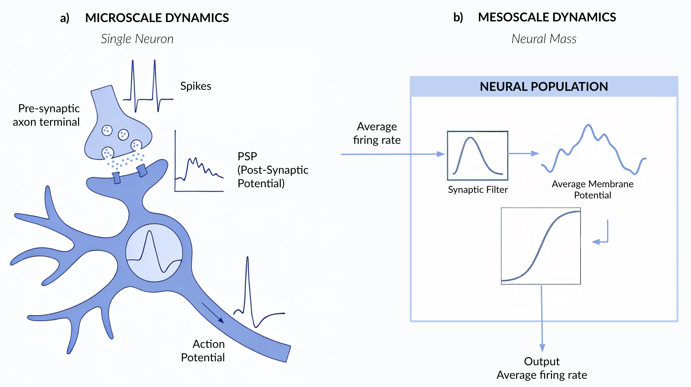
Computational modeling concepts
Neural mass vs. neural field. A neural mass model is a lumped (point) description of a neuronal population (e.g. a cortical column, parcel, or nucleus), in which the collective activity of many neurons is summarized by a finite set of population-averaged state variables. These variables may represent firing rates, mean membrane potentials, synaptic currents, or other mesoscopic quantities, and are typically governed by low-dimensional ordinary differential equations (ODEs), stochastic differential equation (SDEs) or, when propagation delays are retained, delay differential equations (DDEs). A neural field model is the spatially continuous counterpart, in which the same variables depend on position and interact through spatial kernels or PDE/integral operators. Both masses and fields can be rate-based, voltage-based, conductance-based, or derived as mean-field limits of spiking networks; thus, mass should be understood as lumped vs. spatially extended, not as a synonym for rate. We use a two-variable representation as the minimal autonomous system that supports oscillation. Real neural mass models are typically higher-dimensional; the pair is the recurring rotational sub-block, not a model in itself.
In this review, the concept of “neural mass model” is used in two related but distinguishable ways in the literature. In the Wilson–Cowan / Freeman / Lopes da Silva / Jansen–Rit / Wendling / laminar neural mass model (LaNMM) lineage, and in its exact next-generation extension by Montbri’o, Paz’o & Roxin (MPR / NMM2), “neural mass” is the family name of a specific modelling tradition: lumped population descriptions written in terms of firing rates and/or post-synaptic potentials, with current-based synaptic interactions through linear filters, and a population-level transfer relation linking input current to output firing rate. Within this tradition the transfer relation may be a static sigmoid (Jansen–Rit, Wendling, LaNMM), a dynamically filtered sigmoid (Wilson–Cowan, where the firing rate evolves through ), or an exact dynamical relation derived from the spiking microscale (MPR / NMM2). In the dynamical-systems and mathematical-neuroscience traditions, by contrast, “neural mass” simply means lumped (as opposed to neural field, spatially extended), and the term covers any zero-dimensional population description regardless of whether its dynamical variables are firing rates, mean voltages, conductances, or order parameters of an exact spiking-network reduction, and regardless of whether synaptic interactions are current- or conductance-based. Under this broader definition, the Liley conductance-based mean-field [15], the Robinson corticothalamic propagation model [16,17], the Wong–Wang / Dynamic-Mean-Field reduction [18,19], and the David–Friston canonical microcircuit [6] are all neural mass models. We adopt this broader (lumped-vs.-field) definition throughout the review. The derivations and cross-walks that follow, however, concentrate on the current-based rate/PSP lineage and its exact next-generation reduction, because that is the sub-family within which the chain of dynamical equivalences — phase oscillator damped oscillator Stuart–Landau Wilson–Cowan NMM1 NMM2 — is tightest, and where a unified notation yields the most leverage. The conductance-based, propagation-speed, decision-circuit, and dynamic causal modelling (DCM) lineages are credited in block (B) of the roadmap Table and revisited in the synthesis of §§8, but they are not re-derived in detail here.
Oscillators and oscillations. We use “oscillator” and “oscillation” in two related but non-identical senses. In the dynamical-systems sense, an oscillator is an autonomous system that supports persistent rhythmic motion, most commonly through an attracting periodic orbit (a stable limit cycle), but also through neutrally stable centers in idealized conservative models. In the data-analysis sense, an oscillation refers to a signal component with a dominant timescale (often visible as a narrow-band spectral peak). These notions overlap but need not coincide: for example, a damped linear focus driven by noise can produce noise-sustained quasi-cycles (spectral peaks without a deterministic limit cycle), whereas chaotic systems are aperiodic yet may still show prominent spectral structure. In algorithmic information theory terms, we would say that a signal is an oscillation if it can be efficiently compressed by exploiting its approximate periodicity. This reflects the scientific observer’s perspective on modeling the phenomenon (see the Appendix U1 and the topology of the Stuart-Landau equation for a more in-depth discussion).
Harmonic oscillators are prototypical oscillatory systems, linear and conservative models of a mass-spring system with an angular frequency and a sinusoid whose amplitude is fixed by initial conditions [20].
Limit-cycle oscillators are nonlinear and dissipative; after transients, they settle onto a stable closed orbit.
A node is one neural mass; a network is a set of nodes connected by synaptic links, which can encode axonal delays and gains. Coupling just two nodes is enough for symmetry-breaking, phase locking, and collective bifurcations.
Push–pull motif as a local dynamical decomposition. Across the models reviewed here, oscillations typically arise from an interplay between (i) a variable that tends to drive activity away from a reference state (“push”) and (ii) a variable (or process) that provides a restoring or damping effect (“pull”). In a harmonic oscillator these are displacement and momentum (or two quadrature variables); in E–I population models they correspond to excitatory and inhibitory components of the loop; in complex normal forms they appear as the real and imaginary parts of . Importantly, in biophysically detailed conductance-based synapses, synaptic currents depend on the state through reversal potentials (“shunting”): the effective sign and strength of an interaction can therefore change with membrane potential. Throughout, the push–pull language should be read as an operating-point-dependent effective interaction (often after linearization and/or under current-based approximations), rather than as a universal, state-independent statement that “excitation always pushes” and “inhibition always pulls”.
Forcing is any external drive that breaks the autonomy of a node: input from another node in the network (which we call coupling below), electrical stimulation, pharmacological modulation, sensory pulses, or broadband synaptic noise from sources not explicitly modelled. When the unforced system has a strongly attracting limit cycle and forcing is weak, its leading-order effect is typically a modulation of phase captured by a phase response curve [21]. When attraction is weak and/or forcing is strong, amplitude deviations and qualitative changes of the attractor can no longer be neglected, and a phase-only description may fail.[22]
Coupling is forcing generated by other nodes: one neural mass serves as a time-dependent drive for another. Coupling may be instantaneous or delayed, linear or nonlinear, and weak or strong. In the weak-coupling/strong-attraction regime, coupling often reduces to an effective interaction between phases (yielding generalized Kuramoto-type descriptions); outside that regime, amplitude effects (and possibly multistability) become central. External stimulation can be viewed as a degenerate form of coupling in which the “partner” signal is prescribed by the experimenter or device.[23,24].
Mathematical tools
Fixed points and linear stability. Given a dynamical system with and at least continuously differentiable, a fixed point satisfies . Unless stated otherwise, “stability” in this review refers to linear stability: the local behavior is determined by the eigenvalues of the Jacobian (and, in delay systems, by the corresponding characteristic spectrum). A stable fixed point attracts nearby states, while an unstable one repels nearby states [25].
Hopf bifurcation (also Hopf-Andronov, HA). A two-dimensional system can begin or cease to oscillate in four ways ; we focus on HA bifurcation throughout, and refer the reader to [25,26,27] for the others. A Hopf bifurcation occurs when a complex-conjugate pair of eigenvalues of crosses the imaginary axis, exchanging the stability of a fixed point.
Differential Linear operator (): Every synapse in the model behaves like a linear filter: it receives an incoming firing-rate trace and converts it into a post-synaptic potential (PSP) . Written explicitly, this is a linear operation (convolution, see Appendix App. I) equation x(t)= K[r(t)] , equation or, equivalently, equation r(t)= L[x(t)] , equation where is the synapse’s impulse-response kernel and the inverse operator of , . Framing the dynamics in terms of makes the filter’s gain, decay time and delay visible in a handful of coefficients and shows how the population amplifies, attenuates or phase-shifts small perturbations [25]. In the simplest push–pull oscillator, there are two such operators, one excitatory and one inhibitory; extending the network adds one row per additional connections between populations.
Nonlinearity: Models beyond the harmonic oscillator include nonlinear terms. They reflect the transformation of synaptic inputs into firing rates by the neuronal population. This is necessarily a nonlinear function because firing rates are bounded above and below.
Phase reduction and phase–amplitude reductions. When a system possesses a stable limit cycle with strong attraction and is subject to weak forcing/coupling, its dynamics can often be reduced to a phase equation , leading to phase-oscillator networks. If amplitude excursions matter (e.g. near weak attraction, near bifurcations, or under stronger perturbations), one can extend this to phase–amplitude descriptions (e.g. phase–isostable reductions) that retain the leading amplitude modes in addition to phase. We will point out, as models become more biophysical, when phase-only reductions are appropriate and when full-state (amplitude-including) descriptions are required.
| p0.28 >p0.68 Model | Coupled node equation |
| (A) Normal-form ladder used as a mathematical scaffold in this review | |
| Phase-only (Kuramoto / undamped HO) | |
| Linear damped oscillator network | |
| Stuart–Landau (Hopf) network | |
| Wilson–Cowan (WILCO) E–I rate network | |
| NMM1 (second-order synapses, E–I motif) | |
| NMM2 (next-generation / QIF-based E–I motif) | |
| (B) Other canonical whole-brain node models (listed for completeness; not derived here) | |
| Conductance-based / shunting mass (Liley-type) [28,29,15] | |
| Corticothalamic / propagation-speed model (Robinson-type)[16,17] | |
| Reduced Wong–Wang / dynamic mean-field (DMF) node [18,19] | |
| David–Friston / DCM neural mass (canonical microcircuit family)[6] |
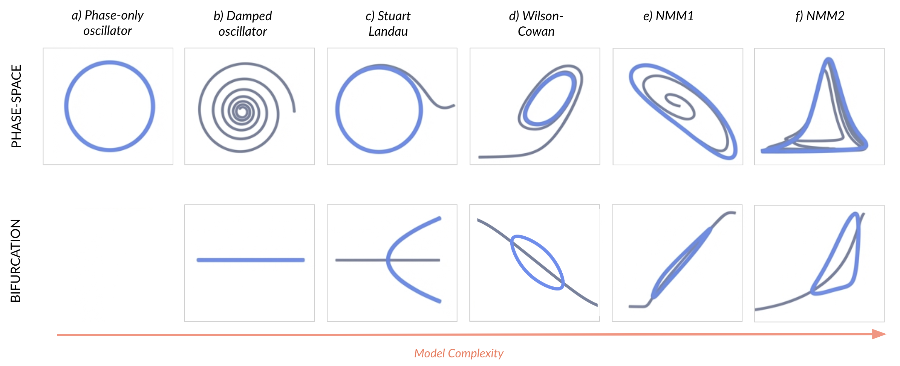
2 Linear Response and Phase-Only Limits
Linear and phase-only descriptions are a natural starting point in any physics-oriented review of neural mass models, for three concrete reasons. First, networks of linear (or linearised) damped oscillators admit closed-form expressions for stationary covariances, lagged covariances, and power spectra in terms of the Jacobian and the connectome, yielding analytic predictions for empirical observables—functional connectivity (FC), MEG/EEG power spectral densities—that are routinely fitted to data [30,31]. Second, every nonlinear neural mass model introduced later in this review (Stuart–Landau, Wilson–Cowan, NMM1, NMM2) reduces near a stable focus to a linear damped oscillator, so the present section supplies the universal local description that subsequent models inherit. Third, the linear network on a connectome is the natural setting for graph-spectral and connectome-harmonic decompositions, in which the dynamics diagonalise in the eigenbasis of the connectivity Laplacian and link directly to large-scale brain modes observed in MEG/EEG [32]. At its core, an oscillation requires (i) at least two dynamical variables—or one complex variable whose real and imaginary parts exchange “energy” or activity, pushing or pulling on the another—and (ii) a mechanism to rotate or cycle continuously through phase space. The simplest realisation of these requirements is the undamped, phase-only oscillator, in which a single phase variable advances uniformly while the amplitude remains fixed. This phase reduction is itself an explicit modelling choice—valid under weak forcing and strong attraction to a limit cycle—and serves throughout this review as the pedagogical starting point onto which damping, external forcing, and nonlinear amplitude dynamics are progressively grafted [33,34].
2.1 Undamped (Phase‐Only) Oscillator
The basal mechanism leading to oscillations in the activity of neuronal populations relies on the interplay between two subpopulations of neurons, one of them inhibitory and the other excitatory. We can represent the activity of these two populations by two variables and , respectively. In the simplest description, we can assume that decreases linearly, whereas increases also linearly. Assuming that the proportionality coefficient is the same in the two cases, we obtain a simple set of two coupled linear differential equations:
Defining
one obtains directly a rescaled model in polar form:
This is simply a phase (undamped) oscillator with natural angular frequency , which in our case determines the synaptic/membrane time constants of the populations. From (2.4)-(2.5) we immediately obtain , while . Thus this system is characterized by a constant (conserved) amplitude and a linearly advancing phase .
Equations (2.1)-(2.2) provide the fundamental push-pull motif underlying oscillations in all our models: whenever is positive, it drives negative, acting like an inhibitory force on ; when becomes negative, the sign flips and is driven upward, as if released from inhibition into excitation. In turn, a positive pushes upward—exciting —while a negative pulls downward, inhibiting . This continuous alternation of “push” and “pull” ensures that neither variable drifts off balance: instead, they chase each other around in a perfect circle of constant amplitude.
Introducing the complex variable
one finds
so that
Its solution is , from which and can be determined.
2.1.1 Effect of forcing
To illustrate the effect of a tonic drive (deterministic or stochastic), we augment the undamped oscillator (2.8) with a complex forcing term . First, consider a constant :
A purely real produces a DC offset , around which the trajectory circulates (see Appendix section §H.5 for more details). When varies in time, Eqs. (2.9)–(2.10) describe how the instantaneous bias modulates both amplitude and phase. To see this, we note that in the complex representation,
the term gently shifts the oscillator’s center and can transiently entrain or phase‐shift the trajectory without altering its underlying circular geometry (see Appendix §H.5 for further details on the effects of forcing).
2.1.2 Internal and external contributions to forcing; electric fields
Forcing appears in all models, internal (from other nodes, i.e., coupling) or external (unmodelled nodes, neuromodulation, electric fields). We allow for the possibility of forcing to be of a stochastic nature, indicating this with a hat notation (). Next, we divide forcing contributions between internal contributions from the network model in which the node lies (, which we include in models typically as coupling), and external to it (). We also separate the latter into external driving of physiological origin () and perturbations from an external electric field ,
where is some operator or function of the electric field. Thus, we will normally model as a sum of a deterministic component — typically from inputs from external populations and an electric field contribution from transcranial electrical stimulation (tES), transcranial magnetic stimulation (TMS) or deep brain stimulation (DBS), for example —, and an additive zero-mean stochastic contribution to forcing .
For example, in the case of weak electric fields at low frequencies (transcranial electrical stimulation or tES), the contribution from the electric field is of the form,
Here, the electric field effect is linear through a vectorial coupling constant () and captures ensuing membrane perturbations [35,36,37,38,39].
We will use the notation in Eq. (2.12) in the following sections, adding a node index if needed (i.e., for the forcing on node ).
2.1.3 Network of undamped harmonic oscillators
Here, we provide the general coupled network model and show how it connects to the Kuramoto model presented below. Following the additive forcing model for coupling, the equation for a network of oscillators is
To connect the coupled linear oscillator network in (2.15) with a phase‐only description, we write each state in polar form
Substituting into (2.15) and separating real and imaginary parts yields coupled equations for amplitudes and phases. With , the amplitude dynamics read
and the phase dynamics
which already has Kuramoto–Sakaguchi structure, but with time-dependent amplitudes . A genuine phase-only model is recovered as an explicit reduction choice: when the amplitudes relax to a fixed spatial profile (a slow manifold approached when the linear spectrum has a single marginal mode and all others decay), the amplitude equation (2.17) sets and (2.18) reduces to the constant-coupling form of Eq. (2.19) below.
A convenient way to make this connection more concrete is to add a weak uniform decay term, , and to interpret the resulting dynamics in terms of the spectrum of the linear operator [40,41]. For appropriate choices of and , all but one eigenmode decay, while a single collective mode remains marginal and rotates at a common angular frequency. In this collective oscillation regime, the amplitudes relax to a fixed spatial profile , so that (2.18) reduces asymptotically to a genuine phase model with constant effective couplings,
This construction shows how a linear complex network with global phase symmetry naturally generates a low‑dimensional manifold of phase dynamics that is well captured by Kuramoto–type equations [42,43,44]. At the same time, the Kuramoto model is usually taken in the opposite, more general direction: as a phenomenological phase description for weakly coupled limit cycles with symmetry, where the coupling matrix and coupling function are not constrained to arise from any particular underlying linear operator.
2.1.4 The Kuramoto model
The canonical model for studying collective phase dynamics is the Kuramoto model — “the hydrogen atom of synchronisation” due to its simplicity, analytical tractability, and extraordinary reach across disciplines [45,34,46,47].
Starting from the undamped limit cycle in Eq. (2.4), Kuramoto assumed that each oscillator interacts with all others only through the difference of their phases. For a population of units this yields
where is the natural frequency of oscillator and is a global coupling constant.
As additional motivation of this model, the sine term is the first (and usually dominant) Fourier component of any ‑periodic interaction function[48], and retaining only this term might capture most of the essential physics. In the classic all‑to‑all case with a unimodal, symmetric frequency distribution and pure sine coupling (no phase lag), increasing past a critical value produces a continuous (second‑order) transition to synchrony that is solvable exactly in the thermodynamic limit () [49]. More generally—depending on the frequency distribution, the presence of phase‑lag or higher harmonics in the coupling, and the network structure—the transition can be abrupt and hysteretic (first‑order) or continuous. No other phase‑only coupling law has proved as analytically transparent or universally useful.
For whole-brain simulations, we couple phases over a weighted network and include drive and noise:
Here is the connectivity matrix, a global coupling gain, the intrinsic angular frequencies, the delays, fixed phase lags, and the external forcing. In whole-brain applications, is most commonly estimated from diffusion magnetic resonance imaging (dMRI; tractography from white-matter streamlines) and from tract lengths and an effective conduction velocity .
The box below summarises the parameters of the phase-oscillator description and gives guidelines for using it to model neural populations.
Whole-brain Simulations Parameters & Physiological Meaning
| Node | Coarse‑grained neural population (e.g., cortical/subcortical parcel or column) treated as a single phase unit. |
| Network size: number of regions/nodes (parcels) modeled. | |
| Quadrature push–pull components of a mesoscopic E/I loop. A positive suppresses (inhibitory‑like), negative releases (excitatory‑like), and vice versa, sustaining rotation. | |
| Independent standard noise sources. | |
| Global coupling gain scaling long‑range synaptic influence; proxies neuromodulatory gain/arousal effects on inter‑areal drive. | |
| Connectivity weight from region to . Typically structural (white‑matter tract strength or streamline count); can also be functional (FC) or effective (EC) matrices when modeling phenomenology or directed influence; synthetic graphs (all‑to‑all/modular/distance‑decay) if data are absent. | |
| Propagation delay along (conduction + synaptic). Estimate from tract length/velocity; typical few–tens of ms. | |
| Natural angular frequency (); reflects effective synaptic/membrane time constants of the local E/I loop. | |
| Local phase (population timing / excitability window) of node . | |
| (const.) | Baseline amplitude / power envelope of the population rhythm; held fixed in the phase‑only reduction. (Eq. 2.5). |
| Fixed phase‑lag (Sakaguchi offset) capturing delays/filtering at a carrier frequency; recovers pure Kuramoto coupling. If using explicit , set or use . | |
| Exogenous drive (external forcing from nodes or elements outside the network or an electric field, see Eq. 2.12). |
Use this when phase relations matter more than amplitudes: synchrony, phase locking, entrainment.
Assumptions near a stable limit cycle with approximately constant power.
Best for large networks needing analytic clarity and light compute (order parameter, clustering, locking bandwidths).
Inputs act mainly as phase biases/periodic drives.
Avoid if envelope dynamics, amplitude quenching, or bursty power are essential—use an amplitude–phase model.
State phases only: ; fix amplitude .
Provide (connectome): structural (dMRI/tractography), functional (empirical FC weights), or effective (model‑based directed EC); if unavailable, use all‑to‑all, modular, random, or distance‑decay graphs. Also set .
Frequencies with narrow spread (or heterogeneous if desired).
Optional delays (or static phase‑lags ), drive (e.g., ).
Defaults normalize ; set initially; ; .
Integration & reproducibility ().
With non-zero delays and stochastic forcing, Eq. (2.21) is a stochastic delay differential equation (SDDE), not an ODE/SDE. In the deterministic limit (), we recommend a method-of-steps DDE solver with adaptive step size and continuous interpolation of the delayed history (e.g. MATLAB dde23, Julia DelayDiffEq.jl). When stochastic forcing is included, no fully standard SDDE solver is universally adopted; in practice we use a fixed-step Euler–Maruyama scheme on the delayed system as a controlled approximation, with the following caveats: (i) the discretisation is piecewise-constant (or piecewise-linear) noise on each step; (ii) delayed states are recovered from a circular history buffer with linear interpolation when ; (iii) the step size must satisfy both the oscillation-resolution bound and the delay-resolution bound , with convergence verified by halving and checking statistical observables.
Reporting. For reproducibility, fix and report: solver name and version, the SDDE discretisation scheme (noise model and interpolation), , total simulated time, discarded transient length, and the seed of the random number generator.
Readouts order parameter , report ; synthesize if needed.
Throughout this review, references to “alpha,” “gamma,” and other named rhythms follow the standard clinical electroencephalography (EEG) / magnetoencephalography (MEG) band conventions:
- (1–4,Hz)
Slow-wave activity; dominant during deep (non-REM stage 3) sleep and unconsciousness; cortico-thalamic origin.
- (4–8,Hz)
Drowsiness, memory encoding, navigation; prominent in hippocampus and medial temporal lobe.
- (8–13,Hz)
Relaxed wakefulness with eyes closed, posterior dominance; thalamo-cortical generator (Adrian–Berger rhythm).
- (13–30,Hz)
Active cognition, sensorimotor processing; modulated by movement preparation.
- (,Hz, often 30–80,Hz)
Local cortical computation, feature binding; pyramidal–interneuron gamma (PING) / interneuron gamma (ING) interneuronal mechanisms.
The boundaries are conventional and vary slightly across the literature. We refer back to this box whenever a specific band is invoked in subsequent sections.
2.1.5 Applications
Historically, the phase‑oscillator framework grew out of Winfree’s program in theoretical biology, which showed how large populations of weakly coupled limit‑cycle oscillators with heterogeneous natural frequencies could synchronize and be reduced to phase dynamics [50]. Kuramoto then analysed an idealized continuum limit with sinusoidal coupling, deriving a closed mean‑field description via a complex order parameter and predicting a continuous transition from desynchrony to partial synchrony [51]. His 1984 monograph consolidated the theory and notation used today, and later expositions placed the model as a paradigm for collective synchronization across physics, chemistry, and neuroscience [42,52,53].
Kuramoto‑type networks have become ubiquitous in computational neuroscience, appearing in everything from large‑scale cortex‑as‑a‑graph models that reproduce zero‑lag synchrony, realistic blood-oxygen-level-dependent (BOLD) fluctuations, and structured MEG amplitude envelopes[54,5,55,56] to theories of how rhythmic sensory inputs entrain cortical circuits at the level of individual columns[57]. This popularity stems from the model’s tight mapping to neural ingredients: each oscillator’s intrinsic frequency can represent the diverse frequency content of cortical rhythms, and the coupling constant collects the net gain of synaptic (as well as ephaptic or subcortical) interactions among neurons or brain regions. At the macroscopic scale, the emergence of phase coherence provides a principled analogue of the global signals captured by EEG/MEG[54,58].
As coupling increases, heterogeneous oscillators undergo a transition from desynchrony to partial synchrony[51,53], offering a mechanistic lens on how large‑scale neural oscillations (e.g., alpha) can arise gradually as effective interactions strengthen. Within connectome‑constrained implementations, this framework has clarified how zero‑lag synchrony can occur across distant cortical areas, how hubs facilitate inter‑modular coordination, and how network activity explores metastable, clustering regimes that wax and wane over time[59,60,61,62].
The same phase‑only formalism is well suited to external drive: because inputs enter as phase biases, periodic stimulation can lock phases over predictable bandwidths, accounting for stimulus‑locked entrainment and phase‑reset phenomena in EEG/MEG[57]. This logic extends beyond the cortex—for example, circadian networks in the suprachiasmatic nucleus are naturally captured as forced phase‑oscillator ensembles[63].
To bridge toward biological realism, neuroscience variants relax idealizations by introducing sparse/weighted structural connectomes, heterogeneous propagation delays, stochasticity, and higher‑harmonic couplings. These “realism knobs” generate chimeras (coexistence of synchronized and desynchronized populations), metastable clustering, and frequency‑dependent phase‑lag structure—while retaining a tractable phase core[60,61,64,65,66]. Importantly, when these extras are set to zero, the models reduce to the canonical Kuramoto equation, preserving interpretability and analytical leverage.
Finally, the phase‑only reduction is biologically insightful because many cortical E/I loops operate near a limit cycle, so the theory cleanly separates when a population fires (phase) from how strongly it fires (amplitude). This turns questions about perception, attention, communication‑through‑coherence[67], and intervention into questions about phase alignment and effective coupling—precisely the levers neuromodulators and stimulation can adjust. In practice, Kuramoto‑type reductions have informed control strategies in deep‑brain stimulation and desynchronization therapies[68,69,70,71], and physiologically motivated variants link coupling and phase shifts to transmitters and hemodynamics[72]; related approaches have begun to quantify coupling abnormalities in clinical cohorts[73].
2.2 Damped Harmonic Oscillator (DHO)
Introducing a real damping coefficient ( for decay, for growth) into Eq. (2.5) (unforced case) the equations of motion become
which, in Cartesian coordinates, reads
The fundamental “push–pull” interaction between and persists in the damped case: the term continues to inhibit (or disinhibit) exactly as in the undamped case, while drives . On top of this reciprocal coupling, each variable now experiences its own leakage (if ) or intrinsic amplification (if ) through the terms and . As a result, the two‐node loop still chases its 90° phase offset, but gradually spirals inward under leak or outward under growth. This interplay—orthogonal E/I feedback combined with uniform decay or gain—captures how real neural circuits blend balanced excitation and inhibition with membrane‐ or synaptic‐level dissipation (or recruitment), producing damped (or growing) oscillations rather than perfect, constant‐amplitude rotations.
Letting yields the compact complex form
2.2.1 Effect of Forcing
To introduce a constant (or very slowly varying) drive, one again writes
This moves the only fixed point of the system from to
From the linear stability analysis, trajectories spiral into (for ) or out of (for ) the off‐center equilibrium (see details in Appendix App. C). In polar coordinates (see Eqs. (2.22)–(2.23)), can exactly balance the leakage term . A constant real ensures that does not decay to zero, mirroring how a steady current injection holds a neuron at a depolarized potential. More generally, time‐dependent encodes transient pushes and pulls that can transiently boost amplitude, shift phase, or perturb the equilibrium away from its natural damped focus—preparing the oscillator for subsequent coupling effects in network models.
2.2.2 Coupling: Network of damped harmonic oscillators
Consider oscillators that, when uncoupled, each satisfy
where (real) is the common damping () or growth () rate, is the natural frequency, and is any external (complex‐valued) input. Introducing all‐to‐all diffusive coupling among these units yields the network equation
Here, each denotes the intrinsic frequency of node , is the global coupling strength, and the term represents a diffusive interaction that pulls each oscillator toward the network centroid . Consequently, this all‐to‐all linear network is precisely the linearized limit of the Stuart–Landau network (introduced in the next section).
For whole‑brain simulations in the damped regime, we place a linear resonator at each node and couple them through a weighted connectome with optional delays, additive drive, and noise:
Here is the complex state of node ; sets linear damping (decay time ) and is the intrinsic angular frequency; is an optional global coupling gain sometimes used to fit models; are (possibly directed) connectome weights; are propagation delays (set if ignored) and is the external forcing; Setting and taking recovers the all‑to‑all form in Eq. (2.29).
With linear coupling and real , the network coupling term in Eq. (2.30) unpacks as
i.e., the connection links push to push and pull to pull at equal strength, with no cross-talk between the push of one node and the pull of another. Allowing to be complex rotates the coupling by and mixes the two channels across nodes — the Sakaguchi–Kuramoto phase-lag structure that emerges in the polar reduction (2.18), with at a carrier frequency identifying the offset with a conduction delay [74]. The interpretation is mode-agnostic: may be a pair of firing rates, a post-synaptic potential and its time derivative, or any pair of variables that play the push–pull role of the local rhythm. Linear coupling in thus corresponds to current-based, frequency-independent inter-areal drive linearised around a stable operating point.
Whole-brain Simulations Parameters & Physiological Meaning
| Node | Neural mass (parcel/column or nucleus) represented as a linear damped resonator. |
| Number of nodes (parcels). | |
| Complex mesoscopic activity; are quadrature “push–pull” components (in‑phase / quadrature of a local E/I loop). | |
| Linear damping (leak/gain). gives a stable focus with decay time ; reflects local E/I balance, membrane and synaptic dissipation. | |
| Intrinsic angular frequency (preferred local timescale); set by effective synaptic/membrane constants. . | |
| Global coupling gain controlling the overall strength of inter‑areal drive. | |
| Connectivity from region to (structural connectivity (SC) from tractography by default; functional/effective connectivity (FC/EC) alternatives or synthetic graphs if needed). | |
| Propagation delay on pathway (axonal conduction & synaptic latency); typically estimated as from tract length and an effective conduction velocity ; induces frequency‑dependent phase offsets. | |
| Exogenous drive (external forcing from nodes or elements outside the network or an electric field, see Equation 2.12). Complex or real valued. |
Use this when you want brain‑scale resonance with decay (stable focus): fitting FC/covariances, lag structures, and power spectra; probing linear entrainment and susceptibility.
Assumptions small fluctuations around equilibrium (), additive noise and/or weak drive; linear coupling over the connectome (optionally with delays).
Best for closed‑form second‑order statistics (covariances, cross‑spectra), rapid parameter sweeps, effective‑connectivity estimation, graph‑spectral analyses.
Avoid if self‑sustained oscillations, limit cycles, or multistability are essential—use full Stuart–Landau/Hopf bifurcation dynamics instead.
Provide (SC default; FC/EC or synthetic graphs if SC unavailable), , , (centered on target band), optional , , and .
Defaults normalize ; pick with in a plausible range; set initially.
Integration (). With non-zero delays and stochastic forcing, Eq. (2.30) is a stochastic delay differential equation: prefer a method-of-steps DDE solver in the deterministic limit, or use fixed-step Euler–Maruyama on the delayed system as a controlled approximation with and convergence verified by step halving (cf. the Kuramoto-box discussion above).
Readouts stationary covariance/lagged covariance, PSD and cross‑spectra; impulse/transfer functions for linear response; reconstruct if a real observable is needed.
2.2.3 Applications
Equation (2.26) is the small-amplitude (linearised) limit of the canonical Stuart–Landau (SL) oscillator, whose full version is introduced below. In this regime, each node behaves as a damped complex oscillator whose real and imaginary parts jointly encode a local E/I loop: the real part plays the role of in-phase activity, the imaginary part the quadrature component, and the linear coefficient sets the decay time back to equilibrium while fixes the resonance frequency.
Linearity means that second-order statistics — instantaneous and lagged covariances, cross-spectra, and power spectral densities — admit closed-form expressions involving the Jacobian and the connectome (with optional delays), so functional connectivity and spectra follow without simulation. This is worked out explicitly for the SL whole-brain model by Ponce-Alvarez and Deco, who derive analytic formulas and show their accuracy near the stable focus [75].
Because of that tractability, the linear damped-oscillator network has become a standard baseline in whole-brain modeling pipelines: (i) as a linearized SL model with analytically tractable functional connectivity (FC) and power spectral density (PSD) for rapid parameter sweeps and state comparisons; (ii) as a multivariate Ornstein–Uhlenbeck (MOU) model on the connectome to fit time-shifted covariances and estimate effective connectivity; and (iii) as graph-spectral neural-field approximations in which connectome eigenmodes diagonalize the dynamics. Representative examples include the SL-linearisation for closed-form statistics and fast grid searches [75], MOU-based estimation of directed effective connectivity from fMRI [31], and analytic graph-neural-field or spectral-graph models that link Laplacian eigenmodes to MEG/EEG spectra and spatial patterns [76,77,78]. Together, these works show that much of the large-scale resting-state phenomenology of the brain can be captured by linear (or linearised) dynamics, a point underscored by systematic model-selection studies arguing that macroscopic resting-state activity is often best described by linear models [79].
Biologically, this phase-linear description retains the features most relevant at mesoscopic scales. The damping reflects local E/I balance and neuromodulatory tone; captures dominant local timescales; coupling rescales long-range synaptic, ephaptic or subcortical gain; and inputs represent afferents or stimulation. In this light, stimulation acts as designed forcing that reveals the network’s linear frequency response (and hence entrainment bandwidths). In contrast, pharmacology primarily shifts effective gain or damping and can therefore alter susceptibility and resonance.
Stimulation and pharmacology as perturbations of the linearised focus.
Linearising any of the network models in this review around a stable focus and writing the deviation recovers the complex damped network of Eq. (2.30), , with Jacobian , , , and Gaussian white noise of covariance . For the stationary covariance satisfies the Lyapunov equation , and the cross-spectral density factorises through the resolvent : [30,31]. A pharmacological intervention enters as a parameter shift inherited from changes in local gain/damping () and effective coupling (). To first order the covariance and PSD respond as
A drug that nudges a region toward Hopf shrinks the real part of the corresponding eigenvalue of and sharpens the spectral peak as the inverse of the eigenvalue’s distance to the imaginary axis; an intervention that rescales effective coupling redistributes power across modes through the eigenstructure of . Stimulation reads the same equation with active. A periodic drive (e.g., transcranial alternating current stimulation (tACS) at carrier frequency ) admits the steady-state response : the same resolvent that sets the spectrum also sets the entrainment bandwidth and its spatial selectivity, with regional response amplified along eigenmodes of whose imaginary part lies near . Pharmacology and stimulation are two readouts of the same linearised susceptibility, identifiable from the same fits [80].
Finally, the linear network sits naturally at the base of a modeling “ladder”, where it has already provided evidence for the functional relevance of oscillations in the brain [81]. When nonlinear terms are reintroduced (full SL), one recovers amplitude dynamics, multistability, and turbulence-like regimes exploited to explain state-dependent changes (e.g., wake vs. sedation, psychedelic modulation) and nonequilibrium signatures. Yet even there, linear-response or linear-noise approximations remain invaluable for deriving analytic perturbation metrics (e.g. fluctuation–dissipation measures of nonequilibrium) and for mapping empirical changes onto interpretable parameter shifts [82,83,84,85,86].
3 Stuart–Landau Oscillator (SL)
The Stuart–Landau (SL) oscillator extends the linear damped oscillator of Section §2 by adding a cubic amplitude saturation, producing a self-sustained limit cycle through a Hopf bifurcation. As the normal form of that bifurcation, SL is the minimal phase–amplitude model into which every nonlinear neural mass model considered in later sections (Wilson–Cowan, NMM1, NMM2) locally reduces near oscillation onset, so it serves as the universal local bridge for the cross-walk this review develops. Biologically, the cubic term abstracts a family of self-regulating mechanisms—synaptic depression, spike-frequency adaptation, inhibitory plasticity [87], and other homeostatic feedbacks [88,89]—which together prevent the runaway dynamics of unregulated linear models.
In polar form writing yields
Here, the linear terms generate growth and rotation, while the amplitude‐dependent nonlinearities self‐regulate both amplitude and frequency, stabilizing the limit cycle at . More specifically, is the linear growth () or decay () rate, is the intrinsic oscillation frequency, governs nonlinear amplitude saturation, introduces nonlinear frequency modulation, coupling amplitude and phase. Equations ((3.1), (3.2)) represent the normal form of a Hopf bifurcation[90], which gives rise to the sustained oscillations characteristic of the SL (or sometimes called Hopf) model (see Figure Fig. 3.3 and Appendix App. C for details).
The amplitude equation drives toward
while the phase evolves at an amplitude‐dependent rate .
In Cartesian form with and , one obtains
which makes explicit once again the dominating, push-pull motif in the first-order terms. In complex form, in turn, we have:
Effect of Forcing To model constant or time-varying synaptic inputs, we add a complex forcing term ,
A constant displaces the limit cycle to a new fixed point , implicitly given by
generally yielding . Thus, provides a biologically plausible mechanism for input‐dependent modulation of both amplitude and frequency, although it may also alter the stability of the attractor (see Appendix §H.5).
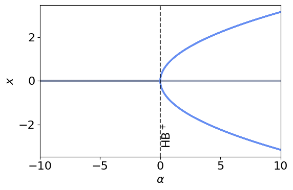
Coupling Extending to a network of diffusively coupled SL oscillators, each node obeys
where is the intrinsic frequency of node , the coupling strength, and any external input. The diffusive term synchronizes the network by pulling each oscillator toward the ensemble mean, while nonlinear saturation ensures bounded amplitudes, giving rise to collective phenomena such as synchronization, amplitude death, and clustering.
For whole‑brain simulations with nonlinear nodes, we couple Stuart–Landau oscillators over a weighted connectome with optional delays, additive drive, and noise:
where is the complex state; and are the local SL parameters; is a global coupling gain; is the (possibly directed) connectivity matrix (set for all‑to‑all if no connectome is used); are propagation delays (set if ignored) and is the external forcing. We can rewrite these equations in polar coordinates to reconnect with the Kuramoto model [91]. For phase-oscillator networks with distance-dependent conduction delays—directly relevant to whole-brain SL models with heterogeneous tract lengths—Budzinski et al. [92] derive analytical predictions for the resulting spatiotemporal patterns by analysing the spectrum of a delay operator combined with the adjacency matrix, providing closed-form access to the locked, twisted, and wave-like states observed in delayed Kuramoto-type whole-brain simulations.
Whole-brain Simulations Parameters & Physiological Meaning
| Node | Neural mass (parcel/column or nucleus) with nonlinear self–limiting dynamics. |
| Number of nodes (parcels). | |
| Complex mesoscopic state; are quadrature “push–pull” components (E/I‑like in‑phase and quadrature). | |
| Amplitude and phase: . Isolated steady amplitude (if ): ; mean rotation . | |
| Linear growth/decay (Hopf bifurcation parameter). : self‑sustained rhythm; : decay to rest. Physiologically: net local gain/E–I balance, neuromodulatory tone. | |
| Intrinsic angular frequency (preferred local timescale) set by effective membrane/synaptic constants. | |
| Nonlinear amplitude saturation (self‑limiting gain); prevents runaway activity, sets . | |
| Amplitude–phase coupling (“shear”): amplitude changes shift instantaneous frequency; captures nonlinear dispersion/adaptation effects. | |
| Global coupling gain scaling inter‑areal drive over the connectome. | |
| Connectivity weight from region to (SC by default; FC/EC or synthetic graphs when needed). | |
| Propagation delay (conduction + synaptic latency); introduces frequency‑dependent phase offsets. | |
| Exogenous drive (external forcing from nodes or elements outside the network or an electric field, see Equation 2.12). Complex or real valued. |
Use this when you need self‑sustained rhythms with amplitude regulation and phase–amplitude coupling; to place nodes near a Hopf bifurcation point and study metastability, envelopes, and input‑dependent modulation.
Coupled form Diffusively coupled SL nodes on a connectome; nonlinear saturation keeps amplitudes bounded and supports synchrony, clustering, chimeras, waves, and amplitude death (all‑to‑all in (3.8); connectome form in (3.9)).
How forcing enters Add a complex input per node to shift the working point, entrain, or reshape amplitude and instantaneous frequency; constant biases displace the attractor, periodic drives yield nonlinear locking (single‑node in (3.1)–(3.2); forcing in (3.7)).
Strengths Minimal nonlinear phase–amplitude model; explicit control of oscillation onset via ; captures band‑limited power, envelope FC/FCD, metastability/turbulence; reduces to linear analytics near the stable focus.
Limitations Abstract (few biophysical knobs); parameter identifiability harder far from the Hopf bifurcation; sensitive to delays/coupling very close to the bifurcation; multi‑timescale adaptation needs extensions.
Typical analyses Fit FC/FCD and spectra; map working point vs. coupling/delays; quantify metastability/turbulence; assess entrainment and phase–amplitude metrics; graph‑eigenmode/wave analyses.
Good defaults Set ; place (slightly negative for subcritical “fluctuating” regime, slightly positive for limit cycles); modest heterogeneity; empirical (optional delays ); small noise ; tune to match frequency–amplitude shifts.
Report Working point (), coupling/delay model, frequency distribution, input/noise statistics, and fitted readouts (PSD, FC/FCD, envelopes, metastability).
Model (drop‑in):
Provide (SC default; FC/EC or synthetic graphs if SC unavailable), , local , optional , , and .
Defaults normalize ; choose small (tune distance to Hopf bifurcation: damped, limit cycle), set for scaling, initially; initialize with small random amplitude; Euler–Maruyama or RK methods with . With non-zero delays and stochastic forcing, Eq. (3.9) is an SDDE; prefer method-of-steps DDE solvers in the deterministic limit, otherwise use Euler–Maruyama on the delayed system as a controlled approximation with the dual bound and convergence verified by step halving.
Readouts amplitudes , phases , PSD/cross‑spectra, spatial/temporal FC, order parameters for phase and amplitude; compare to when .
3.1 Applications
The Stuart–Landau equation arose as the weakly nonlinear amplitude equation for the laminar–turbulent transition in shear flows [93,94,95] and is now understood as the normal form of a Hopf bifurcation. Any sustained oscillation that emerges from an instability with weak nonlinearity admits a local SL description, which is what makes SL the natural meeting point for the rate, oscillator, and exact mean-field formalisms compared in this review.
In computational neuroscience, these same properties make SL a natural generative model for whole‑brain dynamics. At the node level, the bifurcation parameter controls the local working point—negative gives noise‑driven, damped fluctuations; yields large, susceptible excursions; and positive produces self‑sustained rhythms—while sets the intrinsic timescale. Network coupling on the structural connectome, together with finite conduction delays and stochastic drive, then determines how local oscillators form transient coalitions, travel as waves, or lock into metastable patterns. In resting‑state fMRI, SL networks tuned close to the edge of the Hopf bifurcation reproduce both static functional connectivity (FC) and its time variability (FCD), with the best fits occupying a narrow corridor of high metastability that effectively defines a dynamical cortical core [96]. Incorporating realistic delays in the same framework explains how fast local generators can coalesce into slow, spatially organized metastable oscillatory modes (MOMs) that appear and dissolve at reduced collective frequencies, linking anatomy to itinerant large‑scale patterns observed across modalities [97].
Electrophysiologically, SL models provide a bridge between structure and spectra. Allowing one or multiple resonant channels per region improves the correspondence to resting MEG: SL networks account for band‑limited envelope correlations, the location of spectral peaks, and the transient alignment of modes, with multi‑frequency instantiations offering the best cross‑band fits [98]. These same phase–amplitude dynamics, when embedded on the connectome with delays, rationalize why modest shifts in global coupling or delay reorganize band‑limited power and envelope FC without changing anatomy, providing a mechanistic map from structure to oscillatory phenomenology [97,99]. Multimodal comparisons (fMRI+MEG) using common structural priors further demonstrate that SL’s small, interpretable parameter set can jointly capture FC, FCD, and transient mode structure across measurements [7].
Casting SL network behavior in the language of turbulence sharpens the operational regime. When the model is fit to empirical amplitude turbulence and FC, the best‑performing working point is typically subcritical fluctuating—just below the Hopf bifurcation—where susceptibility and information‑encoding capacity are maximal; strength‑dependent perturbations in this regime reveal richer responsiveness than in supercritical limit cycling [85,100]. A particularly clean neuroscience instantiation of these ideas is provided by Freyer et al. [101], who showed that an SL-type model with multiplicative noise operating near a subcritical Hopf bifurcation reproduces the scale-invariant bistability of the alpha rhythm observed in resting-state MEG. In their formulation, noise drives stochastic switching between a low-amplitude focus and a coexisting limit cycle, generating the heavy-tailed amplitude distributions and -like spectral signatures characteristic of empirical alpha activity. This canonical example illustrates that noise near criticality is an organizing principle that supports physiologically realistic multistability in neural mass dynamics, and motivates the subcritical-fluctuating working point favored by SL whole-brain fits. Using closely related SL formulations, local‑coherence (“turbulence”) readouts distinguish wake, sleep, anesthesia, and pharmacologically altered states, positioning SL as a compact generative lens on state‑dependent information flow [102]. The same perturbative logic extends to psychedelics: after fitting LSD and placebo states, SL-based in silico stimulations predict enhanced sensitivity to strong inputs and characteristic turbulence signatures under LSD, consistent with empirical observations of expanded dynamical repertoires [103,104]. A complementary perspective frames such state changes through the geometry and complexity of the underlying state space, with plasticity-induced reshaping of attractors as the mechanistic substrate of psychedelic-driven dynamics [105].
Biologically, SL’s parameters expose the very levers experiments can turn. Interpreting the bifurcation parameter as net local E/I gain and neuromodulatory tone frames drugs as parameter shifts that move regions toward or away from oscillatory onset; interpreting external input as forcing turns stimulation into a probe of the network’s susceptibility, mode by mode. Personalizing SL fits thus yields subject-specific maps of working points and delays that generate testable predictions about which regions and frequencies will respond most — and how those responses reorganize whole-brain dynamics. Building on this, dynamic sensitivity analysis quantifies how localized stimulation perturbs subject-specific SL/WC fits and identifies the regions whose targeted modulation most efficiently drives transitions between brain states [106]. Finally, because SL admits a linear approximation near the stable focus, one can derive closed‑form spectra and covariances for rapid exploration and uncertainty quantification, then reintroduce nonlinearity as needed; this provides a transparent bridge between analytic tractability and the rich nonlinear phenomena that motivate the model in the first place [30].
4 Interlude: Synapses and Transfer Functionals
The discussion below interchanges neurotransmitter release, ionic currents, and membrane potential perturbations. These quantities are related by linear operators, and composition of linear operators is itself a linear operator (see Appendix App. I); The chain from presynaptic action potential through conductance, synaptic current, and membrane voltage is the receiving cell therefore collapses to a single first- ore second-order differential equation.
4.1 Synaptic Dynamics and operator formalism
Neurons have two main forms of communication: chemical and electrical. The first happens through neurotransmitters emitted by the presynaptic neuron after a spike [107]. The second is bound to the existence of gap-junctions between nearby cells [108]. It is estimated that chemical synapses drive the vast majority of neural communication in the mammalian brain, and for this reason, electrical coupling has often been considered as a secondary character in neural dynamics (see, however, [109,110,111]). Thus, earlier work on NMMs focused on chemical coupling only.
For a single synaptic connection, the dynamics of neurotransmitter binding can be modelled as kinetic reactions [112,113,114]. Ultimately, both experimental and modeling results show that, typically, upon receiving a spike, the effect of neurotransmitter release to a postsynaptic neuron will first undergo an exponential increase of post-synaptic potential, followed by an exponential decay. Therefore, the postsynaptic-potential (mV) of a single, isolated neuron is usually modeled by the second order ordinary differential equation [114,115]
where and are the rise and decay times (ms), is the amplitude of the PSP (mV/kHz), and is the input term, modeling the arrival of presynaptic spikes.
While Eq. (4.1) corresponds to that of a single neuron , its linearity allows us to quantify the mean synaptic activity of neurons receiving and reacting identically to the same inputs as . Then, we obtain the same equation for the mean synaptic activity,
Interestingly, Eq. (4.2) shares the same structure as the equation of a damped, driven harmonic oscillator, which, as we will show in the following sections, allows it to display oscillations and exhibit diverse dynamical responses.
For a single pulse received at time zero (), the solution to (4.2) is
Usually, different types of neurotransmitters will result in different timescales. Table Table 4.2 contains some putative quantities for these parameters. Considering this variety of time scales, there are two limiting cases of Eq. (4.2) that are widely used in the literature. In some cases, one can simplify this equation by assuming that the rise and decay times are identical, . Then Eq. 4.2 reads
The solution of this equation for a single pulse at time zero () reads
which is sometimes referred to as alpha synapse.
Time constants for the principal receptor types — -amino-3-hydroxy-5-methyl-4-isoxazolepropionic acid (AMPA), N-methyl-D-aspartate (NMDA), and -aminobutyric acid (GABA, GABA) — are summarised in Table Table 4.2.
[t!] slate
| softblue!25 softblue!60!black Neurotransmitter | softblue!60!black [ms] | softblue!60!black [ms] |
| AMPA | 0-2 | 2-5 |
| NMDA | 3-15 | 40-100 |
| GABA | 0-2 | 6-20 |
| GABA | 25-50 | 100-300 |
On the other hand, if one considers that the rise time is almost instantaneous, , then Eq. 4.2 reads
which is just an equation for exponential decay, thus a single pulse at gives the solution
Other types of neurotransmitter kinetics might result in more complex synaptic dynamics [112,113]. Of particular importance is the glutamate NMDA receptors, whose dynamics also depend on the voltage of the postsynaptic neuron [114,115].
The synapse as filter: operator form
How should the synapse equations be read? To shed some light on this, we recast Eq. (4.2) into operator form by rewriting it first, _r_d s(t) + (_r+_d) s +s = r(t), and defining the synapse linear operator
Then Eq. (4.2) can be written succinctly as
The synapse operator can be derived using the properties of linear time-invariant systems, and the impulse response of the neural mass has the form of Eq. (4.7), which is a model supported by experimental and theoretical studies [116,117,118,119] (see Appendix App. I for details).
The synapse operation can be cast as a causal filter. Since is a linear differential operator, using proper boundary conditions, we can define its inverse (another linear operator),
This shows that the synapse response (membrane voltage perturbation) is a filtered version of its firing rate input.
The same logic applies to Eq. 4.6, but this time the operator is first order,
Synapses are linear operators: filters that transduce incoming firing rate inputs into currents or PSPs. The effect of such a filter is to distort and delay the incoming signals. Their action can be characterized by the impulse response, i.e., how it responds to a sharp (delta function) input, . In the case of Wilson-Cowan, where the operator is first order, the response is simply a decaying exponential (see Fig. Fig. 4.4).
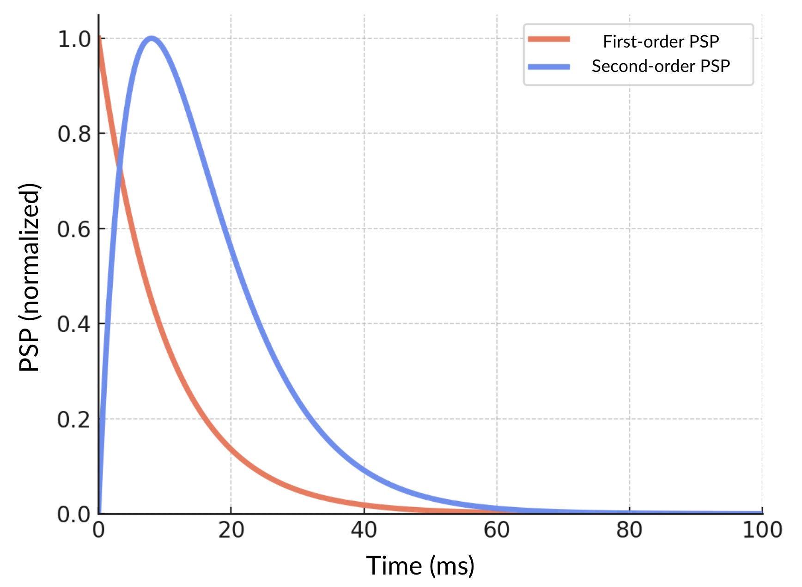
In more realistic models, such as Jansen-Rit (JR) [120], Wendling [121], or LaNMM [122,123], the linear operator is second order. The second-order operator is essential for realistically capturing synaptic conductance dynamics, as biological PSPs do not rise instantaneously. While a simple first-order exponential decay adequately describes passive membrane voltage relaxation, it neglects the finite time required for neurotransmitter binding, ion channel opening, and resulting conductance increase. Introducing separate rise () and decay () time constants (which may be the same numerically), the second-order operator accurately represents this two-phase process: a rapid initial conductance increase followed by slower conductance closure. This explicitly accounts for physiological delays and ensures PSP dynamics include a biologically realistic temporal scale, crucial for correctly modeling neuronal integration and timing-dependent neural computations.
Synaptic dynamics depend on the firing rate of the presynaptic population, which we now turn to.
4.2 Current-based versus conductance-based synapses
Throughout this review we adopt a current-based description of synaptic interaction, in which the synaptic input is treated as an additive perturbation to a postsynaptic state variable through the linear filter . This is a deliberate idealisation. Real chemical synapses are conductance-based: the synaptic current depends explicitly on the postsynaptic membrane potential through the reversal potential of the relevant ion channel,
where is the time-dependent synaptic conductance, generated by the same kinetic mechanisms that produce the second-order PSP shape derived above [112,113]. The dependence on is the source of shunting: as the membrane potential approaches , the driving force vanishes and the synapse delivers no current despite the elevated conductance, and if overshoots the effective sign of the interaction reverses. An “inhibitory push” can therefore become a “pull” or vanish entirely depending on the operating point, a property absent from the current-based filter. For the cross-walk developed in this review, the current-based form is retained because the rate-based and exact-mean-field neural mass models compared in §§§5–§7 are themselves formulated in current-based terms, and because near a stable operating point the conductance-based interaction linearises to a current-based effective coupling with state-independent effective gain. The conductance-based / shunting Liley-type mass listed in block (B) of the roadmap Table retains the full -dependence and is the natural starting point for readers requiring explicit shunting effects, including the voltage-dependence of NMDA-receptor dynamics noted at the end of §§4.1.
4.3 Transfer functional
Experimental results characterize the firing rate of a population of neurons as a function of its total input current or membrane potential. This approach extends the concept of -I curve, used to characterize the dynamics of single neurons [124,14], to a neural population. Accordingly, a population receiving an input current produces a firing rate given by
where is some operator (the transfer functional) that describes the process, including delays in response and non-linearity. For simplicity, this is sometimes simplified to a static and instantaneous nonlinear relation between the input and the output of a neural mass. The functional becomes then a function with
which receives the name of transfer function.
slate
| softblue!25 softblue!60!black Model | softblue!60!black | softblue!60!black Refs. |
| Sigmoid | [125,120] | |
| LIF (Gaussian noise) | [126,127,128] | |
| EIF (Gaussian noise) | [129,130] | |
| QIF (Gaussian noise) | [131] | |
| QIF (Cauchy noise) | [132,133] | |
There are several possible choices for the shape of the transfer function (see Table Table 4.3). A common choice is the sigmoid function considered by Wilson and Cowan [125],
where is half of the maximum firing rate of each neuronal population, is the value of the current when the firing rate is , and determines the slope of the sigmoid at the central symmetry point . Wilson and Cowan argued that such a sigmoidal shape accounts for heterogeneity in either neural connectivity or excitability threshold. Freeman proposed another expression that he fitted to experimental data, obtaining a similar sigmoid shape [134,135].
Further theoretical and experimental research has validated that, indeed, neurons subject to an increasing input current produce a firing rate that, in many cases, can be captured by a nonlinear function. However, these functions do not always follow a sigmoid function. For instance, Amit and Brunel derived the transfer function that follows from considering a network of leaky integrate-and-fire neurons subject to Gaussian noise [127] Similarly, transfer functions for exponential integrate-and-fire, quadratic integrate-and-fire and others have been derived analytically [129,131,130,132]. We provide the transfer functions of some of these cases in Table Table 4.3.
Dynamical transfer functions, where the response of the population is not instantaneous, were addressed by Wilson and Cowan, who proposed a filtered, exponential decay dynamics towards the firing rate activity,
where is a time scale controlling the response time of the neuron. As mentioned at the beginning of this section, this exponential decay response has often been used interchangeably with the exponential decay dynamics presented in Eq. (4.6), although notice that the time constants and account for different biophysical quantities.
Using operator language with and inverse (a linear filter or convolution), this can be expressed as a non-linear filter
with the transfer functional is In this case, we talk of a transfer functional and not function: a nonlinear operator mapping total input currents to firing rate time series with delay governed by the time scale .
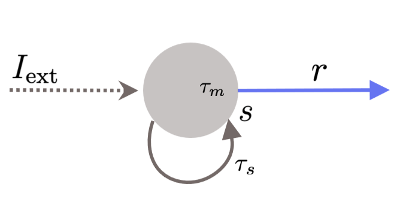
4.4 A simple self-coupled model and different limits
Let’s consider now a population of neurons of the same type that receive an external input and has recurrent connectivity given with a strength (see Figure Fig. 4.5). Then, we can assume that the total input received by the population is
where is an electrical admittance relating membrane potential perturbation and current. Notice that to derive the expression of the total input (4.18) we have assumed that the current flux generated by the recurrent coupling is proportional to the post-synaptic potential. This is an additional hypothesis that we will revisit later on.
Therefore, the dynamics of the average PSP of this population is given by
which we can rewrite in full operator form as the master neural mass model equation
with the transfer functional and the usual synaptic filter inverse operator characterized by some time scales — see Eqs. (4.17) and (4.10).
Equation 4.20 provides the minimal building blocks to derive a range of NMMs from simple principles. As we discuss next, taking or with first or second order synaptic operators, it covers the Wilson-Cowan (see Section §5), NMM1 (Section §6) and NMM2 (Section §7) formalisms. Finally, it also encompasses other logical variants — for example, a Wilson–Cowan style transfer function paired with second-order synapses. Although extensions of the Wilson–Cowan model do incorporate synaptic filtering or plasticity dynamics, to the best of our knowledge there exists no commonly adopted neural-mass model that preserves the original Wilson–Cowan architecture while explicitly modelling separate finite time constants for the membrane and the synaptic stages and, in particular, uses second-order synaptic operators — as proposed in our ‘master NMM’ formalism.
Limit of fast synapses (Wilson-Cowan model).
Taking the synaptic time constant to be much smaller than the membrane constant, , leads to the limit of fast synapses,
with the scaling constant associated with the operator. This is the stance taken by Wilson-Cowan (see Section §5), which we can rewrite in firing rate form as
with , or, equivalently in synapse potential (PSP) form as
In this limit, we can think of firing rate and synaptic PSPs as the same up to scale (there is no delay, only a rescaling). Thus, the Wilson-Cowan equations can be read as firing rate or synaptic equations, although the dynamics are due to membrane capacitance rather than synaptic currents.
Limit of fast membrane.
Conversely, if — the limit of fast membrane —, the firing rate ODE becomes a static equation,
This is the approach taken in the Jansen-Rit formalism (NMM1) when the synaptic equations are second-order, for example.
Delays and refractory period.
Finally, Equation (4.19) contains two time constants ( and ). However, there are two more time constants that play an important role in neural dynamics, and which we briefly mention here: time delays and refractory periods. Time delays introduce additional time scales that account for the latency of neurons or connecting circuit elements for reaching the threshold voltage and releasing the neurotransmitters. This effect might be due to different elements, for instance, the propagation of signals along the axon. This might be simply modeled by adding a delay in the synaptic dynamics
Notice that delay-differential equations have some special properties. For instance, their dynamics are infinite-dimensional, and thus, phenomena such as oscillatory activity can arise in instances where this was not previously considered.
On the other hand, refractory periods correspond to the inability of neurons to respond to external stimuli for a few milliseconds after an action potential. Whether refractory periods have a major role in the collective dynamics and function of neural populations is still a matter of debate. In the simple framework explained so far, there are two main ways to include a refractory period. On one hand, some researchers assume that transfer functions with a sigmoid function, i.e., a saturation for higher input, are already accounting for these refractory periods, hence the saturation. However, many researchers consider transfer functions derived from models, which do not saturate for large inputs. On the other hand, following Wilson and Cowan [136], the fraction of neurons susceptible to external inputs at any time is given by
where (ms) is the refractory period. Therefore, Eq. (4.16) should instead read
By considering that , the integral can be approximated as and the previous equation then reads
For the sake of completeness, we now reproduce Eq. (4.19) with both time delays and refractory period:
5 The Wilson–Cowan model (WILCO)
As a phenomenological normal form, the Stuart–Landau (SL) oscillator captures the universal signature of a Hopf bifurcation. Yet real neural tissue is not a single abstract amplitude, but excitation and inhibition speaking in tandem. Wilson–Cowan (WILCO) portrays that biological dialogue transparently: two real variables , representing firing rates or PSPs, interacting via synaptic weights, membrane time‑constants, sigmoid gains, and neural drives. But compared with the simpler oscillator models, WILCO is not only biologically transparent but dynamically richer. Near a Hopf bifurcation that it sits on the edge between a quiescent (damped) fixed point and a self-sustaining oscillation, WILCO reduces on its centre manifold to the SL normal form (see Appendix App. G). This equivalence is local: away from the bifurcation, and depending on parameter choices, WILCO supports saturation regimes, multistability between fixed points, and pattern-formation regimes that are not captured by the SL normal form. Finally, while the Wilson-Cowan model was originally conceived with and representing firing rates, its dynamics can also be used to represent first-order synaptic activity, with representing PSPs.
Following Eq. (4.21) (fast synapse limit, where firing rate input and PSP are related linearly without delay), or more concretely the form in Eq. (4.23), for a single population, we consider the model for a pair of coupled populations introduced by Wilson and Cowan [136],
with and representing synapse PSPs and are membrane time‑constants, the effective synaptic weights (positive for excitation, negative for inhibition), a tonic slowly varying drive that acts as the bifurcation (control) parameter, and the synapse gain term [48]. The sigmoid functions (see Eq. 4.15) are specific for each population.
In the form corresponding to Eq. (4.22), where represent firing rates, we have
Regardless of its synaptic or firing rate form, the original WILCO model describes dynamics stemming from transfer function delays. Despite its origins, the model is sometimes interpreted as describing first-order synapse dynamics. The form remains the same, but the interpretation changes (dynamics are induced by synaptic, not membrane delays).
A Taylor expansion shows that Eq. (5.2) contains the Hopf bifurcation machinery in the SL normal form plus additional bifurcations. Moreover, each coefficient is anchored to a biophysical mechanism (e.g. self‑excitation or synaptic delay ).
WILCO contains the Stuart–Landau oscillator as one of its parameter-tuned limits. When the cross-coupling is weak, the model supports a clean Hopf bubble (HB LC HB) with no fold or SNIC anywhere on the slice, and the center-manifold reduction at either end is the Stuart–Landau normal form. In this limit WILCO is SL. Once the cross-coupling product crosses a threshold set by the diagonal terms, a Bogdanov–Takens point enters the oscillatory window. The saddle-node, SNIC, and Hopf curves emerge from it as three branches of a single codimension-2 unfolding: the cusp brings bistability, the SNIC brings Class I excitability, and the system displays dynamics genuinely beyond SL’s reach. In this regime WILCO is more than SL. The two regimes are 1-parameter slices through the same equations, separated by exactly one codimension-2 point in parameter space. This is what gives WILCO its place in the Rosetta Stone: it specializes to SL — and to the PING/Jansen–Rit gamma rhythm — at one limit, extends to bistability and Class I excitability at the other, and the hinge between them is a single locatable point.
5.1 Effect of forcing
Shifting the tonic drive moves the mean input along the sigmoid with respect to the sigmoid threshold, i.e., the population operating point; because the slope changes with input, the effective linear gain and thus the distance to Hopf vary smoothly.[137]
Introducing an additional term to the excitatory equation in firing rate form reads
Near its bifurcation, the model becomes a forced SL oscillator[138]. may represent noise or a time-varying (e.g. sinusoidal, noisy, pulsed), or constant but transiently switched on and off forcing; in either case, it probes or entrains the dynamics without altering the underlying bifurcation point set by . Sinusoidal forcing carves out Arnol’d tongues of phase locking whose geometry parallels that of the analytical SL normal form, yet the effective tongue width is filtered by the sigmoid slope , a feature absent from purely polynomial descriptions.
5.2 Minimal ingredients for a Hopf bifurcation
Linearizing (5.2) around its fixed point and applying the Routh–Hurwitz criteria, a Hopf bifurcation occurs when with [139]. Physiologically, this translates into three rules:
Reciprocal E–I coupling () is indispensable; a single self‑exciting pool cannot realize a Hopf bifurcation.
Sigmoid slope. Either recurrent excitation or an external drive must position the operating point on the steep part of so that , recovering Ermentrout’s criterion for “sufficient self‑coupling or bias”.[140]
Cubic saturation. The curvature of supplies the cubic term that tames the growth of infinitesimal oscillations; piece‑wise linear gains suppress this mechanism.
Projecting the WILCO equations onto their two‑dimensional center manifold yields—after normal‑form transformation—the complex Stuart–Landau equation [141]
where the real coefficients and their imaginary counterparts are explicit functions of and the first two derivatives of ; their signs decide whether the Hopf is super‑ or sub‑critical. Conversely, the physiological variables follow , with the critical eigenvector. See Appendix App. G for more details.
The logistic transfer curve packages dendritic saturation, membrane noise, and threshold heterogeneity into one analytic function.[4]. Its first derivative shapes the linear gain, its second derivative injects the cubic non‑linearity that stabilizes the limit cycle—precisely the term in (5.4). In other words, the WILCO sigmoid is a built‑in normal‑form generator.
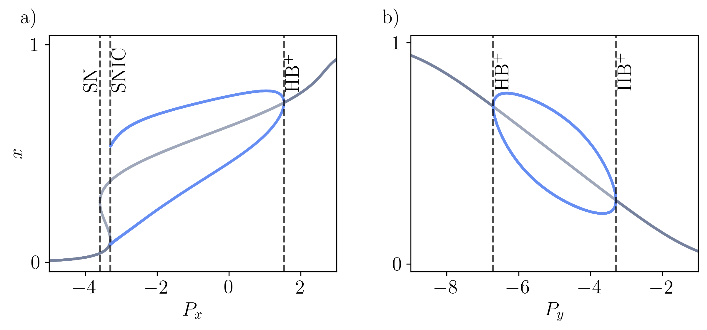
Two examples of WILCO bifurcation diagrams are provided in Fig. Fig. 5.6; they are 1-parameter slices through the same model equations, differing only in which external input parameter is varied ( or ) while the others remain fixed.
The model in panel (a) — -driven regime (see Table Table C.4 for parameters) — exhibits three different bifurcations as the external input to the excitatory population, , is increased. Initially, for low , the system has a single stable fixed point. As increases, the system undergoes a saddle-node (SN) bifurcation, where two unstable fixed points emerge. Further increasing leads to the collision and annihilation of a stable and an unstable fixed point, and, beyond this point, a limit cycle emerges. This transition corresponds to a saddle-node on an invariant circle (SNIC) bifurcation. Finally, the limit cycle vanishes in an HB bifurcation, and from that point the system only has a stable fixed point. Thus, near HB, WILCO reduces on its center manifold to a Stuart–Landau oscillator (Class II onset, finite frequency, vanishing amplitude); near SNIC it reduces to a theta-neuron / QIF normal form (Class I onset, finite amplitude, vanishing frequency); and near SN, to a saddle-node normal form (bistability, no oscillation). All three reductions are local pieces of the same Bogdanov–Takens (BT) unfolding, of which panel (a) is a 1-parameter slice.
The model in panel (b) — the driven regime-coupling (see Table Table C.4 for parameters) — exhibits a different bifurcation structure: a clean Hopf bubble bounded by HB at one end and HB at the other, with no fold and no SNIC anywhere on the slice. The cycle is born of small amplitude at HB, grows smoothly across the bubble, and dies of small amplitude at HB. The center-manifold reduction at both ends of the bubble is the Stuart–Landau normal form, and the cycle is locally Stuart–Landau across the whole window (Class II only, no Class I, no bistability).
By navigating this parameter space, WILCO effectively contains the Stuart–Landau oscillator as a parameter-tuned limit while adding the BT-organized cusp and SNIC structures as a functional extension. This allows the same model equations to switch between acting as a simple harmonic-like oscillator and a complex neural integrator.
5.3 Coupling
To build a whole-brain network of equal Wilson–Cowan E-I motifs, the excitatory populations are usually coupled via long-range glutamatergic projections [7]. Introducing both tonic/exogenous inputs () and dynamic drives () at the excitatory nodes, the coupled system reads (firing rate version)
Here denotes the (row-normalised) structural connectivity weight from node to node , typically estimated from diffusion-MRI tractography.
Long–range excitation is integrated inside the sigmoid: distant axonal currents enter the same dendritic current pool through instantaneous synapses; the non-linearity then converts the total current into a bounded firing rate, preserving the physiological ceiling set by .
The network form in Eq. (5.5) has been the subject of extensive analysis in the dynamical-systems and computational-neuroscience literature, going well beyond the original two-population formulation of Wilson and Cowan. Foundational mathematical analyses of coupled WILCO units characterised the phase-plane structure, oscillation onset, and bifurcation skeleton of the canonical pair [142,143], and subsequent work has mapped the multistability, metastability, and pattern-forming regimes that arise when many WILCO nodes are coupled through delayed connectivity [144,145]. The treatment in the present section is therefore best understood as a unified-notation summary of an established line of work, repositioned to serve the cross-walk to the Stuart–Landau, NMM1, and NMM2 formalisms developed in subsequent sections.
Of particular relevance to the cross-walk this review develops, WILCO networks admit phase and phase–amplitude reductions back to generalised Kuramoto-type oscillator networks of the form discussed in §§2. Hlinka & Coombes [146] demonstrated that phase reductions of WILCO networks reproduce empirically observed structural–functional connectivity relationships in resting-state fMRI, providing an explicit bridge between the rate-based formulation and the phase-oscillator analyses of §§2. Daffertshofer & van Wijk [144] further analysed how the amplitude dynamics of WILCO modulate phase connectivity, clarifying the regime in which the phase-only description remains predictive. These reductions are the operational bridge that makes the WILCO,,Kuramoto leg of the cross-walk explicit.
Equations (5.5) implement additive coupling: each excitatory node receives the transduced firing rates of its peers weighted by . This choice reflects the physiology of long‐range excitatory fibers and avoids the homeostatic constraints of diffusive schemes, allowing the network to exhibit rich collective dynamics—from large‐scale synchrony and traveling waves to stimulus‐induced entrainment—while preserving the local Wilson–Cowan bifurcation structure.
Equation 5.5 is one among many possible combinations of populations, couplings, and forcings.
Whole-brain Simulations Parameters & Physiological Meaning
| Node | Coarse‑grained cortical/subcortical region represented by two interacting subpopulations: excitatory () and inhibitory (). |
| Number of regions (E–I motifs) in the network. | |
| Population activities (firing rates or PSP proxies, depending on the form used); the E/I push–pull loop produces oscillations and multistability (cf. (5.1), (5.2)). | |
| Membrane/synaptic time constants (ms) setting local response speeds and the E–I timescale separation. | |
| Static input–output (sigmoid) of each population; typical logistic with slope and threshold controlling gain and saturation. | |
| Local coupling weights (EE, IE, EI, II). Signs follow (5.2): implements inhibition of E by I; self‑inhibition of I. | |
| () | Tonic drives (bias currents) shifting the operating point along the sigmoids and hence the effective linear gains. |
| Global coupling gain scaling long‑range excitation from other regions into . | |
| Long‑range (row‑normalized) connectivity weight from region to (typically structural; functional/effective or synthetic graphs are alternatives). Enters additively inside in (5.5). | |
| Propagation delay on pathway (conduction + synaptic latencies); optional. | |
| Exogenous drive (external forcing from nodes or elements outside the network or an electric field, see Equation 2.12). |
Use this when explicit excitation–inhibition, saturating gains, and operating‑point control are central (Hopf onset, multistability, stimulus responses, seizure‑like dynamics).
Assumptions mean‑field population description; first‑order E/I kinetics; static sigmoids capturing dendritic saturation and threshold dispersion; long‑range inputs summed into E.
Best for whole‑brain simulations with biophysical levers (E/I balance, gains, delays) and macroscopic readouts (FC/FCD, spectra, waves, metastability).
Avoid if only phase relations matter (prefer Kuramoto) or small‑fluctuation linear analytics suffice (prefer linear damped resonators).
Provide (SC by default; FC/EC or synthetic if SC absent), , local , , parameters , biases (and optionally ), plus optional , , noise.
Defaults normalize ; choose for gamma‑like loops or comparable for alpha/theta; start near Hopf by tuning and to place the operating point on the steep part of ; Euler/Heun or RK with .
Readouts time series; PSD/cross‑spectra; FC/FCD; phase–amplitude metrics; wave/cluster structure; operating‑point maps (via linearization around ).
5.4 Applications
Historically, the Wilson–Cowan (WILCO) equations were introduced in two seminal papers in the early 1970s to capture the coarse‑grained dynamics of interacting excitatory and inhibitory neuronal populations [147,148]. By replacing spikes with smooth population activity and embedding saturating input–output nonlinearities, the framework established a tractable mean‑field language for multistability, oscillations, and pattern formation. Later syntheses clarified when the mean‑field approximation is valid, how fluctuations and delays can be incorporated, and how WC relates to other neural‑mass and field formalisms [149,150,151].
As a modeling workhorse, WILCO now spans scales—from local microcircuits to whole‑brain simulations coupled with connectomes derived from diffusion MRI—precisely because its parameters map cleanly to biology (excitatory/inhibitory gains, operating points, time constants, inputs) while retaining enough nonlinearity to express the canonical dynamical regimes. On the electrophysiology side, delay‑coupled WC networks fitted to human MEG reproduce band‑limited amplitude‑envelope correlations and phase‑locking across subjects when equipped with biologically plausible ingredients such as inhibitory synaptic plasticity and heterogeneous conduction delays; they naturally exhibit waxing–waning synchrony (metastability) and predict how changes in E/I balance or propagation speed reshape macroscopic spectra and coupling structure [152]. Related firing‑rate analyses show how excitatory and inhibitory feedback loops jointly regulate gamma rhythms—useful for interpreting resonance and entrainment bandwidths observed in M/EEG [153].
For fMRI, WILCO nodes embedded on the structural connectome have been used in multiscale pipelines that connect anatomy to resting‑state BOLD statistics and clinical phenotypes. Personalized WC-based models in major depressive disorder, for example, identified executive–limbic dysregulation consistent with empirical FC and symptom profiles [154].
Within The Virtual Brain ecosystem, WILCO is a standard regional model for synthesizing MEG/EEG/fMRI observables and probing how inter‑regional coupling, local gains, and delays generate subject‑specific variability in FC and its dynamics [155,156]. In task and method‑development contexts, WILCO local dynamics frequently serve as the generative “ground truth” for benchmarking estimators of frequency‑specific or task‑modulated connectivity from MEG/fMRI [157,158].
Because WILCO encodes excitation and inhibition explicitly, it offers a clean bridge to perturbation and inference. In Dynamic Causal Modeling (DCM) for fMRI, replacing the usual bilinear neuronal state equation with a WILCO‑type nonlinearity improves model evidence on multiple datasets while preserving physiological interpretability of effective connectivity and local transfer functions [159]. Clinically, introducing a non‑monotone (depolarization‑block) activation into a single WILCO microcircuit reproduces focal epileptiform activity and its spread, providing mechanistic handles for presurgical hypothesis testing [160]; conversely, disease‑specific applications at the whole‑brain scale use WILCO oscillators to explore how regional vulnerabilities and synaptic downscaling alter global connectivity and responsiveness [161]. Stochastic variants poised near critical points reproduce avalanche statistics and scaling of spontaneous activity, offering a testbed for hypotheses about critical brain dynamics and their departures under pathology [162,163,164].
Comparative studies situate WILCO among other whole‑brain models. Multi‑modal head‑to‑head work reports that WILCO and SL networks achieve broadly comparable fits to MEG and fMRI benchmarks once conduction delays and local E/I homeostasis are respected; WC often affords advantages on spatiotemporal measures (e.g., functional‑connectivity dynamics, the size distribution of transient oscillatory modes) thanks to its explicit rate saturation and E/I partition, whereas SL’s normal‑form compactness facilitates analytic reductions and turbulence‑style analyses [7]. Systematic benchmarking across cohorts further underscores that no single model dominates all metrics: for some summary statistics and parcellations, simpler linear baselines can rival or exceed nonlinear formalisms, and reliability/subject‑specificity depend strongly on the targets of fit [165]. In practice, WILCO is most compelling when questions hinge on mechanistic E/I balance, pharmacology, stimulation, seizure dynamics or nonequilibrium signatures; when phase‑only timing, graph‑spectral tractability or normal‑form universality are paramount, Kuramoto/SL (and linear surrogates) may be the better lens. In all cases, WILCO’s strengths and limitations are transparent. WILCO is a phenomenological rate model, originally formulated at the population level rather than derived from spiking dynamics: a compact E/I mean-field that is expressive enough to capture oscillations, multistability, and metastability while staying close to the biological levers experiments can manipulate.
6 NMM with second-order synapses (NMM1)
In the Jansen-Rit or NMM1 formalism1, synaptic and somatic stages are separated explicitly. Rather than collapsing synaptic dynamics into a single firing–rate equation, NMM1 treats each post-synaptic potential and as the output of a biologically grounded linear filter (with separate rise and decay time constants), sums these to form the membrane perturbation , and then applies a sigmoidal transfer to yield the population firing rate. This separation of synapse (impulse-response filters) and soma (sigmoid) provides a clear physiological connection and endows the model with proper delay time scales and intrinsic phase shifts that can sustain oscillations without the need for self-coupling.
The biological ontology includes synapses, post-synaptic potentials (PSPs), the population membrane potential (the perturbation from its baseline), and the transfer function from membrane potential to firing rate output of the population (the sigmoid).
Accordingly, the variables in the equations include the postsynaptic potentials or PSPs ( and in the E-I model we will discuss), the membrane potential , the firing rates and , and the sigmoid . As usual, all dynamical quantities refer to “mean" population averages.
The equations in NMM1 are similar to the Wilson-Cowan, but introduce second-order derivatives. Here we present them without self-coupling for simplicity (unlike in WILCO, it is not needed for a stable limit cycle)—see Figure Fig. 6.7 (a),
which can be expressed in operator formalism as
with second order operator notation. For example, for the case of equal rising and decay times,
As in WILCO, the sigmoid function represents the integration carried out by the “soma" of the population. The argument of the sigmoid is therefore the total membrane perturbation caused by the PSPs from all synapses and other effects, such as electric fields. The s represent the coupling strength of the synapse — the synaptic gain.
Because the synaptic dynamics are governed by second-order operators (with rise and decay impulse response), the neuronal circuit can sustain oscillations even without explicit self-coupling. Specifically, the second-order filter introduces a frequency-dependent phase shift in the system response. According to the Barkhausen stability criterion, sustained oscillations occur if the total loop gain equals unity and the total loop phase shift reaches an integer multiple of 360. In a push-pull arrangement—excitatory coupled to inhibitory populations and back—this intrinsic phase shift, arising purely from synaptic kinetics (distinct rise and decay constants), can fulfill the Barkhausen criterion. Thus, unlike the Wilson-Cowan case, even in the absence of explicit self-feedback, second-order dynamics inherently provide the necessary conditions for sustained oscillations. We make this argument precise in the next paragraph.
Why second-order synapses sustain oscillations: the Barkhausen condition.
The defining dynamical feature of NMM1 is its capacity to sustain oscillations without explicit self-coupling, in contrast to WILCO. The mechanism is most cleanly understood through the classical Barkhausen criterion for closed-loop oscillation, which states that a feedback loop sustains a self-oscillation at angular frequency when (a) the loop gain equals unity and (b) the total loop phase shift is an integer multiple of . In the linear regime around a fixed point, the NMM1 push–pull motif (EIE) realises a closed loop whose loop transfer function reads
where is the sigmoid slope at the operating point and is the frequency response of the second-order synaptic operator (cf. Eq. (6.3). Two features distinguish NMM1 from WILCO here. First, the second-order filter contributes a frequency-dependent phase shift bounded by , so the two synapses together can supply the full required to close the loop, with the explicit minus sign of the inhibitory pathway providing the remaining . Second, the rise and decay constants control both the magnitude and the phase of , so synaptic kinetics alone determine where the loop-phase condition is met — and hence the resonance frequency. The loop-gain condition then selects the operating point at which oscillations onset through a Hopf bifurcation. The push–pull architecture is in this sense the minimal architecture that satisfies the Barkhausen criterion in NMM1: a single population with second-order synapses and no self-coupling cannot supply both the gain inversion and the loop phase. The full algebraic derivation of (6.4) and the explicit oscillation-onset condition are given in Appendix §I.3.
6.1 Forcing and coupling
Because of its realistic biological origins, accounting for the effects of coupling to other populations or of an electric field is straightforward: they produce additive voltage perturbation terms to the membrane potential, i.e., the argument of the corresponding sigmoid. So more generally, the equations with multiple synapses in a population reflect the additive combination of synaptic inputs.
The generalization of Equation 6.2 to multi-populations nodes and whole brain models consists of one for each synapse and neuron ,
(forcing can be represented through synaptic coupling). As before, the first equation transduces connectivity-weighted firing rate inputs into PSPs using the operator, the second sums all the PSPs and other perturbations affecting the neuron (e.g., an electric field in the equation), and the last one produces the firing rate output using the sigmoid.
The first equation links the input firing rate to its associated membrane perturbation (PSP). It can be read as the synapse equation for the input from neuron to neuron . The input may also reflect an input to the model from some external neuron, in which case for some function (constant, noise, etc.).
The second equation evaluates the membrane potential of neuron as the sum of the synaptic voltage perturbations plus an electrical field perturbation (if present) [166].
The last equation is a static transfer function: it evaluates the firing rate of a cell as a function of its total membrane perturbation.
The connectome in Equation 6.5 includes intra-parcel (defining, e.g., Jansen-Rit or LaNMM nodes) and inter-parcel connectivities in whole-brain models. The latter are usually derived from diffusion MRI or from Ising modeling of fMRI [167].
As a simple network example of inter-parcel coupling from excitatory to excitatory populations in the simple E-I motif model in Eq. 6.2 (with all parcels equal), we have
with as before, including noise or deterministic forcing.
As a further example, an electric field perturbation can be computed from the local electric field in the population. For example, in the case of weak electric fields at low frequencies (transcranial electrical stimulation), the perturbation is the dot product of the coupling constant and the electric field vector [35,36,38,37]. Adding this perturbation to the simple example leads to (see Equation 2.12)
As with the WILCO networks of §§5, the rate-based formulation here admits explicit phase reductions back to generalised Kuramoto-type oscillator networks. Forrester et al. [168] derive such a reduction for Jansen–Rit-type NMM1 networks and use it to show how local node dynamics shape the emergent functional connectivity patterns observed in whole-brain simulations, providing the explicit operational bridge between NMM1 and the phase-oscillator descriptions of §§2.
Whole-brain Simulations Parameters & Physiological Meaning
| Node | Neural mass with explicit synapse and soma: PSP states drive a membrane perturbation , which passes through a sigmoid to yield a firing rate . |
| Excitatory and inhibitory postsynaptic potentials (PSPs). They are the outputs of second‑order synaptic filters (rise/decay), not directly the rates. | |
| Membrane potential perturbation (sum of PSPs and exogenous terms), i.e., the input to the soma/nonlinearity. | |
| Excitatory/inhibitory firing rates (soma outputs). These feed other synapses locally and across the network. | |
| Static sigmoids (e.g., logistic) mapping to firing rate; slope controls effective gain; saturation bounds activity. | |
| Second‑order synaptic operators (cf. (6.3)): implement biophysical PSP kinetics with rise/decay; supply intrinsic phase lags that can sustain oscillations. | |
| , | Synaptic time constants (single or separate rise/decay); set resonance frequency and phase lag of each synapse. |
| Synaptic gains (PSP amplitude scale). | |
| Local EI and IE coupling (push–pull loop); self‑coupling often omitted in NMM1 because synaptic phase lags can close the Barkhausen loop. | |
| Exogenous drive (external forcing from nodes or elements outside the network or an electric field)— see Equation 2.12). | |
| Long‑range connectivity from node to (SC default; FC/EC or synthetic graphs if needed); typically targets the excitatory pathway. | |
| Number of nodes (parcels). |
Use this when explicit synaptic kinetics and their phase lags matter (evoked responses, resonance, photic entrainment, band‑limited power and envelope dynamics) or when linking parameters to PSP amplitudes/time‑constants is essential.
Assumptions linear synaptic filters (second order) feeding a static nonlinearity; E/I pathways combined at the soma; long‑range excitation enters via excitatory synapses.
Best for EEG/MEG/fMRI generative modeling (spectra and event-related potentials (ERPs)), seizure phenomenology (fast/slow inhibition variants), and whole‑brain simulations where synaptic time constants set rhythms.
Relations near a stable focus it reduces to linear resonators; near Hopf it displays SL‑like amplitude–phase dynamics but with biophysical PSP knobs (gains/time‑constants).
Avoid if only relative phase is of interest (Kuramoto) or if closed‑form linear statistics suffice (damped linear network).
Model (drop‑in) use the operator form (6.5) or the E–I pair with coupling (6.6)–(6.7).
Provide synaptic operators (choose or ) and gains ; local couplings ; soma sigmoids (gain, midpoint, max rate); drives (and optionally ).
Network supply (SC default; FC/EC or synthetic if SC is absent), optional delays ; long‑range input enters the excitatory pathway.
Defaults normalize ; start with standard JR‑style kinetics (faster E than I or vice‑versa depending on band); small noise; Euler–Maruyama/RK with . With non-zero delays and stochastic forcing, the system is an SDDE; prefer method-of-steps DDE solvers in the deterministic limit, otherwise use Euler–Maruyama on the delayed system as a controlled approximation with the dual bound .
Readouts PSPs , membrane , rates ; PSD/cross‑spectra and ERPs; envelope/FC/FCD; assess resonance by scanning ’s and gains.
6.2 Applications
We review canonical models using the second-order synapse formalism (see Figure Fig. 6.7) and summarize their characteristic features and uses.
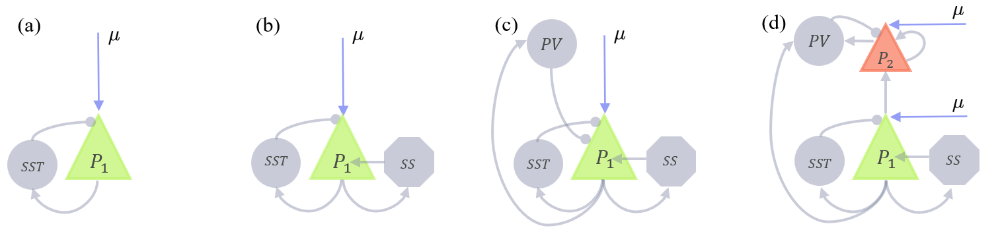
Simple push–pull motif (PING-like) model
The simplest second-order neural mass captures the push–pull loop between an excitatory and an inhibitory population, the canonical PING motif. Second-order synapses (distinct rise and decay) provide the phase lag needed to meet Barkhausen’s condition for sustained oscillations without explicit self-coupling. Minimal two-population models reproduce gamma-band rhythms and noise-sustained oscillations near Hopf; frequency depends mainly on inhibitory decay and EI gain and can be shifted by drive or kinetics. Applications include modeling high-frequency oscillations (HFOs) at seizure onset [173]; mechanistic context from spiking/mean-field work on PING/ING is reviewed in Buzsáki & Wang (2012)[174] and Tiesinga & Sejnowski (2009)[175], and synchronization analyses such as in Börgers & Kopell (2003)[176] and Whittington et al. (2000)[177].
The Jansen–Rit model
The Jansen–Rit (JR) model [120] comprises three populations (pyramidal, excitatory interneurons, inhibitory interneurons) interconnected with second-order synapses and a static transfer function. It generates alpha-band activity and realistic evoked responses; its regimes (fixed point, alpha, spike-like) are organized by Hopf and other bifurcations [178,179]. JR serves as the neuronal model in Dynamic Causal Modeling (DCM) for M/EEG steady-state and evoked responses [6,180,181], linking synaptic gains/time constants to observed spectra and ERPs.
The model dynamics can be written as
The bifurcation diagram of the Jansen-Rit model is shown in Fig. Fig. 6.8. Going from left to right, an SN bifurcation creates two unstable fixed points. As the external input is increased, the system exhibits a subcritical Hopf bifurcation (HB); beyond this point, the stability of the fixed point shifts and an unstable limit cycle (depicted in light blue) is created, and the system exhibits two stable fixed points after the HB bifurcation. This bistability persists as the system undergoes another Hopf bifurcation, this time a supercritical one (HB), where the upper fixed point loses stability and a stable limit cycle emerges. In this regime, the system can display either oscillatory or stationary behavior, depending on its initial conditions. Further increasing causes the two lower fixed points to collide in a saddle-node on invariant circle (SNIC) bifurcation. Beyond this point, the system exhibits two stable limit cycles, corresponding to oscillations with different frequencies. Eventually, a saddle-node of limit cycles (SNLC) bifurcation occurs, where an outer stable and an unstable limit cycle collide and annihilate, leaving a single remaining limit cycle. This final oscillatory state persists until a last supercritical Hopf bifurcation (HB), after which the system returns to a stationary regime.
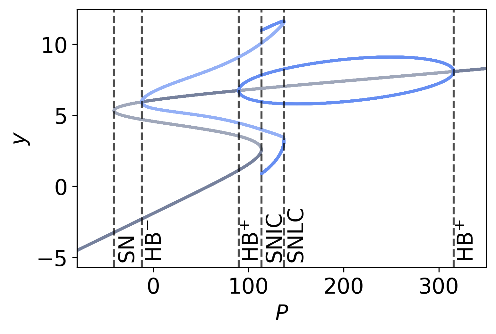
The Wendling model and its extensions
Wendling’s CA1-inspired extension adds fast and slow inhibitory subpopulations (GABA, GABA) to the JR scaffold. By tuning inhibitory gains and kinetics, it reproduces background alpha, interictal spikes/spike–waves, and low-voltage fast activity; seizure onset emerges with impaired dendritic inhibition [182]. The model is widely used for interpreting stereo-electroencephalography (SEEG) / EEG patterns, exploring ictogenesis mechanisms, and assessing interventions [183], making it a standard computational tool in epilepsy. Recent extensions include chloride dynamics and laminar integration [184]. Whole-brain use: Wendling nodes have been used for resting‑state whole‑brain network modeling that matches empirical FC [185] and for patient‑specific whole‑brain simulations of interictal SEEG to aid clinical interpretation [186]. They have been embedded in realistic forward models to synthesize SEEG and personalize local epileptogenic dynamics [184]; the same group reports personalised whole-brain seizure-propagation models that integrate SEEG, MRI, and dMRI to simulate patient-specific responses to surgical, stimulation, and pharmacological interventions within a unified physiological framework [187].
As in the Jansen–Rit model, the core architecture is built around a pyramidal cell population interacting with both SS and SST neurons. The Wendling model extends this structure by introducing a parvalbumin-positive (PV) interneuron population, which both receives input from and projects back to the pyramidal cells. Incorporating this additional inhibitory loop results in the following system of equations:
The bifurcation diagram in Fig. Fig. 6.9 illustrates the steady-state membrane potential of the pyramidal population as a function of its external input . As increases, the system undergoes a supercritical Hopf bifurcation (HB) at approximately , giving rise to oscillations that persist until .
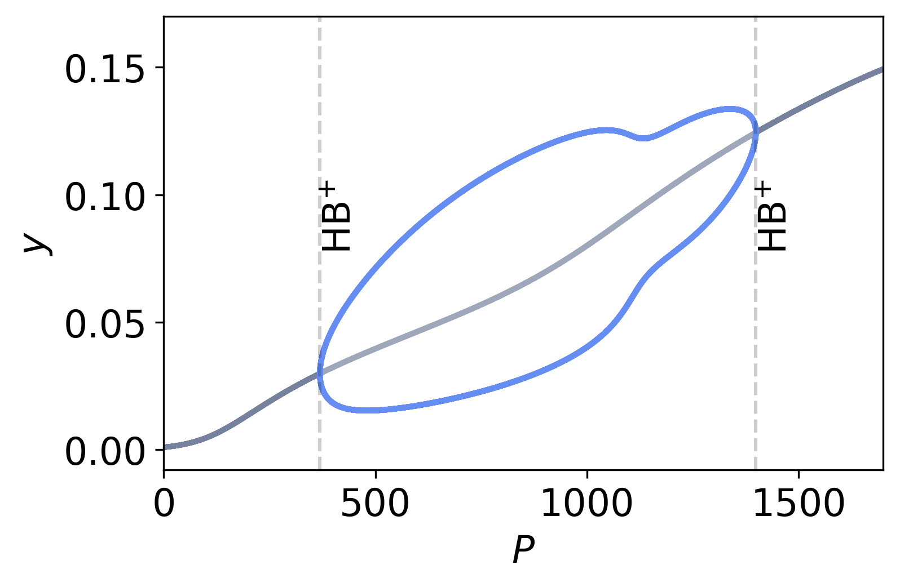
The laminar model (LaNMM)
The laminar neural mass model (LaNMM) [122,123] extends the NMM1 framework to capture the layered organisation of cortical microcircuits, addressing observables that single-population JR or Wendling models cannot reach. LaNMM couples two NMM1 generators with distinct anatomical and dynamical roles. A deep Jansen–Rit-like generator, situated in infragranular layers, produces alpha/theta-band rhythms through the standard three-population JR architecture. A superficial PING-like generator, situated in supragranular layers, produces gamma-band rhythms through the second-order push–pull motif of §§6. The two generators are coupled according to cortical laminar anatomy, with the deep generator modulating the superficial one through ascending projections that gate gamma amplitude on the slow phase, producing the empirically observed cross-frequency phase–amplitude coupling characteristic of laminar recordings. Because the model is anchored to specific cortical layers, the synthetic local field potential (LFP) and current source density (CSD) signals it generates inherit realistic depth-dependent polarity and phase relations through volume-conduction physics, allowing direct comparison with depth-electrode recordings rather than only with surface EEG/MEG.
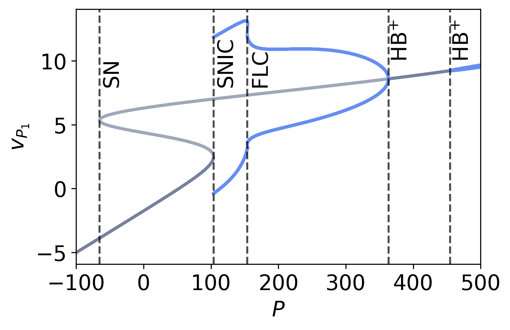
Based on the connectivity scheme shown in Fig Fig. 6.7 (d), the model is governed by the following system of equations
The bifurcation diagram of the LaNMM is shown in Fig. Fig. 6.10. It depicts the steady-state membrane potential of the bottom pyramidal population () as a function of its external input (). The overall structure of the diagram closely resembles that of the Jansen–Rit (JR) model, as expected, since the LaNMM combines features of both the JR and PING models. As the external input increases, the system undergoes a saddle-node (SN) bifurcation where two unstable fixed points emerge. However, unlike the JR model, the LaNMM does not exhibit bistability. Oscillations then arise through a saddle-node on invariant circle (SNIC) bifurcation. Further increases in lead to a pair of fold-of-limit-cycle (FLC) bifurcations, where the oscillation amplitude decreases while the frequency increases (see [188] for details). This behavior continues until the system passes through a Hopf bifurcation (HB). Beyond this point, and in contrast to the JR model, the system undergoes an additional HB bifurcation, associated with the PING mechanism, giving rise to faster oscillatory activity. A systematic bifurcation analysis of the LaNMM identifies the parameter regimes that sustain coupled multifrequency oscillations when an external input is also introduced to the top pyramidal population, in addition to the previously considered input to the bottom population, and determines the conditions under which AD-like alterations disrupt these dynamics [188].
Applications span (i) reproducing laminar spectral peaks and CSD sinks/sources observed in primate and rodent cortex [189,190,191,192]; (ii) explaining the cross-frequency coupling signatures observed in laminar recordings; (iii) capturing the alpha-slowing, gamma-loss, and disrupted theta–gamma coupling that characterise the oscillatory phenotype of Alzheimer’s disease [193], and the differential effects of psychedelic compounds in AD [194]; (iv) integration with stimulation physics for transcranial electrical stimulation (tES/tACS) studies through coupling to the local electric field as in Eq. (6.7); and (v) deployment as a regional model in connectome-scale simulations to study gamma-band coordination and cooperative/competitive network rhythms [195]. LaNMM has also been used as a generative model for predictive-coding interpretations of laminar dynamics [196].
In the disease-modeling space, modulation of fast-interneuron coupling within LaNMM reproduces the biphasic oscillatory progression of Alzheimer’s disease — early hyperexcitability with elevated alpha and gamma power, followed by oscillatory slowing and reduced spectral power consistent with empirical biomarkers [193] — and the corresponding modulation of layer-5 pyramidal excitability characteristic of 5-HT-receptor activation reproduces the spectral signatures of serotonergic psychedelics, suggesting a candidate therapeutic axis for the prodromal and early phases of Alzheimer’s disease [194].
7 Next-generation models (NMM2)
The neural mass models we have discussed so far, such as the Jansen-Rit, Wendling systems or LaNMM, provide a practical framework for representing and interpreting electrophysiological activity in both local and global brain models [136,197,198,169,199,200,201,202,122,203,193,204,205].
However, NMM1 mixes biophysically grounded and phenomenological elements: the synaptic operator has direct biophysical content, since its impulse response is set by the kinetics of receptor binding and channel opening and can be matched to recorded post-synaptic potentials [206,207,140], but the static wave-to-pulse sigmoid function [208,209,210] that maps membrane potential to firing rate rests on a weaker theoretical foundation, having been postulated phenomenologically by Freeman from population recordings rather than derived from spiking dynamics.
Recently, Montbri’o et al [10] derived an exact mean-field theory (MPR) for a population of quadratic integrate-and-fire neurons under some simplifying assumptions, thereby connecting microscale neural mechanisms and meso/macroscopic phenomena.
The MPR model can be seen to replace Freeman’s sigmoid function with a pair of differential equations for the mean membrane potential and firing rate variables—a dynamical relation between firing rate and membrane potential—, providing a more fundamental interpretation of the semi-empirical NMM sigmoid parameters. In doing so, it sheds light on the mechanisms behind enhanced network response to weak but uniform perturbations.
In the exact mean-field theory, intrinsic population connectivity modulates the steady-state firing rate sigmoid relation in a monotonic manner, with increasing excitatory self-connectivity leading to higher firing rates. This provides a plausible mechanism for the enhanced response of densely connected networks to weak, uniform inputs such as the electric fields produced by non-invasive brain stimulation. This new, “dynamic sigmoid" also endows the neural mass model with a form of “inertia”, an intrinsic delay to external inputs that depends on, e.g., self-coupling strength and state of the system.
Models resulting from the MPR mean-field theory can be completed by adding the first or second-order equations for delayed post-synaptic currents and the coupling term with an external electric field [211,212,213], bringing together the MPR and the usual NMM formalisms into a unified exact mean-field theory (NMM2, for short) displaying rich dynamical features. In the single population model, we show that the resonant sensitivity to a weak alternating electric field is enhanced by increased self-connectivity and slow synapses.
Classical NMMs are coarse‑grained descriptions: they compress the high‑dimensional, spike‑resolved dynamics of local circuits into a few mesoscale order parameters (typically, population firing rate and a filtered postsynaptic potential). Conceptually, this follows Kadanoff–Wilson coarse‑graining: integrate out fast, microscopic degrees of freedom, retain slow collective variables, and allow parameters (gains, time constants, noise) to be renormalized by the elimination of small scales [214,215]. Empirically, data‑driven coarse‑graining of population activity can approach non‑Gaussian fixed forms with static and dynamic scaling—evidence that mesoscale statistics can be approximately scale‑invariant near special operating points [216].
Early NMMs (e.g., Wilson–Cowan, Jansen–Rit) thus combine a biophysically grounded synaptic filter with a phenomenological static nonlinearity — the same split made explicit in the previous paragraph. Population‑density and mean‑field limits provide a more principled route from spiking to masses [217,218], and field‑theoretic expansions make explicit how fluctuations and finite‑size effects correct mean‑field behavior—precisely the kinds of corrections induced by coarse‑graining [219]. In large‑scale modeling, these ideas motivate dynamic mean‑field reductions of biophysical networks into mesoscale nodes with a few state variables [9].
The mathematical foundation for these exact reductions was laid by the analysis of theta-neuron networks via the Ott–Antonsen ansatz: Luke, Barreto & So [12] provided the complete classification of macroscopic behaviour for heterogeneous theta-neuron networks, and So, Luke & Barreto [11] extended this analysis to networks with non-trivial topologies, in both cases obtaining low-dimensional ODEs for collective phase coherence. Because the QIF and theta-neuron models are equivalent under the standard quadratic-to-theta change of variables , these reductions and the parallel reduction of QIF networks via the same Ott–Antonsen manifold capture the same macroscopic dynamics expressed in different coordinate systems. Montbri’o, Paz’o & Roxin [220] (henceforth MPR) reformulated the reduction directly in physiological coordinates — population firing rate and mean membrane potential — yielding the two macroscopic ODEs that anchor the present section. The QIF coordinate system is convenient because it expresses the macroscopic dynamics directly in terms of measurable observables (, ); the theta coordinate system is convenient for the underlying Ott–Antonsen analysis. NMM2 inherits results from both lines of work; see also subsequent reviews and extensions [221,222,223,212,213,224]. In the MPR framework, the steady‐state relationship between firing rate and mean voltage defines a sigmoid‐type input–output curve (i.e., a static transfer function). However, when the full two‐dimensional dynamical system is considered (with and evolving in time), the effective gain becomes state‐ and history‐dependent, rather than being a fixed static curve.
Positive self‑coupling () shifts fixed points to higher rates and can bring the system closer to resonant/oscillatory regimes, aligning with the intuition that denser local recurrence enhances responsiveness to weak, spatially uniform drives (e.g., uniform electric fields) [220,225]. Exact mean‑field extensions capture synaptic filtering, electrical coupling, and other biophysics [211,212,213], and have been leveraged to model working‑memory circuits with short‑term plasticity [226].
NMM2 can be read as a principled coarse‑grained synthesis: it replaces Freeman’s static nonlinearity by the MPR dynamic firing‑rate relation, and completes it with biophysical synaptic filters (e.g., second‑order ‑synapses) and exogenous field coupling. In renormalization group (RG), and are the relevant mesoscale variables; synaptic and coupling parameters are effective (renormalized) couplings that depend on the level of coarse‑graining and circuit state. This yields (i) a physics‑based “dynamic sigmoid” with inertia and state‑dependent gain, (ii) a transparent link between microparameters and mesoscale responsiveness, and (iii) a natural path to incorporate fluctuation corrections when needed (finite‑size, correlations) [219].
In their uniform, mean-field derivation for a population of quadratic integrate and fire (QIF) neurons, Montbri’o et al [10] start from the equations for the neuron membrane potential perturbation from baseline,
In this equation, the total input current in neuron is and includes a quenched noise constant component drawn from a Lorentzian (Cauchy) distribution, the input from other neurons per connection received (the mean synaptic activation) with uniform coupling , and a common input . The common input can represent both a common external input or the effect of an electric field, e.g.,
for weak electric fields. Here is an external uniform current, and is the dipole conductance term in the spherical harmonic expansion of the response of the neuron to an external, uniform electric field. This is a good approximation if the neuron is in its subthreshold, linear regime and can be computed using realistic compartment models of the (see, e.g., [227] and [228]).
The mean synaptic activation is given by
where is the arrival time of the th spike from the th neuron, and the synaptic activation function, e.g., . Note that we can write , where is the synapse coupling strength (charge delivered to the neuron per action potential at the synapse) of each synapse the cell receives from the network (there are of them in a fully connected architecture with neurons).
We assume here, for simplicity, that all neurons are equally oriented with respect to the electric field. If the electric field is constant, variations in orientation can be absorbed by the quenched noise term. The total input is thus homogeneous across the population (does not depend on the neuron).
Starting from these, Montbri’o et al derive an effective theory for a single population in the large limit (Eq 12 in [10]),
To this equation, we add the usual operator dynamics for the synapse activation,
(see Figure Fig. 6.7 (A)). Here and are the population mean membrane potential and firing rate, respectively. The new parameters and refer to the centre and half-width-at-half-maximum (HWHM) of the Lorentzian (Cauchy) distribution for the quenched noise input . Note that the Lorentzian distribution does not admit moments of order in the conventional sense (the integral defining the mean is divergent), so is a location parameter rather than an expectation; under the Cauchy principal value, formally equals the median. The analysis in [10] hinges on the assumptions of all-to-all uniform connectivity (with synaptic weight ) and common input .
These equations can be read as a transfer functional mapping input currents into an output firing rate, as in the master NMM Eq. 4.20,
The transfer functional is captured by Eq. 7.4. For a self-coupled inhibitory population (ING) with second-order synapses, the system of equations reads
where is the synaptic time constant, and where we explicitly introduce , the membrane constant of the population [213].
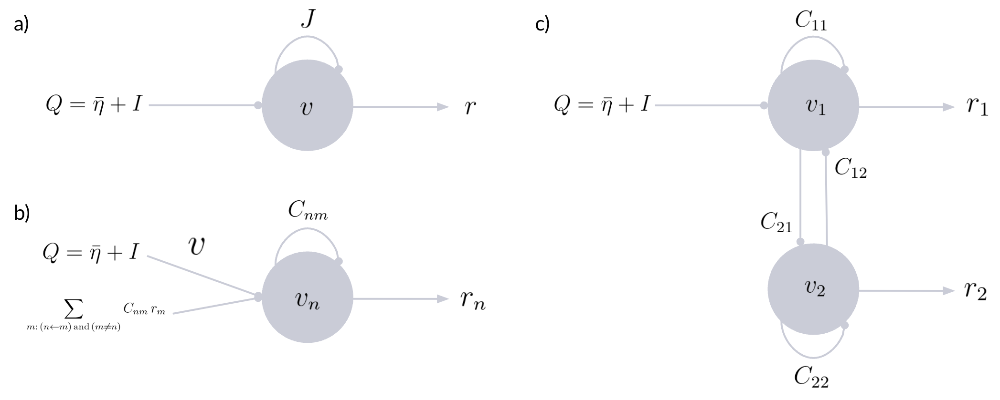
7.1 Forcing and coupling
Forcing and coupling are natural in this model, inheriting naturally from the single neuron biophysics in Equation 7.1 through the term . We converge here on the notation used in Equation 2.12, where represents the input external to the network.
E-I push-pull motif.
For two coupled populations (see Figure Fig. 7.11), we have the six equations, in dimensional (membrane-time) form
Here , ; are the membrane time constants of the excitatory and inhibitory populations, and are the second-order synaptic operators (with their own AMPA/GABA synaptic time constants). The membrane time enters as in the exact dimensional MPR reduction [10,213]: the rate term becomes , the quadratic curvature term , and the synaptic current is scaled by ; the external input and forcing are unscaled. The sign conventions follow the rest of the manuscript: denotes excitatory self-coupling within the E population, denotes inhibitory self-coupling within the I population (entering with an explicit minus sign in the equation), and , denote the magnitudes of the cross-couplings (EI positive, IE negative as a consequence of the explicit minus in the equation). The forcing term enters only the excitatory population, consistent with the convention used throughout this review. In operator form, following Equation 7.7, we express the complete set more compactly,
where is the dimensional MPR transfer functional—the pair above with membrane time —and, as usual, we drive only the excitatory population. The push-pull motif is present through the nonlinearity.
General equations for multiple coupled populations.
The general equations for multiple interacting populations become
where is the membrane time constant of population and the synaptic operators carry their own (synaptic) time constants, or
Equations for coupled E-I push-pull motif.
We can also write equations for multiple E-I motifs as in the previous sections, where each E-I motif is identical and we only connect excitatory to excitatory populations (with, e.g., and only two types of synapses),
All coupling magnitudes are taken non-negative, ; the signs in the voltage equations encode the dynamical role of each connection: for excitatory drive ( self-recurrence, EI, long-range for EE) and for inhibitory drive ( self-recurrence, IE). The swap-and-flip rule from the excitatory () to the inhibitory () population is then read directly off the equations: swap the population index and flip the sign of each cross-coupling term according to the role (excitatory vs. inhibitory) it plays in the receiving population.
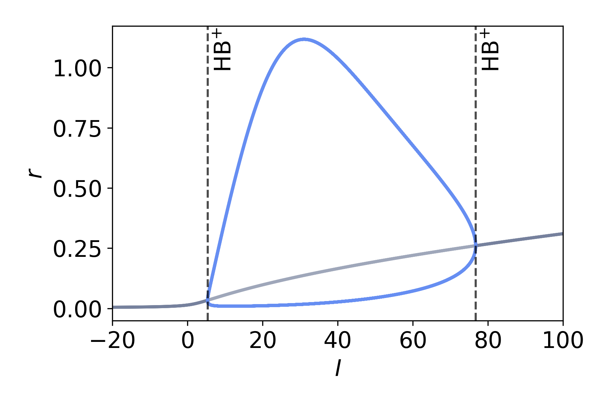
The bifurcation diagram of Eq. (7.8) is shown in Fig. Fig. 7.12. It illustrates the steady-state firing rate as a function of the external input . As in the previous models, increasing the external input induces a transition from a stable fixed point to oscillatory activity via a supercritical Hopf bifurcation (HB). The resulting limit-cycle oscillations persist over a range of input values and are terminated at a second HB, with both bifurcation points indicated by the vertical dashed lines.
The bifurcation diagram of Eq. (7.9), which yields a PING model, is shown in Fig. Fig. 7.13. It depicts the steady-state firing rate as a function of the external input (I). From left to right, as the external input increases, the system first undergoes a pair of saddle-node (SN) bifurcations, indicating the creation and annihilation of fixed points. Following these, the system experiences a supercritical Hopf bifurcation (HB), giving rise to stable oscillatory dynamics. The resulting limit-cycle oscillations persist over a range of input values until the system passes through another HB bifurcation, at which the oscillations disappear and the system returns to a stable fixed point.
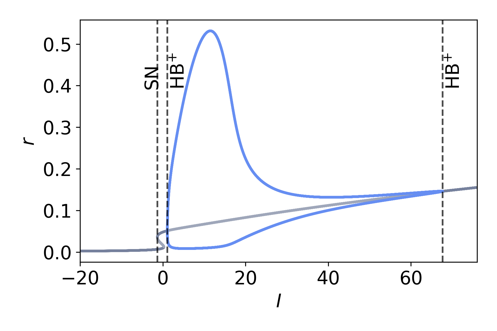
Whole-brain Simulations Parameters & Physiological Meaning
| Node | Neural mass with explicit synapse and soma: PSP states drive a membrane perturbation , which adds, with others, to and passes through a sigmoid to yield a firing rate . |
| Population firing rate (Hz or normalized). | |
| Mean membrane potential. | |
| Membrane and synaptic time constants. | |
| Centre (location parameter) and HWHM of the Lorentzian excitability distribution (bias and heterogeneity of population elements). Larger broadens dispersion and damps coherence. | |
| Local recurrent self‑coupling of population (excitatory ; inhibitory ) scaling the node’s own synaptic self-current . Tunes resonance and distance to oscillatory regimes. | |
| Synaptic activation from presynaptic population to ; obtained by filtering : . | |
| Synaptic filter (first‑ or second‑order). E.g., for equal rise/decay: solves ; with distinct rise/decay use . | |
| ,, | Synaptic gain and time constants (set per synapse type: AMPA/NMDA/GABAA/GABAB); determine amplitude, lag and band‑selectivity. |
| Long‑range coupling weight from to (SC by default; FC/EC or synthetic graphs if needed). | |
| (opt.) | Propagation delay on pathway ; introduces frequency‑dependent phase lags. Use by replacing by in Eq. 7.11. |
| Number of nodes/populations. | |
| Exogenous drive (external forcing from nodes or elements outside the network or an electric field)—see Equation 2.12). |
Use this when you need a first‑principles link from spiking microdynamics to mesoscale variables: a dynamic “sigmoid” (– equations) with state‑dependent gain/inertia, principled effects of self‑coupling , and clean integration of synaptic filtering and uniform field inputs.
Assumptions all‑to‑all recurrence within each population, QIF spike mechanism, Lorentzian heterogeneity (MPR exactness), chemical synapses via ; extensions cover electrical synapses and plasticity.
Best for analytic studies of resonance/entrainment to weak uniform drives (tACS‑like), comparisons to heuristic NMMs.
Avoid if a static transfer is sufficient and parameters must map directly onto classic NMM1 fits; or if detailed channel/compartment biophysics is required (prefer conductance‑based masses).
Provide , ; synaptic filters with (or ); network (SC/FC/EC or synthetic), optional delays ; external or field term .
Defaults start from JR‑style kinetics (use Table Table 4.2 for AMPA/NMDA/GABA ranges); row‑normalize and (optionally) scale by a global gain; initialize near the desired fixed point; With non-zero delays in the network coupling and stochastic forcing in , Eqs. (7.11)–(7.13) are SDDEs and inherit the caveats discussed in §§2: prefer method-of-steps DDE solvers in the deterministic limit; if a fixed-step Euler–Maruyama scheme is used on the delayed system as a controlled approximation, satisfy both the oscillation-resolution bound and the delay-resolution bound , verify convergence by step halving, and report the discretisation scheme, interpolation on the delay buffer, and random number generator (RNG) seed alongside other simulation parameters.
Readouts , , and ; PSD/cross‑spectra; envelope/FC/FCD; resonance curves vs. and field amplitude; operating‑point maps from the – nullclines.
7.2 Applications
The NMM2 formalism has begun to power a range of concrete applications:
Emergence of brain rhythms: Several works have analyzed models based on the MPR theory to explore motifs allowing for the emergence of fast collective oscillations in one or two neural populations. The simplest instances include a single population of inhibitory neurons with synaptic delays[211,229,230,231], and excitatory-inhibitory population pairs [229,225,232,233,234].
Whole‑brain modeling: Next‑generation neural masses embedded on human connectomes offer an improved framework to analyze and reproduce brain dynamics captured by fMRI. Some works have started to explore this venue, focusing on capturing pathology and healthy states [235,236,237,238] and performing detailed mathematical analyses for the emergence of complex spatiotemporal behavior [239,240].
Non‑invasive stimulation theory: Because NMM2 replaces a static sigmoid with dynamic firing‑rate equations, it predicts state‑dependent field sensitivity. With second‑order synapses, it explains enhanced resonant responses to weak uniform AC electric fields (tACS‑like) and how self‑coupling and synaptic time constants tune this sensitivity [231]. Relatedly, NMM2 has been used to study population responses to brief exogenous pulses (TMS‑like) and ERD/ERS phenomena [225,241].
Cognition: Exact mean‑field models reproduce working‑memory operations and associated oscillatory signatures, providing a coarse‑grained yet mechanistic account [242,243].
Neuromodulation and DBS: Extensions that include adaptation/neuromodulatory variables have been used to explore mechanism‑level effects of deep brain stimulation and dopamine on network dynamics [244,245].
Additionally, several extensions to the MPR theory have extended its range of applicability by challenging some of the simplifying assumptions of the QIF formulation (7.1). Paired with synaptic dynamics, these extensions provide even further refined versions of NMM2:
Dynamic noise: Originally, the only source of microscopic disorder in the QIF formulation (7.1) was through the quenched variables . Nonetheless, the exact mean-field theory also applies if are considered to be dynamic Cauchy white noise [246]. Additionally, approximation theories exist for the case of Gaussian white noise [247,248].
Quenched noise distribution: The MPR theory requires to be Lorentzian-distributed to obtain a closed low-dimensional model for and . Recent work generalized the theory to include -Gaussian distributions, at the expense of increasing the number of independent variables in the resulting neural mass[249,250].
Gap-junctions: The MPR theory also applies for neurons communicating via electrical synapses mediated by gap-junctions and other diffusion-based coupling [44,251]. This allows for deriving NMM2 including electrical coupling, a major breakthrough considering that heuristic formulations cannot account for this microscopic effect.
Adaptation variables: In spite of its significance, the QIF model is a simplified model for neuron dynamics. Further biophysical mechanisms in the single unit dynamics, such as spike-frequency adaptation or ion channel dynamics, require the inclusion of additional dynamical variables for which the exact mean-field theory might not apply. To address this problem, some works propose including a mean-field adaptation as an approximation to networks with single unit adaptation[252,253]. A recent approach, instead, proposes including a suitable form of spike-frequency adaptation for which the MPR still holds exactly[254]. Beyond the QIF/theta line, Nicola & Campbell [255] derived an approximate mean-field reduction for heterogeneous networks of two-dimensional integrate-and-fire neurons.
Full low-dimensional theory: The MPR theory, which is strongly related to the Ott-Antonsen ansatz for the Kuramoto model[256], poses some challenging theoretical questions. The most relevant of them asks whether the low-dimensional manifold is attracting in the microscopic representation. A rigorous theoretical framework has been proposed recently, demonstrating that this is indeed the case provided the single units are not all identical ()[257].
Finite and asymmetric spikes: The original theory requires QIF neurons with a spike apex and reset at . This poses a limitation resulting neural mass model, especially when gap-junctions are included. Montbrió and Pazó [258] introduced a model accounting for spike asymmetry in order to properly capture these effects in networks with gap junctions. Recently, Cestnik [259] extended the exact low-dimensional reduction to a two-phase model capturing the dynamics for neurons with finite spikes ().
8 Summary and Outlook
We have treated neural mass models as points on a continuous ladder connecting microscopic spiking descriptions to macroscopic whole-brain dynamics. Griffiths, Bastiaens & Kaboodvand [260]organise the same space along an orthogonal axis — spatial scale (cells circuits networks), whereas the present review uses the derivation–representation axes summarised in Fig. Fig. 8.14. The two organisations are complementary.
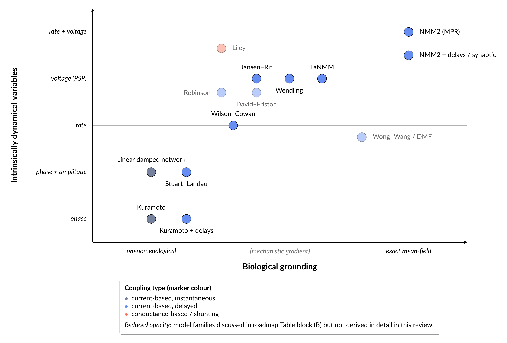
At the lowest rung, the harmonic and Stuart–Landau (SL) oscillators provide the normal-form language for local rhythms and their phase–amplitude structure. Wilson–Cowan (WILCO) models make the underlying excitatory–inhibitory push–pull architecture explicit and introduce sigmoidal transfer functionals as coarse-grained summaries of neuronal input–output relations. Second-order synaptic neural mass models (NMM1) add realistic synaptic filters with distinct rise and decay constants, thereby separating synapse from soma dynamics and producing realistic postsynaptic potentials, delays and phase shifts. Finally, next-generation models (NMM2) derived exactly from quadratic integrate-and-fire (QIF) networks close the loop from spikes to masses by replacing static sigmoids with analytically derived dynamic transfer equations, showing how population firing rates and mean membrane potentials evolve jointly under recurrent and external drive.[220,221,222,213]
A main message is that all these formalisms share a simple core: a push–pull motif between two effective degrees of freedom, coupled through linear filters and nonlinear transfer functions, and embedded in a network via structured coupling and delays. In the linear limit, this core reduces to damped resonators or complex Ornstein–Uhlenbeck processes, for which covariances and spectra can be obtained in closed form and mapped onto empirical functional connectivity.[86,79] Close to Hopf, SL-like normal forms capture the onset of self-sustained oscillations, metastability, and turbulence-like dynamics under connectome coupling.[85,204,102] WILCO and NMM1 add biophysical levers (synaptic gains, time constants, E/I balance, laminar circuits) without losing this dynamical structure, and NMM2 shows that, at least for QIF networks, these macroscopic descriptions can be derived exactly rather than postulated.
Looking ahead, one natural direction is to extend exact mean-field reductions beyond QIF neurons. Current next-generation neural mass models exploit specific analytic properties of the QIF nonlinearity and Lorentzian excitability distributions.[220,221] A major open problem is to obtain similarly low-dimensional closures for more realistic single-cell models, such as exponential integrate-and-fire or multi-variable Hodgkin–Huxley-type neurons, possibly via systematic approximations (e.g. moment closures, population-density expansions, or renormalization-group inspired coarse graining).[217,219,247] Such derivations would clarify which aspects of spiking physiology (e.g. spike-frequency adaptation, active dendrites, NMDA currents) survive coarse graining and how they renormalize effective gains, time constants, and non-Gaussian noise at the neural-mass level.
A second axis concerns more realistic local circuits. Laminar neural mass models already capture distinct deep and superficial generator loops and their contribution to laminar LFP, CSD, and cross-frequency coupling.[8,122] Next steps include: (i) explicitly modeling multiple inhibitory subtypes (PV, somatostatin (SOM), vasoactive intestinal peptide (VIP)) with layer-specific projections; (ii) incorporating both chemical and electrical synapses in a unified mean-field description; and (iii) embedding short-term synaptic plasticity and intrinsic adaptation into next-generation masses in an exact or controlled approximate way [211,226,252]. These refinements would allow laminar models to speak more directly to cell-type and layer-resolved data, calcium imaging, and perturbation experiments, and to test hypotheses about how microcircuit motifs implement canonical computations (e.g., gain control, winner–take–all, and gating).
At the whole-brain scale, three modeling ingredients become increasingly important. First, heterogeneity across regions: empirical work shows that cortical areas differ systematically in local time scales, recurrent excitation, and laminar architecture, which in turn shape their role in large-scale hierarchies.[261,262] Future models should assign region-specific parameters (e.g., SL working points, WILCO gains, NMM1/NMM2 synaptic kinetics) informed by cytoarchitectonics, gene expression, and receptor densities, rather than using identical nodes everywhere. Second, directed and laminar-specific coupling: predictive-processing accounts suggest that feedforward and feedback pathways are implemented via distinct layers, with frequency-specific channels (gamma/beta) carrying prediction errors and predictions.[263,264] Embedding laminar neural masses in directed structural connectomes with frequency-dependent effective connectivity is a natural route to test such proposals against MEG/EEG and laminar recordings. Third, more refined parcellations and subcortical circuits: incorporating high-resolution cortical atlases (e.g. Glasser multimodal 360-area parcellation and its extensions)[265] and explicit thalamic, basal ganglia, and cerebellar masses[266,267,262] will be essential to capture cortico–subcortical loops that shape rhythms, state transitions, and neuromodulatory control.
Neuromodulatory systems provide a complementary, low‑dimensional control axis over the same large‑scale circuits. Gradients of receptor densities and gene expression co‑localize with the structural and timescale hierarchies described above, suggesting that neuromodulatory tone shapes regional gain, effective time constants, and long‑range coupling in a spatially specific way [268,269]. From a modeling standpoint, even when neuromodulatory nuclei are not explicitly represented, their effects can be approximated by treating external drives and gain parameters as proxies for neuromodulatory axes—for example, using global or projection‑specific changes in background input, SL working points, or WILCO gains to implement neuromodulation‑like shifts in E/I balance, integration time and noise statistics, in line with classical circuit‑level neuromodulation work [270]. Recent whole‑brain modeling incorporates neurotransmission‑weighted connectivity to account for a wide repertoire of task‑evoked states, showing that neuromodulator‑dependent changes in effective coupling can reproduce diverse cognitive configurations within a single structural scaffold [271]. These findings motivate configuring “external inputs” in large‑scale models using receptor and gene‑expression maps, or fitting low‑dimensional neuromodulatory control variables to match state transitions induced by pharmacological, arousal, or task manipulations.
We see two further connections, with statistical inference and with information-theoretic analyses of state. Linear and SL-based whole-brain models already support perturbation-based measures of nonequilibrium, susceptibility, and information routing across states (wake, sleep, anesthesia, psychedelics).[85,102,104] NMM1 and NMM2 provide richer, mechanistically grounded arenas in which to define and compute such quantities, including algorithmic-information or compression-based characterizations of oscillatory dynamics. Coupling these models to modern inference frameworks (variational data assimilation, Bayesian model comparison, active inference) can turn them into forward models for multimodal data (fMRI, M/EEG, SEEG, laminar probes) and for in silico perturbation experiments (TMS, DBS, tES).[9,159,80,272]
Acknowledgments
GR and FC have received funding from the European Research Council (ERC) under the European Union’s Horizon 2020 research and innovation programme (grant agreement No 855109, GALVANI) and from FET under the European Union’s Horizon 2020 research and innovation programme (grant agreement No 101017716, NEUROTWIN). PC has received financial support from the grant PID2024-155942NB-I00 funded by MCIN/AEI/10.13039/501100011033. Raul de Palma Aristides and Jordi Garcia-Ojalvo are supported by the European Commission under European Union’s Horizon 2020 research and innovation programme Grant Number 101017716 (NEUROTWIN). Jordi Garcia-Ojalvo was also financially supported by the European Research Council (ERC) under the Synergy grant 101167121 (CeLEARN), by the Spanish Ministry of Science and Innovation and FEDER under project PID2024-160263NB-I00), and by the ICREA Academia program.
Declaration of generative AI and AI-assisted technologies in the manuscript preparation process. During the preparation of this work the author(s) used ChatGPT in order to streamline the narrative. After using this tool/service, the author(s) reviewed and edited the content as needed and take(s) full responsibility for the content of the published article.
unsrt references,giulio_references,pau_references
A Terminology and Scope of Aggregate Neuronal Models
Under the umbrella of aggregate neuronal modeling (also called neural mass, population, or lumped models), we encompass a spectrum of formalisms that trade biological detail for analytical or computational simplicity. This hierarchy can be traversed in both directions—adding realism to derive more mechanistic descriptions or stripping back complexity to reveal core dynamical principles:
Phase oscillator: describes the evolution of a single phase variable , capturing limit‐cycle interactions at the most abstract level.
Damped oscillator: introduces amplitude relaxation, e.g., a second‐order linear system with friction.
Stuart–Landau (SL) normal form: a generic nonlinear oscillator near a Hopf bifurcation, used phenomenologically to model neural rhythms.
Wilson–Cowan (WILCO): the prototypical two‐population rate (population/lumped/neural‐mass) model, describing mean excitatory and inhibitory firing with coupled ODEs.
Neural Mass Model 1 (NMM1): adds biophysical filtering of post‐synaptic potentials (PSPs) and explicit conversion from mean membrane potentials to firing rates.
Neural Mass Model 2 (NMM2 or MPR): extends NMM1 by incorporating dynamics in the transfer function.
When we take the limit of infinitely many, infinitesimally small populations (or let the spatial coupling kernel become continuous), this lumped description generalizes to integro‐differential or partial‐differential equations known as neural field models.
Aggregate neuronal models (phase oscillators, SL, WILCO, NMM1, NMM2, etc.) are fundamentally statistical constructs that provide macro‐level, effective descriptions of complex networks of many neurons. All share these core features:
Mean variables: each model tracks ensemble averages—phase and amplitude (phase oscillator, SL), firing rate (WILCO), membrane potential and PSP (NMM1), plus synchronization metrics (NMM2).
Aggregation by type: neurons are grouped into populations based on anatomical and functional characteristics, each treated as a single “lumped” unit.
Effective parameters: time‐constants, gains and connectivities summarize average behavior; they do not map one‑to‑one onto single‑cell properties.
Scale invariance: the dynamical equations predict the same trajectories regardless of neuron count, provided effective parameters (e.g. mean synapses per neuron) remain fixed.
Bridge to measurements: to relate outputs (phase, rate, or voltage) to LFP, current‐source density, or BOLD signals, morphological and density‐based scaling factors must be applied post‐hoc.
B Coordinate Transformations
This appendix provides the full mathematical derivations of how one obtains Cartesian and complex representations from polar form (and vice versa) for both the undamped and damped oscillators.
B.1 Undamped Oscillator: Polar Cartesian Complex
Polar to Cartesian.
Starting from the polar equations
define
Differentiate and with respect to time. Since is constant,
Hence,
which recovers the undamped Cartesian form (2.1)–(2.2).
Cartesian to Complex.
Given and satisfying (B.4), set
Then
recovering the undamped complex form (2.8).
Conversely, writing and differentiating yields
By matching , one finds
B.2 Damped Oscillator: Polar Cartesian Complex
Polar to Cartesian.
Begin with the damped polar equations:
Define
and differentiate:
Substitute and from (B.6)–(B.7):
Similarly,
Define
Then
which recover the damped Cartesian form (2.24)–(2.25).
Cartesian to Complex.
From (B.10)–(B.11), let and . Then
yielding the damped‐and‐forced complex form (2.26).
Conversely, writing ,
Matching , one identifies
so that, by defining and , one recovers the polar form (B.6)–(B.7).
Notation and Labels in Appendix:
The external inputs in Cartesian form are related to radial/tangential forcings via (B.9).
The complex input is .
B.3 WILCO and second order equations
Unlike phase–amplitude models that admit a natural polar form, the Wilson-Cowan system is most naturally expressed in a 2D phase plane. We can interpret
and rewrite the Wilson-Cowan equations in vector form:
Phase‐plane analysis (nullclines, fixed points, and limit cycles) is used to study how evolves in .
Second order equations.
Because each equation is second-order, one can rewrite them as pairs of first–order ODEs. For instance, let and . Then:
Similarly for . Alternatively, one may keep the original form and perform phase–space analysis in four dimensions . The and terms (right–hand side) act as a linear decay, while the second–order operator allows for resonant or damped oscillatory responses that are further modulated by the nonlinear saturations and .
C Linear Stability and Bifurcation Analysis
C.1 Bifurcation diagrams
Bifurcation diagrams provide a powerful way to visualize how the qualitative behavior of a dynamical system changes as key parameters vary, and they are widely used to study the emergence of oscillatory dynamics. In this section, we discuss the common bifurcations observed in neural mass models by examining their bifurcation diagrams. We emphasize that these diagrams depend strongly on the chosen parameter values, and this section is not intended to serve as an exhaustive catalogue of all possible dynamical regimes. For comprehensive analyses of each model, we will refer the reader to the dedicated literature.
We focus on one-parameter bifurcation diagrams, which we compute using the AUTO-07p software package. This tool allows us to identify fixed points and limit cycles, along with their stability properties. The scripts used to generate all bifurcation diagrams presented here, along with a complete list of parameters, are available at [273].
Stuart-Landau
We begin with the Stuart-Landau (SL) model, which is given by
Setting and , we get
The bifurcation diagram of the later, using as the bifurcation parameter, is shown in Fig. Fig. 3.3. The dark (light) gray line represents the stable (unstable) fixed points. For , the system has complex eigenvalues with negative real parts, meaning that trajectories spiral towards the fixed point (damped oscillations). For , the real parts of the eigenvalues are positive, so trajectories are repelled from the fixed point and attracted to the stable limit cycle, with amplitude represented in blue. This transition, in which a fixed point changes its stability while a stable (or unstable) limit cycle emerges, is known as a supercritical (or subcritical) Hopf bifurcation, here referred to as HB.
The bifurcation diagrams for the Wilson–Cowan and NMM1 (Jansen–Rit, Wendling, LaNMM) models, previously included here, have been moved into the main body of the paper—see §§5 and §§6. The diagrams below cover the remaining models in the cross-walk, namely the next-generation NMM2 ING and PING motifs.
ING
Our analysis now shifts to NMM2 models. We start with the ING model with second-order synapses, whose dynamics are governed by the following system of equations:
The bifurcation diagram for the NMM2 model of interneuron-gamma (ING) oscillations is shown in Fig. Fig. 7.12. It illustrates the steady-state firing rate as a function of the external input . As in the previous models, increasing the external input induces a transition from a stable fixed point to oscillatory activity via a supercritical Hopf bifurcation (HB). The resulting limit-cycle oscillations persist over a range of input values and are terminated at a second HB, with both bifurcation points indicated by the vertical dashed lines.
PING
We continue our analysis of the NMM2 family by shifting our attention to the PING model, which can be viewed as a natural extension of the ING framework. The governing equations of the PING system are given by
The bifurcation diagram of the PING model is shown in Fig. Fig. 7.13. It depicts the steady-state firing rate as a function of the external input (). From left to right, as the external input increases, the system first undergoes a pair of saddle-node (SN) bifurcations, indicating the creation and annihilation of fixed points. Following these, the system experiences a supercritical Hopf bifurcation (HB), giving rise to stable oscillatory dynamics. The resulting limit-cycle oscillations persist over a range of input values until the system passes through another HB bifurcation, at which the oscillations disappear and the system returns to a stable fixed point.
To summarize, bifurcation diagrams are particularly valuable for neural mass models because they:
Reveal the onset of oscillations and other dynamical regimes. They identify where fixed points lose stability and give rise to limit cycles, as well as where bistability or other qualitative transitions occur, providing a clear picture of the model’s possible behaviors.
Guide parameter selection and sensitivity analysis. By showing how solutions depend on parameters such as coupling strengths or synaptic gains, bifurcation diagrams help identify which parameters critically shape the dynamics and which regimes are physiologically plausible.
Inform control and intervention strategies. In applications ranging from neuromodulation to pharmacology, knowing how small parameter changes can shift the system between regimes is essential. Bifurcation diagrams make these transitions explicit by highlighting where stability changes occur.
| Fig. | Panel | Swept parameter | Fixed parameters |
| Table Table C.4 continued | |||
| Fig. | Panel | Swept parameter | Fixed parameters |
| continued on next page | |||
| Stuart–Landau | |||
| Fig. Fig. 3.3 | — | ||
| Wilson–Cowan | |||
| Fig. Fig. 5.6 | (a) | = , , , , , , | |
| (b) | & same as (a) except for | ||
| Jansen–Rit | |||
| Fig. Fig. 6.8 | — | Same parameters as in [274] and [178] | |
| Wendling | |||
| Fig. Fig. 6.9 | — | Same parameters as in [121] | |
| LaNMM | |||
| Fig. Fig. 6.10 | — | Same parameters as in [8] and [188] | |
| NMM2-ING | |||
| Fig. Fig. 7.12 | — | , , , , | |
| NMM2-PING | |||
| Fig. Fig. 7.13 | — | , , , , , |
AUTO-07P is available at https://github.com/pclus/auto-tutorial.D Phase dynamics and Kuramoto model
In the main text, we begin with a pure phase oscillator model and gradually introduce increasing mathematical complexity. Nonetheless, coupled phase oscillator models, particularly the Kuramoto model, were originally derived from arbitrary oscillator systems subject to weak perturbations by employing rigorous mathematical techniques. Such approach, usually known as phase reduction, was pioneered by Winfree and Kuramoto, and has been widely applied in mathematical neuroscience to capture the phase dynamics of both single-neuron and neural population models. For a comprehensive treatment of these methods, readers may refer to [34,42,275,23]. Drawing on this literature, in this Appendix we provide a concise introduction to the phase reduction technique in a general setting, and then illustrate it using the Stuart–Landau oscillator, which naturally leads to the Kuramoto model.
D.1 Phase of a perturbed oscillator
Let us consider an -dimensional variable , whose time evolution is ruled by the differential equation
where is a smooth function. Let us assume that equation (D.1) has an attracting limit-cycle with period , . Thus, the curve is, by definition, parameterized by time, . We define the phase of a point of as
For simplicity, we denote .
The concept of phase is well defined for any point lying exactly on the limit cycle.
Nevertheless, the phase reduction approach is based on extending the notion of phase to a neighborhood of .
Let be a point in the state space close to, but not exactly on the periodic attractor .
Since the limit cycle is stable, the trajectory will end up arbitrarily close to as ,
thus will have a well defined phase, .
Therefore, even if is not on the invariant manifold,
one can find a point, such that, at long-term,
.
One can then define the phase of as .
All the points in the neighborhood of associated to the same phase form a isochrone curve,
i.e., the isochrones are the level curves of the function .
This extension of the notion of phase to the vicinity of the periodic orbit preserves a constant time evolution:
Applying the chain rule and using Eq. D.1, one obtains
Combining the two previous equations provides
This equation expresses then, that the variation of the phase under the effect of the field is constant.
We want to study oscillatory systems that are interacting with a certain environment, so, usually, equation (D.1) is not enough for our purposes. One needs to account for the effect that external perturbations have on the system. Let us assume a perturbation on the evolution of , , with a small amplitude parameter ,
In order to keep arguing in terms of phases, one needs to find which is the impact of such perturbation on the phase of the oscillator. Applying again the chain rule to the time evolution of , and using Eq. (D.5) one obtains
Thus, as one would expect, the linear response of the phase to a perturbation of the trajectory is given by its gradient. For this reason, the gradient of the phase along a certain unitary direction is usually referred to as the Phase Response Curve (PRC), . Following the definition of gradient, given a infinitesimal perturbation of a point on the limit cycle , one can effectively compute the phase response curve as the normalized difference between the phase of , and that of ,
Thus, a positive (resp. negative) PRC indicates that the perturbation has the effect of advancing (resp. delaying) the phase of the oscillator. A zero PRC means that the perturbed point lies exactly on the isochrone of the original point. For simplicity, on the following we assume that the perturbation has direction and modulus so that . Thus, Eq (D.8) now reads
Systems with this form are known as Winfree-type models of phase oscillators [34], where the PRC, , and the shape of the forcing are defined independently one from the other.
D.2 From Winfree to Kuramoto
Let’s assume now the phase dynamics of two interacting oscillators of Winfree type:
Notice that now the forcing term has been replaced by a -periodic interaction function . It is possible to further simplify this system by separating time scales on the dynamics of the phase model. Since in Eq. (D.11), one expects that the changes in the evolution of mostly happen at a slow time scale, since the fast dynamics is driven by the natural frequency of oscillation . Let’s study then the time evolution of the slow variables . With this change of variables, equation (D.11) now reads
In order to retain the terms relevant for the evolution of one can expand the previous equation in Fourier series,
The last expression provides a separation of the fast and slow terms in the series: the terms with
are resonant, and, therefore, lead to slow dynamics. The other terms, instead, have explicit dependence on , and, therefore, lead to rapid changes. Thus, in order to keep only the relevant dynamics of the system, one can average out the non-resonant terms. Under the assumption that the natural frequencies of the two oscillator are comparable, i.e., , the terms of Eq. (D.14) relevant for the dynamics are those with . This leads to
where the coupling function can be computed as
Writing now system (D.11) into the original variables, we finally obtain:
Phase oscillators ruled by equations of this type are known as Kuramoto-Daido type models. Despite their simplicity, such systems provide a good framework to study emerging phenomena on networks of oscillators. The simplest of these models corresponds to being composed of a single harmonic, i.e., H() = (-), leading to the famous Kuramoto-Sakaguchi model. Nonetheless, the phase reduction of most nonlinear oscillators contain more harmonics in their coupling function, which usually also increase the complexity of the model dynamics.
Here, we provided a simple intuitive arguments on how the time-scale separation is being performed. Formally, the coupling function emerges from applying averaging theory to system (D.11).
These rigorous derivations also allow to extend this approach to more complex situations, including an arbitrary number of oscillators, cases in which the interaction function depends on both, pre and post-synaptic units, , and cases with other resonant relation between the units. Nonetheless, here we want to emphasize the two main assumptions that allow to obtain Kuramoto-Daido models from arbitrary limit cycles: weak coupling (), and weak frequency heterogeneities ().
D.3 Phase reduction of a Stuart-Landau system
In general, performing the phase reduction of a nonlinear oscillator requires a numerical approach. Due to its simplicity and symmetry properties, the Stuart-Landau oscillator is a notable exception. Here we reproduce a well-known result that a system of coupled Stuart-Landau oscillators leads to the Kuramoto-Sakaguchi model:
Let’s first determine the phase variable of an uncoupled oscillator. We work using the polar representation:
The system contains an (unstable) fixed point at . For any other initial condition, and , the solution of the system reads:
As the equation evolves towards a limit cycle with amplitude and frequency . If the system is initialized exactly at the limit-cycle, then the phase is simply . For initial conditions outside the invariant manifold, the system converges to the limit cycle with phase (r,) = - 2( r_0^2 ). From this explicit expression we can observe the isochrones of the Stuart-Landau oscillator are given by setting , where is constant. We can also check that this definition of phase produces a uniform rotation from Eq. (D.5): (r,) = - .
Let’s consider now the perturbed system:
As explained before, the PRC of the system can be computed as the phase gradient at a given perturbation direction, in this case Z()=_ z z. For simplicity, we proceed in Cartesian coordinates:
thus
Therefore, the phase dynamics of a single, weakly perturbed Stuart-Landau oscillator are given by = + [ ( - ()-()) x ( ()- () ) y ] where . In the coupled system, the perturbation comes from the other oscillators of the network, and thus chages in time. In particular
Inserting these expressions into the PRC and simplifying the terms using trigonometric identities, we finally obtain
where _i = _i - , K = 1+^2^2,and=( ). In this case, no averaging is needed to obtain a Kuramoto-Daido type of model, since we have already obtained a coupling function that depends only on the phase differences. Moreover, the coupling is given by a single harmonic, thus ultimately providing a Kuramoto-Sakaguchi model. We emphasize, again, that this is specific for the Stuart-Landau oscillator, and other models can lead to coupling functions with several harmonics.
E System of Linear Coupled Complex Oscillators
We consider a network of linearly coupled complex oscillators governed by
where is the self–damping coefficient, the intrinsic frequency, and the coupling matrix.
In vector form this reads
If is diagonalizable with eigenpairs , the change of variables decouples into modes
Asymptotic stability (synchronization to ) requires
In particular, if is real symmetric with largest eigenvalue , the simple sufficient condition is
More generally, the Master Stability Function (MSF) formalism [276] characterizes the region in the complex plane where perturbations decay. Early Lyapunov–matrix approaches appear in [277], and applications to small-world and complex topologies were developed in [278].
Key Stability Criterion.
Although the Master Stability Function (MSF) framework of Pecora & Carroll [276] treats coupled dynamics in full generality, the purely linear network
has also been studied in its own right:
Large random systems. May analyzed the eigenvalue spectrum of for large random , showing a sharp transition to instability when [279].
Amplitude death. Early stability analyses of coupled Stuart–Landau oscillators derive exactly the same linear condition against the trivial fixed point [280,281].
Hopf‐normal‐form variational equation. When linearizing two or more Hopf normal‐form oscillators (Stuart–Landau) around the zero solution, one recovers the model above [282].
In each case, asymptotic decay to zero reduces to
E.1 Constant Forcing and the Affine Shift
Adding constant terms does not alter the spectral–stability condition; it simply translates the asymptotic resting state from the origin to . All transient decay (or growth) rates are exactly those of the original linear network.
Consider appending a constant complex bias to every node in (E.1):
Collecting the states and biases gives the affine system
Equilibrium.
If is nonsingular—equivalently —there is a unique fixed point
When is singular, a constant input may generate a line (or plane) of equilibria or even unbounded drift along when .
Shift–of–origin reduction.
Define the deviation . Substituting (E.5) into (E.4) yields the homogeneous system
showing that constant forcing merely translates the flow; all eigenvalues, Jordan blocks, and Master‑Stability‑Function curves coincide with those of the original network. Hence the stability criterion
continues to be necessary and sufficient—now guaranteeing exponential convergence toward instead of the origin.
Dynamical consequences.
Stable spectrum (): every trajectory decays at the same rates as before but settles on the static pattern (E.5).
Marginal spectrum ( for some ): the constant drive excites those neutral modes, producing bounded oscillations (purely imaginary eigenvalues) or linear growth ().
Unstable spectrum: divergence persists; only offsets the blow‑up.
E.2 From linear complex networks to Kuramoto phases
Starting from the undamped linear network
we introduce polar coordinates
Substituting into (E.6), multiplying by , and separating real and imaginary parts gives
Writing with yields
a Kuramoto–Sakaguchi–type equation with time–dependent amplitudes.
To understand how a true phase model emerges, it is useful to rewrite (E.6) in vector form and add a uniform decay term,
as in the linear reformulations of Kuramoto [40,41]. The dynamics are then determined by the eigenvalues and eigenvectors of . For a critical value of , one can arrange that
so that all but one mode decay. Decomposing the initial condition as
the solution is
provided . Writing and , we obtain
In the synchronized or collective–oscillation regime of the linear system, the amplitudes therefore do not decay to zero; rather, they converge to a fixed spatial profile determined by the dominant eigenvector. All other directions in state space are exponentially damped.
Role of symmetry and collapse onto a reduced manifold.
The network (E.11) is equivariant under global phase rotations,
i.e. if is a solution then so is . This defines a smooth action of the compact Lie group on the phase space , and the dynamics commute with that action. In general, such a continuous symmetry partitions the solution set into group orbits: each trajectory has a whole family of symmetry–related copies. Under standard uniqueness assumptions, this induces a conserved “group label” (a map from phase space to the group or its Lie algebra that is constant along trajectories), providing a direct link between continuous symmetries, conserved quantities and reduced manifolds [283]. In local canonical coordinates, the conserved quantities appear as cyclic variables that do not enter the equations of motion except through their derivatives; trajectories then lie in a lower–dimensional manifold parameterized by these invariants [283].
From the linear–systems side, the spectral picture above says that the state space decomposes into a one–complex–dimensional center eigenspace (spanned by ) with and a –dimensional stable subspace with . Center manifold theory then guarantees the existence of a locally invariant center manifold tangent to the center eigenspace at the origin, such that all nearby trajectories are exponentially attracted to and the reduced dynamics on capture the long–time behavior of the full system [284,285]. In our case, is generated by the center eigenvector and the action: up to small nonlinear corrections (e.g. saturating terms that fix the overall amplitude), the manifold is the set
Dissipation collapses all transverse directions onto this family, while the symmetry guarantees a neutrally stable direction along the global phase. If a weak nonlinearity or normalization fixes the amplitude (or if we quotient out the trivial overall scaling), the effective attractor becomes a one–dimensional invariant circle generated by global phase rotations. This is the precise sense in which the combination of (i) symmetry and (ii) a spectral gap (all other eigenvalues with negative real part) leads to a collapse of the dynamics onto a reduced manifold, as emphasized in symmetry–based analyses of reduced manifolds in neural dynamics [286,287,283].
Projecting onto this neutrally stable manifold and parametrizing the state by phases alone, the frozen amplitudes render the couplings in (E.10) effectively constant,
which is of Kuramoto–Sakaguchi type [40,41]. The reduced phase model describes the dynamics on (or very close to) the –generated center manifold where all non–symmetric directions have been damped out.
This construction should be viewed as one realization of Kuramoto dynamics, rather than an equivalence in the opposite direction. The effective couplings in (E.18) are constrained by the spectrum of and the associated eigenvector profile . In contrast, the Kuramoto model is typically introduced as a phenomenological phase reduction for weakly coupled limit–cycle oscillators with symmetry [42,43,44,286], in which the coupling matrix and phase coupling function can be chosen more freely (allowing, e.g., partial synchrony, clustering, or chimera–like states not tied to a single linear eigenmode).
F From Wilson-Cowan to the Damped Harmonic Oscillator
How do WILCO parameters map to harmonic oscillator parameters in the linearized regime (damping and oscillatory frequency)? Let be a fixed point under constant inputs . Define
Also set
so that
The Wilson–Cowan equations read
We expand each sigmoid around its equilibrium argument. For the –population:
To make the truncation explicit, we adopt the asymptotic ordering and , the natural ordering when is an externally controlled drive and is the system’s response. Under this scaling the second-order terms in the expansion of scale as ; ; and . The mixed cross-terms therefore dominate the pure-state quadratic terms by a factor , justifying their retention. The pure-input term contributes a slowly varying input-only shift that we absorb into the redefinition of the operating point and do not display below. This ordering grounds the FM-modulation interpretation developed in the latter half of this appendix.
Since is small, keep only terms that are (i) linear in and (ii) the mixed cross‐terms or . Expand
Discard , but keep the cross‐term . Hence
Since , substitute into and subtract the equilibrium relation . We get
Analogously for the –population:
Subtracting the equilibrium yields
Hence the first‐order system—including the cross‐terms where input multiplies state deviations—is
Here we see that the self-coupling in the sigmoid affects, to first order, the frequency and also the time constant of the L-operator. To make this more explicit, we move the self-terms to the LHS, to provide a modified L-operator:
We now define two nonlinear differential operators and by grouping all “self‐terms” on the left. Specifically:
Next, define the “instantaneous coupling‐(frequency)’’ coefficients and forcing terms:
With these definitions, each equation can be written in the familiar “” form:
Here:
In this packed form, and absorb all self‐interactions (including the -dependent shifts in effective gain), while the right‐hand side isolates the cross‐coupling—i.e. a time‐varying “frequency” —plus direct input forcing.
In summary, the sigmoid nonlinearity is not merely a saturating link; its first and second derivatives convert small input changes into dynamic adjustments of both damping and oscillatory frequency — because rescales all coupling strengths and provides a direct input-dependent correction.
Functional Implications: Sigmoidal Frequency Modulation and Information Broadcast.
The linearized equations reveal that each population’s deviation is not merely driven additively by inputs; the second derivative of the sigmoid, , multiplies the product of state deviations and input perturbations. In other words, the term
acts as a form of frequency modulation (FM): fluctuations in one population’s input directly tune the effective coupling through . Since coupling strengths determine the natural frequency of oscillatory interactions, a small change in shifts the instantaneous frequency at which and exchange activity.
Physiologically, this FM-like mechanism allows one “mass” (population ) to broadcast information by modulating the oscillatory frequency of another “mass” (). A receiving population that is most sensitive at a particular frequency will selectively respond when the sender drives the shared sigmoid nonlinearity into a regime where shifts the downstream frequency into that band. In effect:
Sender (population ) selects a desired frequency by adjusting . Because scales the coupling coefficient , the instantaneous “spring constant” of the –oscillator is tuned.
Receiver (population ) is predisposed to respond when its own input or baseline drive places it near that modulated frequency. Thus, only those populations whose resonance matches the sender’s modulation will effectively “hear” the broadcast.
In summary, the presence of in the linearized dynamics gives rise to rich waveform‐shaping capabilities: a small change in one population’s input causes a proportional shift in the effective coupling to the other population, which in turn alters its oscillation frequency. This FM‐style interaction can be exploited in networks to parcel information into distinct frequency channels, ensuring that only suitably tuned downstream circuits decode the message.
G From Wilson-Cowan to Stuart-Landau
The Wilson-Cowan equations describe the interaction between excitatory () and inhibitory () populations,
where are sigmoidal firing-rate functions and represent external inputs. At equilibrium , small deviations and evolve according to
The trace and determinant determine stability. A Hopf bifurcation occurs when
so that the eigenvalues are purely imaginary, , with
where marks the natural oscillation rate of the coupled E-I system. The linear analysis captures only the onset of oscillations. To understand how their amplitude stabilizes, one must include the curvature of the sigmoids. Because flatten at high input, their local expansion around the fixed point,
reveals that produces a negative cubic nonlinearity. As activity grows, the effective gain drops, providing nonlinear damping that prevents runaway oscillations. This saturation is the key mechanism that limits amplitude after the Hopf bifurcation.
Close to the bifurcation point, the two-dimensional dynamics can be expressed more simply by moving to a complex coordinate
where is formed from the eigenvectors of . In these coordinates, the system reduces to the canonical Stuart-Landau form,
which captures the slow modulation of amplitude and phase near the Hopf point. The parameter measures the distance from the bifurcation,
for some control parameter , such as . Here is the linear oscillation frequency, arises from the negative curvature of the sigmoids (), and accounts for a weak amplitude-dependent frequency shift.
Writing gives
For small amplitudes, the linear term drives growth; for large amplitudes, the cubic term dominates, stabilizing oscillations at
Thus, the cubic nonlinearity captures the biological self-limiting effect of population saturation: as excitation and inhibition rise, firing rates approach their ceiling, reducing effective gain and fixing the oscillation amplitude.
In the real plane, the same dynamics can be written as
where represent small fluctuations in the excitatory and inhibitory drives. Each term can be interpreted in the underlying E-I dynamics:
center
tabularx0.95lX
Term & Interpretation in E–I dynamics
& Bifurcation control: distance from Hopf; depends on gains, weights, or external drive.
& Nonlinear saturation: reflects sigmoid flattening; prevents unbounded growth of activity.
& Rotational coupling: captures the lag between excitation and inhibition (E drives I, I suppresses E).
& Noise inputs: fluctuations in excitatory and inhibitory drives.
tabularx
center
In this reduced picture, the coordinates and correspond to rotated versions of the excitatory and inhibitory deviations. They form the two quadrature phases of the E-I oscillation: represents the excitatory component, while lags by roughly as the inhibitory counterpart. The terms summarize the saturation of the firing-rate nonlinearity, whereas the rotational term embodies the mutual E-I feedback that sustains rhythmic exchange between excitation and inhibition.
H Stuart–Landau Oscillator: Parameters and Geometry
Consider the Stuart–Landau normal form for a supercritical Hopf bifurcation:
Below we summarize the role of each parameter and then clarify the geometric effect (or lack thereof) of . The parameters are:
(linear growth rate / distance from bifurcation). itemize
If , the fixed point is stable (all small perturbations decay).
At , a Hopf bifurcation occurs.
For , the origin is unstable and a limit cycle of amplitude emerges.
Thus, measures how far one is past the Hopf threshold: is the distance in parameter space. itemize
(linear frequency). itemize
The term induces a rotation of small perturbations at angular speed .
Even if , any decaying oscillation spins at frequency . itemize
(nonlinear damping / saturation). itemize
Without saturation, , , would cause unbounded amplitude growth. The term provides cubic damping in amplitude: [ r = ,r - g,r^3, r = z. ] For , a stable limit cycle of radius appears when . itemize
(nonlinear frequency shift / phase–amplitude coupling). itemize
The term means that as grows, the instantaneous angular velocity becomes [ = ;-; ,r^2. ] On the limit cycle , the asymptotic frequency is Thus, governs how amplitude modulates the phase velocity (“shear” or “twist”), but does not directly affect the amplitude equation. itemize
H.1 Geometry
The limit‐cycle solution for is
with constant amplitude . In Cartesian form,
Hence
so the trajectory in the ‐plane is a perfect circle of radius . The parameter appears only in the phase:
Since does not enter , the equilibrium amplitude is independent of . Therefore, does not distort the circular shape into an ellipse. Instead, shifts the frequency of rotation once the amplitude has saturated. Concretely, a nonzero produces an amplitude‐dependent frequency: as grows, decreases by . On the limit cycle , the constant frequency is . Finally, the ‐trajectory remains a uniform circular orbit at this shifted frequency; there is no ellipticity.
In conclusion, while sets the radius of the circle and (together with ) fixes its angular speed, only the pair determines the geometric shape (the radius) of the limit cycle. The parameter influences when around the circle the oscillator moves (phase), but not how it traces out space (shape).
H.2 Parameter Redundancy and Scaling in the Stuart–Landau Normal Form
Must all four parameters appear, or can some be scaled away in the normal‐form reduction to simplify analysis of the dynamics?
H.2.1 Linear part: and
Near the Hopf bifurcation of a real dynamical system, one obtains a conjugate‐pair of eigenvalues , where is the original system’s bifurcation parameter. By definition, at the bifurcation point , and . In the SL reduction is chosen so that and measures the distance from the Hopf point, and is (to leading order) the Hopf frequency .
Because the fixed‐time‐units normal form must preserve the linear spectral center (i.e. the imaginary part at the bifurcation), both and are in general essential parameters. However, one can make a rotating‐frame transformation
to eliminate entirely if one is only interested in autonomous amplitude dynamics. Under that change, yields an equation for with linear part . In other words,
so drops out. Of course, if one cares about the absolute phase or wants to study phase interactions with external forcing, it may be convenient to keep .
H.2.2 Nonlinear part: and
The cubic coefficient in the SL normal form appears as the complex constant . In principle, one can also nondimensionalize time and rescale to remove one additional parameter. For example, define new units
where is some reference scale (e.g. ). In these units, the equation becomes
Writing and , and using , one finds
where . In this scaled form:
The linear growth parameter becomes
The frequency becomes
The nonlinear amplitude coefficient is now unity.
The phase‐amplitude coupling remains as the single ratio .
Thus, by an appropriate choice of time and amplitude scaling, one can reduce the SL normal form to
with only three essential real parameters . In many analyses, using the transformation described above, one chooses the rotating frame to set , leaving
with just two parameters and . In that minimal form, controls the distance from bifurcation (radial growth), while controls the amount of nonlinear frequency correction (phase–amplitude coupling).
H.2.3 Summary: Which Parameters Are “Necessary”?
At the level of the full, original SL equation, one typically lists four real parameters .
By scaling amplitude (i.e. set in new units), the nonlinear damping coefficient is removed, leaving only the ratio as the relevant nonlinear parameter.
By moving to a rotating frame, the linear frequency can be subtracted off, so the form no longer explicitly contains .
Consequently, the minimal normal form that still captures amplitude growth and phase–amplitude coupling has only and .
If one wishes to retain physical units (time in seconds, amplitude in volts, etc.), then may remain as the observable oscillation frequency, and remains the precise cubic coefficient. However, any analysis of scaling laws or bifurcation structure can be conducted in the reduced form with fewer parameters.
Therefore, while the generic derivation of the SL normal form yields four parameters, two of them can be eliminated by choosing convenient time and amplitude scales (and, if desired, a rotating frame). The remaining parameters for the unfolded Hopf–SL dynamics are the real bifurcation parameter (distance ) and the dimensionless nonlinear frequency‐shift ratio ().
H.3 Alternative Form Emphasizing the Limit‐Cycle Radius
Here we cast the Stuart-Landau equation as a damped harmonic oscillator with dynamical damping and frequency. The equation
can be rewritten to make explicit how is driven toward its steady‐state value . Group the real and imaginary parts of the nonlinear coefficient:
Equivalently,
or
or z = ( (r) + i (r) ), z reminiscent of the damped harmonic oscillator, (Equation 2.26) but with dynamical damping and frequency.
The first term acts as a feedback controller of the amplitude, a dynamical damping term keeping it close to the limit cycle radius, where . It can be seen as an oscillatory homeostatic mechanism.
In this form:
The real part multiplies . Writing yields the radial equation [ r = ( - g,r^2),r, ] so that is driven toward [ r_ = ,g,(>0). ] Thus one sees directly that as .
The imaginary part multiplies . In polar form this gives [ = ;-; ,r^2, ] so the instantaneous oscillator frequency is shifted by . On the limit cycle , the asymptotic frequency is .
Because the term vanishes exactly when , it is immediately clear from this form that must approach in order for the radial growth to vanish. Hence the limit‐cycle amplitude emerges naturally as .
H.4 Stuart–Landau in Push/Pull Form
Starting from
the Cartesian form is
Define the amplitude‐dependent coefficient , a dynamic damping term, and , a dynamic instantaneous frequency,
Introduce the nonlinear differential operator
where . Then the Stuart–Landau equations can be compactly written as
In this form, all growth (), saturation (), and nonlinear phase effects () are absorbed into the operator as a dynamic damping constant, while the right‐hand side retains a “pure” rotation at instantaneous frequency .
When the limit cycle is reached, , we are back at the undamped harmonic oscillator.
H.5 DC-Shifted Formulation of the Oscillator
In modeling oscillatory neural dynamics, one often needs to account for a tonic bias or constant drive, or more generally constant or very slowly changing (compared to the natural timescale of the system) “forcing". In fact, the signals generated by the model oftentimes need to be positive quantities (e.g., firing rates), or at least not centered at zero (membrane potential perturbations). What is the natural way to do this in the HO and SL cases?
Harmonic Oscillator case. Consider the damped, unforced oscillator in complex form:
This equation gives solutions centered at zero, which is undesirable if we want to relate them with firing rate models or membrane potentials. E.g., a constant electric field produces a DC shift in membrane potential or firing rate in more realistic models. How can this simple model accommodate it?
A simple additive term provides the desired solution behavior (a DC shift). With a bias , the equation becomes
Introduce a constant shift and define the change of variables (a translation)
Then, the equation for is
The last term is just a complex constant and we can set it to zero with C= ca+i so that — we recover the harmonic oscillator equation in the new coordinates. Hence, the generalized, shifted harmonic oscillator in Equation H.1 is a translation of the harmonic oscillator with a center at — see Figure Fig. H.15 (top left) for examples. The explicit solution is
Hence, for , the motion is a uniform circular orbit around the displaced center ; for , trajectories form logarithmic spirals converging to the point .
Stuart-Landau. Similarly to the HO case, a naive way to do so is to add a constant term to the Stuart–Landau (SL) equation:
This DC–shifted SL now has
a limit cycle displaced away from the origin,
broken symmetry,
and modified amplitude/frequency balance.
To recover a zero‐mean description, one sets
Substitution gives
so that the constant offset disappears. However, the new equation for contains extra quadratic and linear terms arising from the expansion of ; it is no longer in the simple SL form.
Despite this complication, normal form theory guarantees that any smooth perturbation of a Hopf normal form can be brought back—through a further smooth, near‐identity change of variables—into the canonical Stuart–Landau structure, up to higher–order corrections. Le’on and Nakao (2023) [288] provide expressions for the frequency and amplitude shifts up to second order in DC shift.
More generally,
for a suitable cubic function , eliminates all non‐resonant quadratic and shifted cubic terms, leaving
to leading order. The new parameters absorb the effects of the original bias and shift . Thus, even with a DC offset, the local oscillatory dynamics near the Hopf bifurcation remain of Stuart–Landau type: a self-saturating limit cycle with phase–neutral drift or fixed point (depending on parameters).
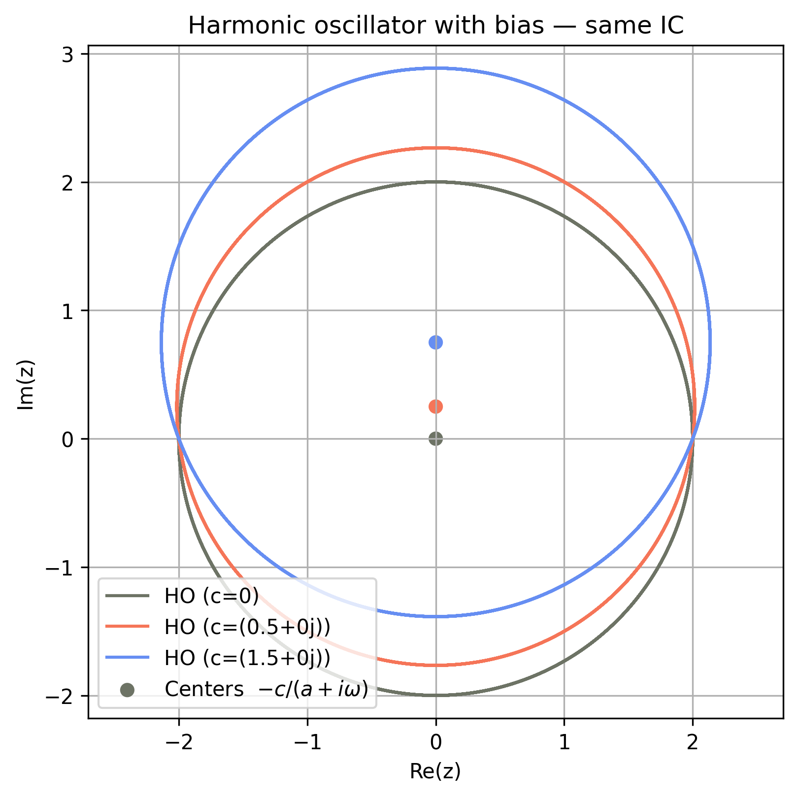
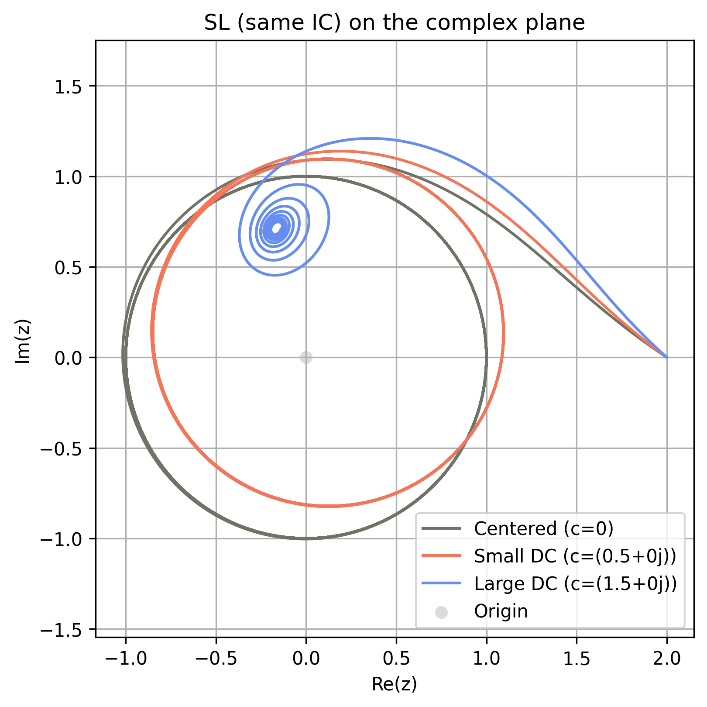
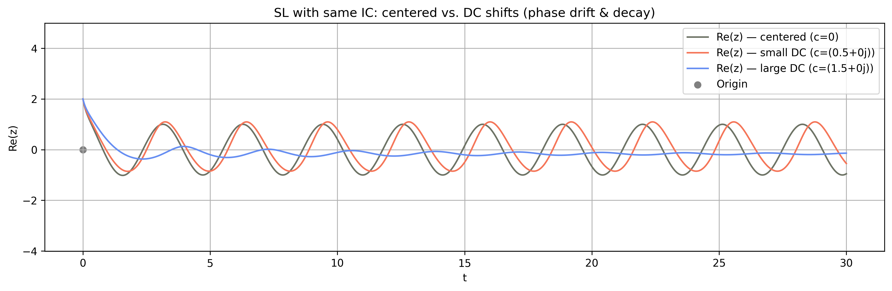
However, introducing a constant DC bias to the Stuart–Landau oscillator modifies its equilibrium position, breaks the symmetry, and shifts the critical Hopf bifurcation threshold, thus altering both amplitude and frequency of oscillations (see Figure Fig. H.15 for an example). Small biases result in second-order reductions in oscillation amplitude and frequency shifts, whereas sufficiently large DC offsets can completely eliminate the limit cycle. Analytically, this can be described as an imperfect Hopf bifurcation: the effective bifurcation parameter () is renormalized by the DC term, requiring a higher original parameter value to sustain oscillations. Hence, persistent oscillations occur only when the system’s gain overcomes the bias-induced suppression; otherwise, the oscillator settles into a stable equilibrium without oscillations.
I Linear Operators, Green–Laplace Tools, and E-I Oscillations: a Pedagogical View
Linear differential operators appear throughout neural modeling (synaptic kinetics, population filters, dendritic cable reductions). A compact way to see why they behave like filters is to write
and study two canonical objects. The homogeneous solution reveals the system’s natural modes, while the impulse response solves with for and encodes the system’s causal memory. If the characteristic polynomial factors as with distinct , then . The corresponding is also a linear combination of the same exponentials for , pinned by standard continuity conditions at (all derivatives up to order are continuous; jumps by ) [289].
I.1 Two complementary tools: Laplace and Green
Laplace viewpoint.
With zero initial conditions, where . The transfer function is . Poles of set decay rates, oscillation frequencies, and phase lag. Evaluating on the imaginary axis, , gives magnitude and phase; the group delay is .
Green (time‑domain) viewpoint.
Equivalently, the causal Green’s function satisfies with for . For any input ,
Laplace uses exponentials (an eigenbasis of ) to expose poles and phase directly; Green uses time‑localized impulses to show how past inputs are weighted and delayed [289]. Both are the same mathematics seen from two bases.
A gentle taxonomy by order (with worked examples)
For clarity we use for first order and for second order, with , , . When convenient we switch to and via and .
Zeroth order: memoryless gain.
. There is no temporal memory.
First order: leaky integrator (and integrator limit).
has . The time constant is . In Laplace, , so . If , and : an ideal integrator with perfect memory.
Second order: rise–decay, critical, underdamped, and negative damping.
With , the roots
organize all cases. Overdamped (): , a difference of decays with a delayed peak. Critical (): (the alpha form). Underdamped (): writing and ,
an exponentially damped sinusoid. If (negative friction) the real part of the poles is positive and the response grows.
I.2 The synapse as a forced harmonic oscillator
It is perhaps more intuitive to understand synaptic delay and inertia by recognizing the operator as the mass-spring-damper driven by a force :
Apply an impulse . The mass first acquires velocity, not displacement; energy shuttles between kinetic and spring energy, and damping removes energy. This automatically produces a delayed peak in : the output must build up after the impulse. The same reasoning holds for the electrical RLC analog. In neural mass models, is a postsynaptic potential and is the presynaptic drive; the “mass” summarizes effective inertial storage across coupled first‑order elements, while and summarize leak and restoring tendencies.
Worked example (critical alpha).
Choose . Then and
Thus the alpha kernel is the impulse response of a critically damped oscillator driven by the presynaptic input. Its delayed peak illustrates a causal, buffer‑like delay with smoothing, not a noncausal time shift.
Peak time and inertia: how mass slows the response.
Factor with and . In the overdamped case, peaks at
At the double pole one gets with . In the underdamped case,
with and . For fixed and , , , and , hence
Inertia therefore increases the causal delay. Importantly, the overdamped log formula must not be used once the poles become complex; the underdamped expression governs the peak.
I.3 E–I motifs, Barkhausen conditions, and where the phase lag comes from
A pedagogical route to oscillation is to rewrite the undamped oscillator as a pair of coupled first‑order filters. Let and consider
Separating real and imaginary parts gives
Each equation is a leaky integrator driven by the other in phase. When the loop produces sustained oscillations; when the envelope decays as . This “push–pull” view is the simplest template to keep in mind as we turn to E-I populations.
Barkhausen as a phase-gain budget.
For a feedback loop with transfer , necessary conditions for linear self‑oscillation at are and [290]. The phase condition pins by balancing element lags; the magnitude condition pins the product of gains, including the slope of the nonlinearity at the bias point. Nonlinear saturation then stabilizes amplitude [291].
Wilson–Cowan with first‑order synapses.
Linearize about a fixed point with slope and unit time constants:
The EIE loop has
which can supply up to of phase—not enough alone to close the loop at a finite . Excitatory self‑coupling adds
so the characteristic equation can satisfy Barkhausen at some . A bias ensuring is essential [147]. This matches the intuition that two first‑order elements need additional phase (or an explicit transmission delay) to reach .
Jansen–Rit with second‑order synapses.
For the cortical column with second‑order synapses,
the linearized synapses are band‑pass filters
The EIE loop transfer
can contribute of phase on its own, so self‑excitation is not required to meet the phase condition. A bias maintaining sets at the selected frequency [120]. Empirically, follows the loop’s effective delay, which is controlled by synaptic poles and any axonal conduction delay.
Information flow and effective loop delay.
For narrowband loops, each element’s phase behaves as near resonance, so implies , where . Second‑order synapses provide larger group delay around their passband than single‑pole synapses. This is one reason gamma‑range E-I oscillations arise robustly once the synaptic dynamics are at least second order [174].
First-order worked example (frequency response to a sinusoid).
To fix ideas, solve with . In Laplace,
Partial fractions and inversion give
The transient term dies as ; the steady state is with . Hence and , and . This calculation makes explicit how a pole at sets both decay and phase lag.
Time-domain worked example (convolution with an alpha kernel).
Consider and an input . Then and . Multiplication in -space becomes
realizing the second‑order operator directly from the kernel. This is the synaptic analog of driving a critically damped mass-spring-damper.
Pointers for further reading
A rigorous, operator‑theoretic treatment of and the jump conditions appears in Stakgold & Holst (2011) [289]. For feedback, phase, and the Barkhausen criterion in context see str"om & Murray (2008) [291] and the clarification in vonWangenheim (2010) [290]. For neural mass modeling with first‑ and second‑order synapses see Wilson & Cowan (1972) [147] and Jansen & Rit (1995) [120]; for conductance‑based synaptic kinetics and canonical PSP shapes see Destexhe et al. (1994) [112]; and for a broader review of E–I mechanisms of cortical rhythms see Buzs’aki&Wang (2012) [174].
J Oscillations, Topology and Simplicity
The term oscillation is used across mathematics, engineering and neurophysiology, yet each community defines it differently (see Table Table J.6). In this section we show how all views — dynamical systems, spectral tests, and Koopman eigenanalysis share the same core intuition: an oscillation is present when the data are better explained (or more concisely described) starting from the baseline of circular motion ( topology) than by any simpler alternative. We will formalize this through an algorithmic definition that more or less says "an oscillation is something that essentially goes around a circle".
An intuitive classical definition is the following.
Definition 1.
A dynamical variable is said to oscillate when it exhibits sustained, approximately periodic departures around a reference value such that the system returns to a similar state after a characteristic approximate interval (its period), or, equivalently, at a dominant frequency . The repetition can be exact (strictly periodic) or approximate (quasi‑periodic, weakly modulated, or noise‑jittered); what matters is the recognisable cycle pattern.
This phrasing captures the intuition of “a signal that roughly repeats” while making explicit (i) the presence of a characteristic timescale and (ii) tolerance for imperfect cycles.
This practical notion—a pattern that roughly repeats—is compatible both with modern spectrum‑based detectors and with the dynamical‑systems idea of an attracting limit cycle. But it can be generalized to include damped behavior:
Definition 2.
An oscillation is a self‑sustained or externally driven fluctuation that revisits comparable states at quasi‑regular intervals, identifiable either as a closed trajectory in state space or as a narrow‑band spectral peak above the aperiodic background.
This sentence bridges physics, signal processing, and neuroscience, preparing the ground for the algorithmic‑information view developed in the following sections. We revise first the definitions in different sub-fields.
[t!]
Oscillations and the Koopman Operator.
A limit cycle is a closed orbit of an autonomous ODE to which at least one neighbouring trajectory spirals (stable Floquet multipliers) [295]. The system’s intrinsic period is exact, and, as we explain, next, its Koopman operator possesses an eigenpair whose argument advances uniformly, embedding the dynamics on the circle [296].
Thus, periodic behavior can be precisely described from the Koopman operator perspective [296]. Relaxation oscillators (e.g. FitzHugh–Nagumo) fit the same definition but spend long intervals on slow manifolds, producing nonsinusoidal waveforms with rich harmonic content.
This approach fundamentally reframes the analysis. Instead of studying the nonlinear evolution of the system’s state vector (governed by ), the Koopman operator describes the linear evolution of “observables” (cleverly chosen functions of the state). The operator is defined by how it advances any such function along the system’s trajectories: , where is the flow starting from . The crucial insight is that is a linear operator acting on the (infinite-dimensional) space of observables, even when the underlying dynamics are nonlinear.
Because is linear, we can use spectral methods. For a limit cycle, the operator’s infinitesimal generator (where ) possesses an eigenpair corresponding to the system’s fundamental frequency . This special observable , the Koopman eigenfunction, evolves simply in time: . Consequently, its argument advances uniformly (), embedding the complex, multi-dimensional dynamics onto a simple rotation on the circle . Relaxation oscillators (e.g. FitzHugh–Nagumo) fit the same definition, but their corresponding eigenfunctions are more complex (capturing all the harmonics), resulting in nonsinusoidal waveforms.
It is important to clarify what the eigenfunction represents. It is a special observable, meaning it is a function of the state vector, , that maps the -dimensional state space (where the dynamics are nonlinear) to the complex plane (where the dynamics are linear). Its special property is that when evaluated along a trajectory , its value evolves with perfect simplicity according to .
In essence, acts as a “magic” coordinate transformation. While the state traces a complex orbit, the scalar observable simply rotates in the complex plane at a constant frequency . The level sets of its phase, , are the system’s isochrons: surfaces of points in the state space that all share the same asymptotic phase on the limit cycle.
Koopman perspective as compression.
Finding an eigenfunction with generator eigenvalue represents a form of compression. Once this function is known, the full ‑dimensional trajectory can be encoded (losslessly near the attractor) by a single complex phase variable , or separated into its phase and amplitude [296]. In effect, the Koopman transform finds a “magic” coordinate system in which the nonlinear dynamics become simple linear rotation. It replaces a complex waveform with uniform rotation on , turning geometry into a one‑line program: output .
Signal‑processing criteria
. In experimental neurophysiology, oscillations are said to be detected according to some criteria. Two widely used operational rules are (i) the BOSC power,+,duration test [297] and (ii) spectral parameterisation (“FOOOF”) that labels any narrow‑band bump lying above the aperiodic 1/f background as oscillatory [294]. Both are statistical surrogates for asking whether a periodic template explains the data substantially better than a broadband model. Spectral peaks are suggestive of reduced entropy or increased compressibility.
Table Table J.6 aligns the main modeling traditions—from classical limit–cycle theory to modern information–theoretic views—while the text links them through the common intuition that circular motion in an abstract coordinate revealed by compression.
Next, we discuss the formalization of this intuition and generalization of the above definitions using the language of algorithmic information theory and compression (AIT)[298].
[t!]
Algorithmic‑information definition
Algorithmic Information Theory (AIT) takes a computational perspective and quantifies the information content of individual objects via computation rather than probability. For a binary string , the (prefix) Kolmogorov complexity is defined as the length (in bits) of the shortest program that makes a fixed universal prefix-free Turing machine output and halt,
By the Kolmogorov invariance theorem, depends on the choice of only up to an additive constant independent of , and one typically writes . The conditional version is defined analogously (what is the complexity of if we know ?). Kolmogorov complexity is uncomputable (though upper-semicomputable) and provides the foundation for formal notions of randomness, structure, and the ultimate limits of lossless compression. For a detailed treatment, see classical textbooks on algorithmic information theory [298,304].
Compressing data from an oscillator.
Let be the measured signal. Our compressor stores the following program: (i) a periodic template with some frequency (U1 limit‑cycle model with nonlinear mapping / Koopman operator, bits) and (ii) a residual code (modulation, burst gaps, remaining error / noise) of length . If
where is the length of a generic lossless code (e.g. LZ‑77 or Huffman on the empirical alphabet), we say the sequence contains an oscillation. No reference model is required—the gain is measured against the unstructured data description.
Relation to Koopman.
The ideal template corresponds to one traversal of the Koopman phase; storing and plus a small update map for therefore yields the shortest program in the Kolmogorov sense. Thus, the “kernel” of every oscillator is circular motion, and oscillation = substantial description‑length reduction via an code.
Generative view.
We say that a dataset contains an oscillation if it can be Lie-generated by the U(1) group. In other words, the latent space coordinate of the generative model is . The generative (compressive) model is of the form data = + noise. In AIT, an algorithmic agent would declare, “An oscillation is a detected pattern: a signal that approximately repeats." A bit more precisely, a dynamical dataset is said to contain an oscillation when a periodic‑template model (program) compresses the data significantly better than any model that lacks periodic structure. But we can be more precise using the notion of Lie-generated model [305,306]:
Propoed definition: A dataset is said to represent an oscillation when it can be most succinctly Lie-generated from a representation of U1 plus noise.
Topologically, every limit cycle is a circle. Hence, a compression algorithm will naturally start from the specification of the circle (the U1 group) plus a mapping and corrections. Or, more generally, from the specification of a U1 invariant object. We analyze this further in the next section.
U1 and the topology of the Stuart-Landau equation
The origin of U1 and the topology of can be unearthed cleanly in the case of the Hopf bifurcation.
Oscillatory dynamics—limit cycles in the phase space of a dynamical system—play a central role in modeling neural population activity and other biological rhythms.
We begin this journey with the simplest possible oscillator: a phase clock, defined by a variable advancing at constant rate . This system has no amplitude, only phase, and its trajectory lies on a circle. Importantly, it enjoys continuous phase-shift invariance: the dynamics are unchanged under , for any fixed phase offset . This is the defining symmetry of the circle group —the group of rotations in the plane.
The next natural step introduces amplitude: the harmonic oscillator (HO). It describes circular motion in two dimensions at a fixed radius, and takes the form
in complex notation. The solution is , and the motion traces a perfect circle in phase space. Again, we see the same phase symmetry: multiplying a solution by simply rotates the initial condition, leaving the dynamics invariant. However, the amplitude remains constant—there is no mechanism for growth, decay, or saturation. Any initial amplitude persists indefinitely, and the system is neutrally stable.
Real-world oscillators behave differently. In practice, oscillations may grow or decay, but often they settle onto a stable limit cycle: a rhythm of fixed amplitude that persists after transients decay. To capture this, we must go beyond the linear HO and introduce nonlinearities that regulate amplitude. Consider adding smooth perturbations to the harmonic oscillator:
where contains higher-order nonlinear terms. The goal is to find the simplest nonlinear correction that leads to amplitude saturation—i.e., to a self-limiting oscillator.
To identify the relevant terms, we use tools from normal form theory: center manifold reduction followed by a near-identity change of coordinates [307,90]. These procedures systematically eliminate all non-resonant terms—i.e., terms whose angular dependence does not match that of the linear part and thus oscillate out of phase. At third order, the only resonant term that survives the coordinate transformation process is
All other cubic combinations, such as or , are non-resonant and can be removed by choosing proper coordinates. The resulting simplified system is the Stuart-Landau equation:
which describes a self-excited oscillator: for , the amplitude grows until it stabilizes at ; for , oscillations decay to rest. The equation also governs the phase evolution , with .
The emergence of U(1) symmetry.
At no point did we assume that the nonlinear system was -symmetric. We began with a generic perturbation of the harmonic oscillator. However, after applying normal form reduction, we find that only resonant terms cannot be removed—those that transform under rotation in the same way as the linear term. At third order, the only such term is , which happens to be -covariant. All non-covariant terms are eliminated by a coordinate transformation. Thus, the symmetry of the Stuart-Landau equation emerges as a consequence of the reduction process. But the ultimate origin of this is topological: limit cycles are topological circles, and the “simplest" description of a cycle, the “platonic" cycle is a circle.
Cohomology and emergence of resonant terms.
The emergence of the Stuart-Landau normal form from generic nonlinear oscillators can thus be understood by appealing to topology and cohomology. Near a Hopf bifurcation, the system dynamics collapse onto a limit cycle—a smooth, closed loop in phase space that is topologically equivalent to the circle, . The circle is a simple but topologically rich space. It admits a special type of 1-form, , which is closed, meaning that its exterior derivative vanishes (), but it is not exact, meaning it cannot be expressed globally as the differential of any smooth scalar function. Exact forms represent trivial cohomological classes because they can be integrated globally, whereas closed but non-exact forms represent fundamental, nontrivial topological features. This distinction is captured by the nontrivial first de Rham cohomology of the circle, To eliminate nonlinear terms near the bifurcation, we perform a near-identity coordinate transformation, attempting to remove as many nonlinear perturbations as possible. Specifically, we consider coordinate changes of the form
and ask whether a given nonlinear perturbation can be eliminated. Under the linearized dynamics, characterized by pure rotations with frequency , the infinitesimal rotation operator naturally arises as the Lie derivative,
which describes how functions and vector fields vary as we rotate around the limit cycle. Formally, solving the normal-form reduction involves repeatedly solving equations of the form
where is the nonlinear perturbation we start with, is the simplified normal form we desire, and is the coordinate change we seek to perform.
The crucial point is that certain nonlinear terms are resonant: their angular frequency exactly matches the natural rotation frequency . Such resonant terms belong to the kernel (null space) of the Lie derivative . Geometrically, these terms correspond precisely to closed but non-exact forms on . Cohomologically, resonant terms represent nontrivial elements of the first cohomology group associated with :
Therefore, no smooth local coordinate transformation (which can only add exact forms) can eliminate these resonant terms, and thus they constitute genuine cohomological obstructions.
At cubic order, this resonance condition selects uniquely the term , ensuring its survival after normal-form reduction. Similarly, higher-order resonant terms take the general form , while non-resonant terms oscillate out of synchrony with the natural rotation and lie within the image of . Thus, these non-resonant terms correspond to exact forms and can always be removed by appropriate coordinate changes.
This topological argument generalizes straightforwardly to higher-order nonlinear terms, ensuring that at every odd order only terms of the form survive. Hence, the general normal form near a Hopf bifurcation is universally structured as
a direct consequence of the underlying circle geometry and its associated cohomological constraints.
Notes
- (We use the term here NMM1 to avoid confusion with the specific model of three populations of Jansen and Rit). ↩
References
- Coombes et al. (Ed.) (2014) Neural Fields: Theory and Applications. Springer Berlin Heidelberg.
- Ermentrout (1998) Neural networks as spatio-temporal pattern-forming systems. Reports on progress in physics.
- Ashwin et al. (2016) Mathematical frameworks for oscillatory network dynamics in neuroscience. The Journal of Mathematical Neuroscience.
- Deco et al. (2008) The dynamic brain: from spiking neurons to neural masses and cortical fields. PLOS Computational Biology.
- Cabral et al. (2011) Role of local network oscillations in resting-state functional connectivity. NeuroImage.
- David & Friston (2003) A neural mass model for MEG/EEG: coupling and neuronal dynamics. NeuroImage.
- Castaldo et al. (2023) Multi-modal and multi-model interrogation of large-scale functional brain networks. NeuroImage.
- Sanchez-Todo et al. (2023) A physical neural mass model framework for the analysis of oscillatory generators from laminar electrophysiological recordings. NeuroImage.
- Breakspear (2017) Dynamic models of large-scale brain activity. Nature Neuroscience.
- Montbrió & Roxin (2015) Macroscopic Description for Networks of Spiking Neurons. Phys. Rev. X.
- So et al. (2014) Networks of theta neurons with time-varying excitability: Macroscopic chaos, multistability, and final-state uncertainty. Physica D: Nonlinear Phenomena.
- Luke et al. (2013) Complete classification of the macroscopic behavior of a heterogeneous network of theta neurons. Neural computation.
- Trappenberg (2023) Fundamentals of Computational Neuroscience. Oxford University Press.
- Dayan & Abbott (2001) Theoretical Neuroscience: Computational and Mathematical Modeling of Neural Systems. MIT Press.
- Dafilis et al. (2013) Four dimensional chaos and intermittency in a mesoscopic model of the electroencephalogram. Chaos.
- Robinson et al. (2001) Prediction of electroencephalographic spectra from neurophysiology. Physical Review E.
- Rennie et al. (2002) Unified neurophysical model of EEG spectra and evoked potentials. Biological Cybernetics.
- Wong & Wang (2006) A Recurrent Network Mechanism of Time Integration in Perceptual Decisions. Journal of Neuroscience.
- Deco et al. (2013) Resting-state functional connectivity emerges from structurally and dynamically shaped slow linear fluctuations. Journal of Neuroscience.
- Strogatz (1994) Nonlinear Dynamics and Chaos. Addison–Wesley.
- Ermentrout & Kopell (1991) Multiple traveling waves in neuronal networks. SIAM Journal on Applied Mathematics.
- Izhikevich (2007) Dynamical Systems in Neuroscience: The Geometry of Excitability and Bursting. MIT Press.
- Pikovsky et al. (2003) Synchronization: A Universal Concept in Nonlinear Sciences. Cambridge Nonlinear Science Series.
- Abrams & Strogatz (2004) Chimera states for coupled oscillators. Physical Review Letters.
- Strogatz (2018) Nonlinear dynamics and chaos with student solutions manual. (No Title).
- Hoppensteadt & Izhikevich (2012) Weakly connected neural networks. Springer Science & Business Media.
- Kuznetsov (2023) Elements of Applied Bifurcation Theory. Springer Cham.
- Liley et al. (1999) A continuum theory of electro-cortical activity. Neurocomputing.
- Liley et al. (2002) A spatially continuous mean field theory of electrocortical activity. Network: Computation in Neural Systems.
- Ponce-Alvarez & Deco (2024) The Hopf whole-brain model and its linear approximation. Scientific Reports.
- Gilson et al. (2016) Estimation of Directed Effective Connectivity from fMRI Functional Connectivity Hints at Asymmetries of Cortical Connectome. PLOS Computational Biology.
- Atasoy et al. (2017) Connectome-harmonic decomposition of human brain activity reveals dynamical repertoire re-organization under LSD. Scientific Reports.
- H.~Strogatz (2018) Nonlinear Dynamics and Chaos: With Applications to Physics, Biology, Chemistry, and Engineering. Westview Press.
- T.~Winfree (2001) The Geometry of Biological Time. Springer.
- Ruffini et al. (2013) Transcranial Current Brain Stimulation (tCS): Models and Technologies. IEEE Transactions on Neural Systems and Rehabilitation Engineering.
- Ruffini et al. (2014) Optimization of multifocal transcranial current stimulation for weighted cortical pattern targeting from realistic modeling of electric fields. Neuroimage.
- Galan-Gadea et al. (2023) Spherical harmonics representation of the steady-state membrane potential shift induced by tDCS in realistic neuron models. Journal of Neural Engineering.
- Aberra et al. (2018) Biophysically realistic neuron models for simulation of cortical stimulation. Journal of Neural Engineering.
- Aberra et al. (2020) Simulation of transcranial magnetic stimulation in head model with morphologically-realistic cortical neurons. Brain Stimulation.
- Roberts (2008) Linear reformulation of the Kuramoto model of self-synchronizing oscillators. Physical Review E.
- Conteville & Panteley (2013) Linear reformulation of the Kuramoto model: Asymptotic mapping and stability properties. Proceedings of the 2013 European Control Conference (ECC).
- Kuramoto (1984) Chemical Oscillations, Waves, and Turbulence. Springer.
- Nakao (2016) Phase reduction approach to synchronization of nonlinear oscillators. Contemporary Physics.
- Pietras et al. (2019) Exact firing rate model reveals the differential effects of chemical versus electrical synapses in spiking networks. Phys. Rev. E.
- Kuramoto (1975) Self-entrainment of a population of coupled non-linear oscillators. International Symposium on Mathematical Problems in Theoretical Physics.
- Strogatz (2015) Nonlinear dynamics and chaos: with applications to physics, biology, chemistry, and engineering. Boulder, CO: Westview Press, a member of the Perseus Books Group.
- Acebrón et al. (2005) The Kuramoto model: A simple paradigm for synchronization phenomena. Reviews of Modern Physics.
- Ermentrout & H.~Terman (2010) Mathematical Foundations of Neuroscience. Springer.
- Strogatz (2000) From Kuramoto to Crawford: Exploring the Onset of Synchronization in Populations of Coupled Oscillators. Physica D: Nonlinear Phenomena.
- Winfree (1967) Biological rhythms and the behavior of populations of coupled oscillators. Journal of Theoretical Biology.
- Kuramoto (1975) Lecture Notes in Physics, International Symposium on Mathematical Problems in Theoretical Physics. Lecture Notes in Physics.
- Strogatz (2000) From Kuramoto to Crawford: Exploring the onset of synchronization in populations of coupled oscillators. Physica D: Nonlinear Phenomena.
- Acebrón et al. (2005) The Kuramoto model: A simple paradigm for synchronization phenomena. Reviews of Modern Physics.
- Breakspear et al. (2010) Generative models of cortical oscillations: neurobiological implications of the Kuramoto model. Frontiers in Human Neuroscience.
- Cabral et al. (2014) Exploring Mechanisms of Spontaneous Functional Connectivity in MEG: How Delayed Network Interactions Lead to Structured Amplitude Envelopes of Band-Pass Filtered Oscillations. NeuroImage.
- Cabral et al. (2014) Role of local network oscillations in resting-state functional connectivity. NeuroImage.
- Buzsáki (2006) Rhythms of the Brain. Oxford University Press.
- Cabral et al. (2011) Role of Local Network Oscillations in Resting-State Functional Connectivity. NeuroImage.
- Schmidt et al. (2015) Kuramoto Model Simulation of Neural Hubs and Dynamic Synchrony in the Human Cerebral Connectome. BMC Neuroscience.
- Shanahan (2010) Metastable Chimera States in Community-Structured Oscillator Networks. Chaos.
- Hizanidis et al. (2016) Chimera-like States in Modular Neural Networks. Scientific Reports.
- Cabral et al. (2014) Exploring the Network Dynamics Underlying Brain Activity During Rest. Progress in Neurobiology.
- Gu et al. (2012) Photic Desynchronization of Two Subgroups of Circadian Oscillators in a Network Model of the Suprachiasmatic Nucleus with Dispersed Coupling Strengths. PLoS ONE.
- Petkoski et al. (2016) Heterogeneity of Time Delays Determines Synchronization of Coupled Oscillators. Physical Review E.
- Petkoski et al. (2018) Phase-Lags in Large-Scale Brain Synchronization: Methodological Considerations and In-silico Analysis. PLoS Computational Biology.
- Petkoski et al. (2019) Transmission Time Delays Organize the Brain Network Synchronization. Philosophical Transactions of the Royal Society A.
- Fries (2015) Rhythms for Cognition: Communication through Coherence. Neuron.
- Tass (2003) Desynchronization by Means of a Coordinated Reset of Neural Sub-Populations. Progress of Theoretical Physics Supplement.
- Popovych et al. (2018) Multisite Delayed Feedback for Electrical Brain Stimulation. Frontiers in Neuroscience.
- Weerasinghe et al. (2019) Predicting the Effects of Deep Brain Stimulation Using a Reduced Coupled Oscillator Model. PLoS Computational Biology.
- Weerasinghe et al. (2021) Optimal Closed-Loop Deep Brain Stimulation Using Multiple Independently Controlled Contacts. PLoS Computational Biology.
- Sadilek & Thurner (2015) Physiologically Motivated Multiplex Kuramoto Model Describes Phase Diagram of Cortical Activity. Scientific Reports.
- Bauer et al. (2022) Quantification of Kuramoto Coupling Between Intrinsic Brain Networks Applied to fMRI Data in Major Depressive Disorder. Frontiers in Computational Neuroscience.
- Sakaguchi & Kuramoto (1986) A Soluble Active Rotator Model Showing Phase Transitions via Mutual Entrainment. Progress of Theoretical Physics.
- Ponce-Alvarez & Deco (2024) The Hopf whole-brain model and its linear approximation. Scientific Reports.
- Aqil et al. (2021) Graph neural fields: A framework for spatiotemporal dynamical models on the human connectome. PLOS Computational Biology.
- Raj et al. (2020) Spectral graph theory of brain oscillations. Human Brain Mapping.
- Verma et al. (2022) Spectral graph theory of brain oscillations—Revisited and improved. NeuroImage.
- Nozari et al. (2024) Macroscopic resting-state brain dynamics are best described by linear models. Nature Biomedical Engineering.
- Duchet & Bogacz (2024) How to design optimal brain stimulation to modulate phase-amplitude coupling?. Journal of neural engineering.
- Effenberger et al. (2025) The functional role of oscillatory dynamics in neocortical circuits: A computational perspective. Proceedings of the National Academy of Sciences.
- Deco et al. (2023) Violations of the fluctuation–dissipation theorem reveal distinct nonequilibrium dynamics of brain states. Physical Review E.
- Cabral et al. (2024) Remote synchronization in the human cortex. Scientific Reports.
- Deco et al. (2020) Modeling the impact of LSD on whole-brain dynamics using the Hopf model. NeuroImage.
- Deco & Kringelbach (2020) Turbulent-like dynamics in the human brain. Cell Reports.
- Ponce-Alvarez & Deco (2024) The Hopf whole-brain model and its linear approximation. Scientific Reports.
- Vogels et al. (2011) Inhibitory Plasticity Balances Excitation and Inhibition in Sensory Pathways and Memory Networks. Science.
- Nicola et al. (2018) Chaos in Homeostatically Regulated Neural Systems. Chaos: An Interdisciplinary Journal of Nonlinear Science.
- Al-Darabsah et al. (2024) Distributed Delay and Desynchronization in a Neural Mass Model. SIAM Journal on Applied Dynamical Systems.
- Kuznecov (1995) Elements of applied bifurcation theory. Springer.
- Millán et al. (2025) Synchronization of Coupled Stuart-Landau Oscillators: How Heterogeneity Can Facilitate Synchronization. arXiv.
- Budzinski et al. (2023) Analytical Prediction of Specific Spatiotemporal Patterns in Nonlinear Oscillator Networks with Distance-Dependent Time Delays. Physical Review Research.
- Landau (1944) On the problem of turbulence. Dokl. Akad. Nauk SSSR.
- Stuart (1958) On the non-linear mechanics of hydrodynamic stability. Journal of Fluid Mechanics.
- Stuart (1960) On the Non-Linear Mechanics of Wave Disturbances in Stable and Unstable Parallel Flows. Part 1. The Basic Behaviour in Plane Poiseuille Flow. Journal of Fluid Mechanics.
- Deco et al. (2017) The dynamics of resting fluctuations in the brain: metastability and its dynamical cortical core. Scientific Reports.
- Cabral et al. (2022) Metastable oscillatory modes emerge from synchronization in the brain spacetime connectome. Communications Physics.
- Deco et al. (2017) Single or multiple frequency generators in on-going brain activity: A mechanistic whole-brain model of empirical MEG data. NeuroImage.
- Siebenhühner et al. (2025) Spectral patterns of MEG oscillatory coupling emerge from meta-stable dynamics with small coupling delays. bioRxiv.
- Sanz Perl et al. (2022) Strength-dependent perturbation of whole-brain model working in different regimes reveals the role of fluctuations in brain dynamics. PLOS Computational Biology.
- Freyer et al. (2012) A Canonical Model of Multistability and Scale-Invariance in Biological Systems. PLoS Computational Biology.
- Escrichs et al. (2022) Unifying turbulent dynamics framework distinguishes different brain states. Communications Biology.
- Jobst et al. (2021) Increased sensitivity to strong perturbations in a whole-brain model of LSD. NeuroImage.
- Cruzat et al. (2022) Effects of classic psychedelic drugs on turbulent signatures in brain dynamics. Network Neuroscience (Cambridge, Mass.).
- Ruffini et al. (2024) Neural geometrodynamics, complexity, and plasticity: a psychedelics perspective. Entropy.
- Vohryzek et al. (2023) Dynamic sensitivity analysis: Defining personalised strategies to drive brain state transitions via whole brain modelling. Computational and Structural Biotechnology Journal.
- Hillis et al. (2020) Life: The Science of Biology. Macmillan Learning.
- Goodenough & Paul (2009) Gap Junctions. Cold Spring Harbor Perspectives in Biology.
- Pereda (2014) Electrical Synapses and Their Functional Interactions with Chemical Synapses. Nature Reviews Neuroscience.
- Alcamí & Pereda (2019) Beyond Plasticity: The Dynamic Impact of Electrical Synapses on Neural Circuits. Nature Reviews Neuroscience.
- Vaughn & Haas (2022) On the Diverse Functions of Electrical Synapses. Frontiers in Cellular Neuroscience.
- Destexhe et al. (1994) Synthesis of Models for Excitable Membranes, Synaptic Transmission and Neuromodulation Using a Common Kinetic Formalism. Journal of Computational Neuroscience.
- Destexhe et al. (1998) Kinetic Models of Synaptic Transmission. Methods in Neuronal Modeling: From Ions to Networks.
- Dayan & Abbott (2001) Theoretical Neuroscience: Computational and Mathematical Modeling of Neural Systems. Massachusetts Institute of Technology Press.
- Gerstner et al. (2014) Neuronal Dynamics: From Single Neurons to Networks and Models of Cognition. Cambridge University Press.
- Rall et al. (1967) Dendritic location of synapses and possible mechanisms for the monosynaptic EPSP in motoneurons. Journal of Neurophysiology.
- Burke (1967) Composite nature of the monosynaptic excitatory postsynaptic potential. Journal of Neurophysiology.
- Nelson & Frank (1967) Anomalous rectification in cat spinal motoneurons and effect of polarizing currents on excitatory postsynaptic potential. Journal of Neurophysiology.
- Rall (1967) Distinguishing theoretical synaptic potentials computed for different soma-dendritic distributions of synaptic input. Journal of Neurophysiology.
- Jansen & Rit (1995) Electroencephalogram and Visual Evoked Potential Generation in a Mathematical Model of Coupled Cortical Columns. Biological Cybernetics.
- Wendling et al. (2002) Epileptic fast activity can be explained by a model of impaired GABAergic dendritic inhibition. The European Journal of Neuroscience.
- Ruffini et al. (2020) P118: A biophysically realistic laminar neural mass modeling framework for transcranial current stimulation. Clinical Neurophysiology.
- Sánchez-Todo et al. (2023) A physical neural mass model framework for the analysis of oscillatory generators from laminar electrophysiological recordings. NeuroImage.
- Ermentrout & Terman (2010) Mathematical Foundations of Neuroscience. Springer.
- Wilson & Cowan (1972) Excitatory and Inhibitory Interactions in Localized Populations of Model Neurons. Biophysical Journal.
- Siegert (1951) On the First Passage Time Probability Problem. Phys. Rev..
- Amit (1997) Model of Global Spontaneous Activity and Local Structured Activity during Delay Periods in the Cerebral Cortex. Cerebral Cortex.
- Brunel & Hakim (1999) Fast Global Oscillations in Networks of Integrate-and-Fire Neurons with Low Firing Rates. Neural Computation.
- Fourcaud-Trocmé et al. (2003) How Spike Generation Mechanisms Determine the Neuronal Response to Fluctuating Inputs. Journal of Neuroscience.
- Fourcaud-Trocmé & Brunel (2005) Dynamics of the Instantaneous Firing Rate in Response to Changes in Input Statistics. Journal of Computational Neuroscience.
- Brunel & Latham (2003) Firing Rate of the Noisy Quadratic Integrate-and-Fire Neuron. Neural Computation.
- Montbrió et al. (2015) Macroscopic Description for Networks of Spiking Neurons. Physical Review X.
- Clusella & Montbrió (2022) Regular and sparse neuronal synchronization are described by identical mean field dynamics.
- Freeman (1975) Mass Action in the Nervous System. Elsevier.
- Freeman (1979) Nonlinear Gain Mediating Cortical Stimulus-Response Relations. Biological Cybernetics.
- Wilson & Cowan (1972) Excitatory and Inhibitory interactions in localized populations of model neurons. Biophysical Journal.
- Breakspear (2017) Dynamic models of large-scale brain activity. Nature Neuroscience.
- Fredrickson-Hemsing et al. (2012) Mode-locking dynamics of hair cells of the inner ear. Physical Review E.
- Guckenheimer & Holmes (2002) Nonlinear oscillations, dynamical systems, and bifurcations of vector fields. Springer Science+Business Media.
- Ermentrout & Bard (2010) Mathematical Foundations of Neuroscience. Springer-Verlag New York.
- Pietras & Daffertshofer (2019) Network dynamics of coupled oscillators and phase reduction techniques. Physics Reports.
- Borisyuk & Kirillov (1992) Bifurcation Analysis of a Neural Network Model. Biological Cybernetics.
- Hoppensteadt & Izhikevich (1997) Weakly Connected Neural Networks. Springer.
- Daffertshofer & van Wijk (2011) On the Influence of Amplitude on the Connectivity Between Phases. Frontiers in Neuroinformatics.
- Coombes & Byrne (2019) Next Generation Neural Mass Models. Nonlinear Dynamics in Computational Neuroscience.
- Hlinka & Coombes (2012) Using Computational Models to Relate Structural and Functional Brain Connectivity. European Journal of Neuroscience.
- Wilson & Cowan (1972) Excitatory and inhibitory interactions in localized populations of model neurons. Biophysical Journal.
- Wilson & Cowan (1973) A mathematical theory of the functional dynamics of nervous tissue. Kybernetik.
- Destexhe & Sejnowski (2009) The Wilson–Cowan model, 36 years later. Biological Cybernetics.
- Cowan et al. (2016) Wilson–Cowan Equations for Neocortical Dynamics. Journal of Mathematical Neuroscience.
- Chow & Karimipanah (2020) Before and beyond the Wilson–Cowan equations. Journal of Mathematical Neuroscience.
- Abeysuriya et al. (2018) A biophysical model of dynamic balancing of excitation and inhibition in fast oscillatory large-scale networks. PLOS Computational Biology.
- Keeley & others (2019) Firing rate models for brain rhythms. Journal of Neurophysiology.
- Li et al. (2021) Multiscale neural modeling of resting-state fMRI reveals executive–limbic malfunction as a core mechanism in major depressive disorder. NeuroImage: Clinical.
- Sanz Leon et al. (2013) The Virtual Brain: a simulator of primate brain network dynamics. Frontiers in Neuroinformatics.
- Sanz-León et al. (2015) Mathematical framework for large-scale brain network modeling in textitThe Virtual Brain. NeuroImage.
- Varley et al. (2023) Non-reversibility as a quantitative marker of neurophysiological change from MEG. NeuroImage.
- Masharipov et al. (2024) Task-modulated functional connectivity: a comprehensive evaluation of state-of-the-art methods. Communications Biology.
- Sadeghi et al. (2020) Dynamic Causal Modeling for fMRI With Wilson–Cowan–Based Neuronal Equations. Frontiers in Neuroscience.
- Meijer et al. (2015) Modeling Focal Epileptic Activity in the Wilson–Cowan Model with Depolarization Block. Journal of Mathematical Neuroscience.
- Sánchez-Rodríguez et al. (2024) Bridging scales in Alzheimer’s disease by whole-brain modelling: from the Braak staging scheme to functional connectivity. Communications Biology.
- de Candia et al. (2021) Critical Behaviour of the Stochastic Wilson–Cowan Model. PLOS Computational Biology.
- Apicella et al. (2022) Power spectrum and critical exponents in the 2D stochastic Wilson–Cowan model. Scientific Reports.
- Alvankar Golpayegan et al. (2023) Bistability and criticality in the stochastic Wilson–Cowan model. Physical Review E.
- Domhof et al. (2022) Reliability and subject specificity of personalized whole-brain dynamical models. NeuroImage.
- Ruffini et al. (2014) Optimization of multifocal transcranial current stimulation for weighted cortical pattern targeting from realistic modeling of electric fields. NeuroImage.
- Mercadal et al. (2025) Bridging local and global dynamics: a biologically grounded model for cooperative and competitive interactions in the brain. bioRxiv.
- Forrester et al. (2020) The Role of Node Dynamics in Shaping Emergent Functional Connectivity Patterns in the Brain. Network Neuroscience.
- Jansen et al. (1993) A neurophysiologically-based mathematical model of flash visual evoked potentials. Biol Cybern.
- Grimbert & Faugeras (2006) Analysis of Jansen's model of a single cortical column. INRIA.
- Wendling et al. (2016) Computational models of epileptiform activity. Journal of Neuroscience Methods.
- Ruffini et al. (2020) P118 A Biophysically realistic Laminar Neural Mass Modeling framework for transcranial Current Stimulation. Clinical Neurophysiology.
- Molaee-Ardekani et al. (2010) Computational modeling of high-frequency oscillations at the onset of neocortical partial seizures: from `altered structure' to `dysfunction'.. Neuroimage.
- Buzsáki & Wang (2012) Mechanisms of Gamma Oscillations. Annual Review of Neuroscience.
- Tiesinga & Sejnowski (2009) Cortical enlightenment: are attentional gamma oscillations driven by ING or PING?. Neuron.
- Börgers & Kopell (2003) Synchronization in networks of excitatory and inhibitory neurons with sparse, random connectivity. Neural Computation.
- Whittington et al. (2000) Inhibition-based rhythms: experimental and mathematical observations on network dynamics. International Journal of Psychophysiology.
- Grimbert & Faugeras (2006) Bifurcation Analysis of Jansen's Neural Mass Model. Neural Computation.
- Spiegler et al. (2010) Dynamic causal modelling revisited: A computational modelling approach for EEG/MEG. Philosophical Transactions of the Royal Society B.
- Moran et al. (2009) Dynamic causal models of steady-state responses. NeuroImage.
- Moran et al. (2013) Neural masses and fields in dynamic causal modeling. Frontiers in Computational Neuroscience.
- Wendling et al. (2002) Epileptic fast activity can be explained by a model of impaired GABAergic dendritic inhibition in the hippocampus. European Journal of Neuroscience.
- Wendling et al. (2016) Computational models of epileptiform activity. Journal of Neuroscience Methods.
- Lopez-Sola et al. (2022) A personalizable autonomous neural mass model of epileptic seizures. Journal of Neural Engineering.
- Cui et al. (2024) Construction and Analysis of a New Resting-State Whole-Brain Network Model. Brain Sciences.
- Köksal-Ersöz et al. (2024) Whole-brain simulation of interictal epileptic discharges for patient-specific interpretation of interictal SEEG data. Neurophysiologie Clinique / Clinical Neurophysiology.
- López-Solà et al. (2025) Personalized whole-brain models of seizure propagation. Journal of Neural Engineering.
- de Palma Aristides et al. (2026) Emergence of multifrequency activity in a laminar neural mass model. PLOS Computational Biology.
- Mendoza-Halliday et al. (2024) A ubiquitous spectrolaminar motif of local field potential power across the primate cortex. Nature Neuroscience.
- Buffalo et al. (2011) Laminar differences in gamma and alpha coherence in the ventral stream. Proceedings of the National Academy of Sciences.
- Spaak et al. (2012) Layer-specific entrainment of gamma-band neural activity by the alpha rhythm in monkey visual cortex. Current biology : CB.
- Sotero et al. (2015) Laminar Distribution of Phase-Amplitude Coupling of Spontaneous Current Sources and Sinks. Frontiers in Neuroscience.
- Sanchez-Todo et al. (2026) Fast Interneuron Dysfunction in Laminar Neural Mass Model Reproduces Alzheimer's Oscillatory Biomarkers. Human Brain Mapping.
- Gendra et al. (2026) Restoring oscillatory dynamics in Alzheimer's disease: a laminar whole-brain model of serotonergic psychedelic effects. Network Neuroscience.
- Mercadal et al. (2025) A biologically grounded model for cooperative and competitive interactions in the brain. bioRxiv.
- Ruffini et al. (2025) Cross-Frequency Coupling as a Neural Substrate for Prediction Error Evaluation: A Laminar Neural Mass Modeling Approach. bioRxiv.
- Lopes da Silva et al. (1974) Model of brain rhythmic activity: the alpha rhythm of the thalamus. Kybernetik.
- Lopes da Silva et al. (1976) Model of neuronal populations: the basic mechanism of rhythmicity. Prog Brain Res.
- Jansen & Rit (1995) Electroencephalogram and visual evoked potential generation in a mathematical model of coupled cortical columns. Biol Cybern.
- Wendling et al. (2002) Epileptic fast activity can be explained by a model of impaired GABAergic dendritic inhibition. Eur J Neurosci.
- Ruffini et al. (2018) Targeting brain networks with multichannel transcranial current stimulation (tCS). Current Opinion in Biomedical Engineering.
- Sanchez-Todo et al. (2018) Personalization of hybrid brain models from neuroimaging and electrophysiology data.
- Sanchez-Todo et al. (2022) TH-230. Mechanistic understanding of Alzheimer’s disease through hybrid brain models: from mesoscale to macroscale, and design of personalized stimulation protocols. Clinical Neurophysiology.
- Cabral et al. (2022) Metastable oscillatory modes emerge from synchronization in the brain spacetime connectome. Communications Physics.
- Deco et al. (2019) Awakening: Predicting external stimulation to force transitions between different brain states. Proc. Natl. Acad. Sci. U. S. A..
- Destexhe et al. (1998) Kinetic models of synaptic transmission. MIT Press, Cambridge, MA..
- Pods et al. (2013) Electrodiffusion Models of Neurons and Extracellular Space Using the Poisson-Nernst-Planck Equations—Numerical Simulation of the Intra- and Extracellular Potential for an Axon Model. Biophysical Journal.
- Freeman (1975) Mass Action in the Nervous System. New York: Academic Press.
- Kay (2018) The Physiological Foresight in Freeman's Work. J Conscious Stud..
- Eeckman & J (1991) Asymmetric sigmoid non-linearity in the rat olfactory system. Brain Res..
- Devalle et al. (2017) Firing rate equations require a spike synchrony mechanism to correctly describe fast oscillations in inhibitory networks. PLOS Computational Biology.
- Ruffini (2022) Analysis and extension of exact mean-field theory with dynamic synaptic currents. bioRxiv.
- Clusella et al. (2023) Comparison between an exact and a heuristic neural mass model with second-order synapses. Biol. Cybern..
- Kadanoff (1966) Scaling laws for ising models near Ţ. Physics Physique Fizika.
- Wilson (1975) The renormalization group: Critical phenomena and the Kondo problem. Reviews of Modern Physics.
- Meshulam (2019) Coarse Graining, Fixed Points, and Scaling in a Large Population of Neurons. Physical Review Letters.
- Nykamp & Tranchina (2000) A population density approach that facilitates large-scale modeling of neural networks: analysis and an application to orientation tuning. Journal of Computational Neuroscience.
- Omurtag et al. (2000) Dynamics of Neuronal Populations: The Equilibrium Solution. SIAM Journal on Applied Mathematics.
- Buice et al. (2010) Systematic Fluctuation Expansion for Neural Network Activity Equations. Neural Computation.
- Montbrió et al. (2015) Macroscopic Description for Networks of Spiking Neurons. Physical Review X.
- Coombes & Byrne (2019) Next Generation Neural Mass Models. Nonlinear Dynamics in Computational Neuroscience.
- Byrne et al. (2020) Next-generation neural mass and field modeling. Journal of Neurophysiology.
- Coombes (2023) Next generation neural population models. Frontiers in Applied Mathematics and Statistics.
- Bick et al. (2020) Understanding the dynamics of biological and neural oscillator networks through exact mean-field reductions: a review. The Journal of Mathematical Neuroscience.
- Byrne et al. (2020) Next-generation neural mass and field modeling. Journal of Neurophysiology.
- Taher et al. (2020) Exact neural mass model for synaptic-based working memory. PLOS Computational Biology.
- Aberra et al. (2018) Biophysically realistic neuron models for simulation of cortical stimulation. Journal of Neural Engineering.
- Galan (2021) Realistic modeling of neocortical neurons and electric field effects under direct current stimulation.
- Dumont & Gutkin (2019) Macroscopic phase resetting-curves determine oscillatory coherence and signal transfer in inter-coupled neural circuits. PLoS Comput. Biol..
- Bi et al. (2020) Coexistence of fast and slow gamma oscillations in one population of inhibitory spiking neurons. Phys. Rev. Res..
- Clusella et al. (2023) Comparison between an exact and a heuristic neural mass model with second-order synapses. Biological Cybernetics.
- Segneri et al. (2020) Theta-Nested Gamma Oscillations in Next Generation Neural Mass Models. Frontiers in Computational Neuroscience.
- Reyner-Parra (2022) Phase-locking patterns underlying effective communication in exact firing rate models of neural networks. PLOS Computational Biology.
- Mayora-Cebollero et al. (2025) Dynamics of Coupled Neural Populations: The Role of Synaptic Dynamics. Chaos: An Interdisciplinary Journal of Nonlinear Science.
- Gerster et al. (2021) Patient-Specific Network Connectivity Combined With a Next Generation Neural Mass Model to Test Clinical Hypothesis of Seizure Propagation. Frontiers in Systems Neuroscience.
- Rabuffo et al. (2021) Neuronal Cascades Shape Whole-Brain Functional Dynamics at Rest. eNeuro.
- Perl et al. (2023) Whole-brain modelling of low-dimensional manifold modes reveals organising principle of brain dynamics. bioRxiv.
- Forrester et al. (2024) Whole brain functional connectivity: Insights from next generation neural mass modelling incorporating electrical synapses. PLOS Computational Biology.
- Clusella et al. (2023) Complex spatiotemporal oscillations emerge from transverse instabilities in large-scale brain networks. PLOS Computational Biology.
- Delicado-Moll et al. (2026) Emergent Spatiotemporal Dynamics in Large-Scale Brain Networks with next Generation Neural Mass Models. Physica D: Nonlinear Phenomena.
- Byrne et al. (2022) Mean-Field Models for EEG/MEG: From Oscillations to Waves. Brain Topography.
- Schmidt (2018) Network mechanisms underlying the role of oscillations in cognitive tasks. PLOS Computational Biology.
- Taher et al. (2020) Exact neural mass model for synaptic-based working memory. PLOS Computational Biology.
- Depannemaecker & colleagues (2024) A next generation neural mass model with neuromodulation. bioRxiv.
- Chen & Campbell (2022) Exact mean-field models for spiking neural networks with adaptation. Journal of Computational Neuroscience.
- Clusella & Montbrió (2024) Exact Low-Dimensional Description for Fast Neural Oscillations with Low Firing Rates. Physical Review E.
- Goldobin et al. (2021) Reduction Methodology for Fluctuation Driven Population Dynamics. Phys. Rev. Lett..
- Goldobin (2021) Mean-field models of populations of quadratic integrate-and-fire neurons with noise on the basis of the circular cumulant approach. Chaos: An Interdisciplinary Journal of Nonlinear Science.
- Pyragas & Pyragas (2022) Mean-field equations for neural populations with q-Gaussian heterogeneities. Phys. Rev. E.
- Pyragas & Pyragas (2024) Mean-field models of neural populations with Gaussian noise and non-Cauchy heterogeneities. Phys. Rev. E.
- Montbrió & Paz (2020) Exact Mean-Field Theory Explains the Dual Role of Electrical Synapses in Collective Synchronization. Phys. Rev. Lett..
- Chen & Campbell (2022) Exact Mean-Field Models for Spiking Neural Networks with Adaptation. Journal of Computational Neuroscience.
- Ferrara et al. (2023) Population Spiking and Bursting in Next-Generation Neural Masses with Spike-Frequency Adaptation. Physical Review E.
- Pietras et al. (2025) Low-dimensional model for adaptive networks of spiking neurons. Phys. Rev. E.
- Nicola & Campbell (2013) Mean-Field Models for Heterogeneous Networks of Two-Dimensional Integrate and Fire Neurons. Frontiers in Computational Neuroscience.
- Ott & Antonsen (2008) Low dimensional behavior of large systems of globally coupled oscillators. Chaos: An Interdisciplinary Journal of Nonlinear Science.
- Pietras et al. (2023) Exact finite-dimensional description for networks of globally coupled spiking neurons. Phys. Rev. E.
- Montbrió & Pazó (2020) Exact Mean-Field Theory Explains the Dual Role of Electrical Synapses in Collective Synchronization. Physical Review Letters.
- Cestnik (2026) Two-Phase Quadratic Integrate-and-Fire Neurons: Exact Low-Dimensional Description for Ensembles of Finite-Voltage Neurons. Physical Review Research.
- Griffiths et al. (2021) Computational Modelling of the Brain: Modelling Approaches to Cells, Circuits and Networks. Computational Modelling of the Brain.
- Mejias et al. (2016) Feedforward and feedback frequency-dependent interactions in a large-scale laminar network of the primate cortex. Science Advances.
- Raut et al. Organization of Propagated Intrinsic Brain Activity in Individual Humans.
- Bastos et al. (2012) Canonical microcircuits for predictive coding. Neuron.
- Friston (2010) The free-energy principle: a unified brain theory?. Nature Reviews Neuroscience.
- Glasser et al. (2016) A Multi-Modal Parcellation of Human Cerebral Cortex. Nature.
- Kringelbach et al. (2020) Dynamic coupling of whole-brain neuronal and neurotransmitter systems. Proceedings of the National Academy of Sciences.
- Cofré et al. (2020) Whole-Brain Models to Explore Altered States of Consciousness from the Bottom Up. Brain Sciences.
- Demirtaş et al. (2019) Hierarchical Heterogeneity across Human Cortex Shapes Large-Scale Neural Dynamics. Neuron.
- Burt et al. (2018) Hierarchy of transcriptomic specialization across human cortex captured by structural neuroimaging topography. Nature Neuroscience.
- Marder (2012) Neuromodulation of Neuronal Circuits: Back to the Future. Neuron.
- Deco et al. (2025) Evolution’s boldest trick: Neurotransmission modulated whole-brain computation captures full task repertoire. bioRxiv.
- Ruffini et al. (2024) The Algorithmic Agent Perspective and Computational Neuropsychiatry: From Etiology to Advanced Therapy in Major Depressive Disorder. Entropy.
- Doedel & others (2007) AUTO-07P: Continuation and bifurcation software for ordinary differential equations.
- Jansen & Rit (1995) Electroencephalogram and visual evoked potential generation in a mathematical model of coupled cortical columns. Biological Cybernetics.
- Hoppensteadt & Izhikevich (1997) Weakly Connected Neural Networks. Springer New York.
- Pecora & Carroll (1998) Master stability functions for synchronized coupled systems. Phys. Rev. Lett..
- Fujisaka & Yamada (1983) Stability theory of synchronized motion in coupled-oscillator systems. Prog. Theor. Phys..
- Barahona & Pecora (2002) Synchronization in Small‐World Systems. Phys. Rev. Lett..
- May (1972) Will a Large Complex System be Stable?. Nature.
- Aronson et al. (1990) Amplitude response of coupled oscillators. Physica D.
- Reddy et al. (1998) Time Delay Induced Death in Coupled Limit Cycle Oscillators. Phys. Rev. Lett..
- Pikovsky et al. (2001) Synchronization: A Universal Concept in Nonlinear Sciences. Cambridge University Press.
- Ruffini et al. (2025) Structured Dynamics in the Algorithmic Agent. Entropy.
- Carr (1981) Applications of Centre Manifold Theory. Springer-Verlag.
- Wiggins (2003) Introduction to Applied Nonlinear Dynamical Systems and Chaos. Springer.
- Field (2007) Dynamics and Symmetry. Imperial College Press.
- Jirsa & Sheheitli (2022) Entropy, free energy, symmetry and dynamics in the brain. Journal of Physics: Complexity.
- León & Nakao (2023) Analytical Phase Reduction for Weakly Nonlinear Oscillators. Chaos, Solitons & Fractals.
- Stakgold & Holst (2011) Green's Functions and Boundary Value Problems. Wiley.
- von Wangenheim (2010) On the Barkhausen and Nyquist stability criteria. Analog Integrated Circuits and Signal Processing.
- Åström & Murray (2008) Feedback Systems: An Introduction for Scientists and Engineers. Princeton University Press.
- Kreyszig et al. (2011) Advanced Engineering Mathematics. John Wiley & Sons.
- Başar (2013) Brain oscillations in neuropsychiatric disease. Dialogues in Clinical Neuroscience.
- Donoghue et al. (2020) Parameterizing neural power spectra into periodic and aperiodic components. Nature Neuroscience.
- Strogatz (1994) Nonlinear Dynamics and Chaos,: With Applications to Physics, Biology, Chemistry, and Engineering. Addison–Wesley.
- Koopman (1931) Hamiltonian Systems and Transformation in Hilbert Space. Proceedings of the National Academy of Sciences.
- Whitten et al. (2011) A better oscillation detection method robustly extracts EEG rhythms across brain state changes: The human alpha rhythm as a test case. NeuroImage.
- Cover & Thomas (2006) Elements of information theory. John Wiley & sons.
- Pol (1926) On ``Relaxation‐Oscillations''. The London, Edinburgh, and Dublin Philosophical Magazine and Journal of Science.
- Stuart (1958) On the Non‑linear Mechanics of Hydrodynamic Stability. Journal of Fluid Mechanics.
- FitzHugh (1961) Impulses and Physiological States in Theoretical Models of Nerve Membrane. Biophysical Journal.
- Morris & Lecar (1981) Voltage Oscillations in the Barnacle Giant Muscle Fiber. Biophysical Journal.
- McKane & Newman (2005) Predator–Prey Cycles from Resonant Amplification of Demographic Stochasticity. Physical Review Letters.
- Li & Vitanyi (2007) Applications of algorithmic information theory. Scholarpedia.
- Ruffini & Lopez-Sola (2022) AIT foundations of structured experience. Journal of Artificial Intelligence and Consciousness.
- Ruffini (2023) Structured dynamics in the algorithmic agent. bioRxiv.
- Guckenheimer & Holmes (2013) Nonlinear oscillations, dynamical systems, and bifurcations of vector fields. Springer Science & Business Media.